<title>Livret ISNAD</title>
<meta name="claude:viewport-fit-sides" content="cover">
<link rel="stylesheet" href="https://fonts.googleapis.com/css2?family=Alegreya:ital,wght@0,400;0,500;0,700;1,400&family=Amiri&family=Cinzel:wght@500;700&family=Reem+Kufi:wght@500;700&family=Share+Tech+Mono&display=swap">
<style>
/* Mise en page : un livret en feuillets sur fond de nuit, relié par un fil d'or (la Chaîne),
   puis des planches 16:9 posées sur une table sombre. Un seul habillage, celui du jeu. */
:root {
  color-scheme: dark;
  --nuit: #07060d;          /* fond, noir teinté de violet */
  --encre: #0e0c1c;         /* panneaux */
  --voile: #18142c;         /* panneaux relevés */
  --or: #e9c877;            /* accent : titres, filets */
  --sable: #f3e7cc;         /* texte courant */
  --cendre: #a79c86;        /* texte secondaire */
  --zellige: #2d8f9f;       /* turquoise des frises */
  --neon: #39e6ff; --rose: #ff4fd8;   /* monde de 2084 et noosphère */
  --filet: rgba(233, 200, 119, .32);
  --f-titre: "Cinzel", "Trajan Pro", "Times New Roman", "Amiri", serif;
  --f-texte: "Alegreya", "Iowan Old Style", Georgia, "Amiri", serif;
  --f-ar: "Reem Kufi", "Noto Kufi Arabic", "Geeza Pro", "Segoe UI", sans-serif;
  --f-mono: "Share Tech Mono", ui-monospace, "SFMono-Regular", Menlo, monospace;
}
* { box-sizing: border-box; }
html { scroll-behavior: smooth; }
@media (prefers-reduced-motion: reduce) { html { scroll-behavior: auto; } }
body { margin: 0; background: var(--nuit); color: var(--sable); font-family: var(--f-texte); font-size: 18px; line-height: 1.58; -webkit-font-smoothing: antialiased; }
img { display: block; max-width: 100%; height: auto; }
a { color: var(--or); text-underline-offset: .18em; }
a:focus-visible, summary:focus-visible { outline: 2px solid var(--neon); outline-offset: 3px; }
.px { image-rendering: pixelated; }
.ar { font-family: var(--f-ar); }
kbd { font-family: var(--f-mono); font-size: .84em; padding: .08em .45em; border: 1px solid rgba(243, 231, 204, .35); border-radius: 3px; white-space: nowrap; }
.gout { padding-left: max(16px, env(safe-area-inset-left, 0px)); padding-right: max(16px, env(safe-area-inset-right, 0px)); }
.col { max-width: 1080px; margin: 0 auto; }

/* ---------- couverture ---------- */
.couv { position: relative; background: var(--nuit); overflow: hidden; border-bottom: 1px solid var(--filet); }
/* l'image tient la droite et se fond dans la nuit ; le titre reste sur fond sombre */
.couv > img { position: absolute; top: 0; right: 0; bottom: 0; width: 70%; height: 100%; object-fit: cover; object-position: 50% 50%; }
.couv::after { content: ""; position: absolute; inset: 0; background: linear-gradient(90deg, var(--nuit) 0%, var(--nuit) 30%, rgba(7, 6, 13, .6) 50%, rgba(7, 6, 13, .05) 78%), linear-gradient(0deg, rgba(7, 6, 13, .92), transparent 32%); }
@media (max-width: 760px) {
  .couv > img { width: 100%; }
  .couv::after { background: linear-gradient(0deg, rgba(7, 6, 13, .97) 0%, rgba(7, 6, 13, .84) 55%, rgba(7, 6, 13, .66) 100%); }
}
.couv .gout { position: relative; z-index: 1; padding-block: clamp(48px, 9vw, 120px) clamp(36px, 6vw, 72px); }
.couv .ar { font-size: clamp(1.6rem, 4vw, 2.6rem); color: var(--or); line-height: 1; text-align: left; text-shadow: 0 0 30px rgba(233, 200, 119, .5); }
.couv h1 { font-family: var(--f-titre); font-weight: 700; font-size: clamp(3.2rem, 11vw, 7.4rem); letter-spacing: .26em; margin: .05em 0 0; line-height: 1; color: #fff6dc; text-shadow: 0 0 2px #fff, 0 0 46px rgba(233, 200, 119, .45); }
.couv .sous { font-family: var(--f-titre); letter-spacing: .4em; text-transform: uppercase; font-size: clamp(.7rem, 1.6vw, .95rem); margin: .9em 0 0; }
.couv .objet { margin: 2.2em 0 0; max-width: 34ch; font-size: clamp(1.15rem, 2.2vw, 1.5rem); font-style: italic; line-height: 1.4; text-wrap: balance; }
.couv .quoi { font-family: var(--f-mono); color: var(--cendre); font-size: .86rem; letter-spacing: .06em; margin: 1.1em 0 0; max-width: 46ch; }
.acces { display: flex; flex-wrap: wrap; gap: 12px; margin-top: 2em; }
.acces a { font-family: var(--f-titre); letter-spacing: .14em; font-size: .86rem; text-transform: uppercase; text-decoration: none; padding: .7em 1.3em; border: 1px solid var(--filet); background: rgba(10, 8, 20, .7); color: var(--sable); }
.acces a.jouer { background: var(--or); color: #1a1408; border-color: var(--or); font-weight: 700; }
.acces a:hover { border-color: var(--or); }

/* ---------- sommaire ---------- */
.sommaire { padding-block: 34px 10px; }
.sommaire ol { counter-reset: s; list-style: none; margin: 0; padding: 0; display: grid; grid-template-columns: repeat(auto-fit, minmax(210px, 1fr)); gap: 4px 28px; font-size: .98rem; }
.sommaire li { border-bottom: 1px solid rgba(233, 200, 119, .14); }
.sommaire a { display: flex; justify-content: space-between; gap: 1em; padding: .45em 0; text-decoration: none; color: var(--sable); }
.sommaire a::after { counter-increment: s; content: counter(s, decimal-leading-zero); font-family: var(--f-mono); color: var(--cendre); font-size: .78rem; align-self: center; }
.sommaire a:hover { color: var(--or); }

/* ---------- feuillets du livret : un fil d'or court à gauche, une étoile à chaque titre ---------- */
.livret { padding-block: 28px 80px; }
.fil { position: relative; padding-left: clamp(26px, 5vw, 64px); }
.fil::before { content: ""; position: absolute; left: clamp(8px, 1.6vw, 20px); top: 0; bottom: 0; width: 1px; background: linear-gradient(var(--filet), var(--filet)); }
.partie { font-family: var(--f-mono); letter-spacing: .28em; text-transform: uppercase; font-size: .78rem; color: var(--zellige); margin: 84px 0 0; }
.feuillet { padding-top: 52px; }
.feuillet > h2 { position: relative; font-family: var(--f-titre); font-weight: 700; letter-spacing: .1em; font-size: clamp(1.45rem, 3.3vw, 2.1rem); line-height: 1.2; color: var(--or); margin: 0 0 .7em; text-wrap: balance; }
/* l'étoile à huit branches : deux carrés croisés, comme sur la natte du jeu */
.feuillet > h2::before, .feuillet > h2::after { content: ""; position: absolute; top: .52em; left: calc(-1 * clamp(26px, 5vw, 64px) + clamp(8px, 1.6vw, 20px) - 6px); width: 13px; height: 13px; border: 1px solid var(--or); background: var(--nuit); }
.feuillet > h2::after { transform: rotate(45deg); background: transparent; }
.feuillet h3 { font-family: var(--f-titre); font-weight: 500; letter-spacing: .08em; font-size: 1.08rem; color: #fff6dc; margin: 1.9em 0 .4em; }
.feuillet p, .feuillet li { max-width: 66ch; }
.feuillet p { margin: 0 0 .9em; }
.feuillet ul, .feuillet ol { margin: 0 0 1em; padding-left: 1.25em; }
.feuillet li { margin-bottom: .35em; }
.feuillet b, .feuillet strong { color: #fff6dc; font-weight: 700; }
.terme { font-style: italic; color: #fff6dc; }
.duo { display: grid; grid-template-columns: minmax(0, 1fr) minmax(0, 1.08fr); gap: clamp(22px, 4vw, 52px); align-items: start; }
.duo > * { min-width: 0; }
.duo.inv { grid-template-columns: minmax(0, 1.08fr) minmax(0, 1fr); }
@media (max-width: 860px) { .duo, .duo.inv { grid-template-columns: minmax(0, 1fr); } }
figure { margin: 0; }
.ecran { border: 1px solid var(--filet); background: #000; box-shadow: 0 18px 50px rgba(0, 0, 0, .55); }
.ecran img { width: 100%; aspect-ratio: 16 / 9; object-fit: cover; }
figcaption { font-family: var(--f-mono); font-size: .76rem; letter-spacing: .04em; color: var(--cendre); padding: .7em 0 0; max-width: 60ch; line-height: 1.45; }
.pile { display: grid; gap: 22px; }
.tri { display: grid; grid-template-columns: repeat(3, minmax(0, 1fr)); gap: 16px; margin-top: 1.4em; }
@media (max-width: 760px) { .tri { grid-template-columns: minmax(0, 1fr); } }

.fiche { display: grid; grid-template-columns: repeat(auto-fit, minmax(200px, 1fr)); gap: 0; margin: 1.6em 0 0; border-top: 1px solid var(--filet); border-left: 1px solid var(--filet); }
.fiche div { padding: .8em 1em; border-right: 1px solid var(--filet); border-bottom: 1px solid var(--filet); }
.fiche dt { font-family: var(--f-mono); font-size: .72rem; letter-spacing: .14em; text-transform: uppercase; color: var(--cendre); }
.fiche dd { margin: .15em 0 0; color: #fff6dc; }

.tab { overflow-x: auto; margin: 1.1em 0 1.4em; }
table { border-collapse: collapse; width: 100%; font-size: .96rem; font-variant-numeric: tabular-nums; }
th { font-family: var(--f-mono); font-weight: 400; font-size: .72rem; letter-spacing: .14em; text-transform: uppercase; color: var(--cendre); text-align: left; padding: .55em .9em .55em 0; border-bottom: 1px solid var(--filet); white-space: nowrap; }
td { padding: .6em .9em .6em 0; border-bottom: 1px solid rgba(233, 200, 119, .12); vertical-align: top; }
td.n { color: #fff6dc; white-space: nowrap; }
td .ic { width: 32px; height: 32px; object-fit: contain; display: inline-block; vertical-align: middle; margin-right: .5em; }
.gl { display: inline-block; width: 1.5em; text-align: center; }

.note { border-left: 2px solid var(--zellige); padding: .2em 0 .2em 1em; color: var(--sable); margin: 1.2em 0; max-width: 66ch; }
.note b { color: var(--or); }

/* les cinq sagas */
.sagas { display: grid; gap: 18px; margin-top: 1.4em; }
.saga { display: grid; grid-template-columns: 96px minmax(0, 1fr); gap: 4px 24px; padding: 22px 24px; background: var(--encre); border: 1px solid rgba(233, 200, 119, .16); border-left: 3px solid var(--c); }
.saga .sceau { width: 96px; height: 96px; grid-row: span 2; }
.saga h3 { margin: 0; font-size: 1.22rem; color: #fff6dc; }
.saga .ord { font-family: var(--f-mono); font-size: .72rem; letter-spacing: .16em; text-transform: uppercase; color: var(--cendre); }
.saga .lum { color: var(--c); font-style: italic; }
.saga .dit { font-size: 1.08rem; font-style: italic; margin: .5em 0 .7em; max-width: 60ch; }
.saga ol { list-style: none; padding: 0; margin: 0 0 .6em; display: grid; gap: .15em; font-size: .95rem; }
.saga ol b { font-weight: 500; }
.saga ol span { color: var(--cendre); font-family: var(--f-mono); font-size: .76rem; margin-left: .6em; }
.saga .groupe { display: flex; flex-wrap: wrap; gap: 6px 18px; font-size: .9rem; color: var(--cendre); align-items: flex-end; }
.saga .groupe span { display: inline-flex; align-items: flex-end; gap: 6px; }
.saga .groupe img { width: 32px; height: 48px; }
@media (max-width: 560px) { .saga { grid-template-columns: minmax(0, 1fr); } .saga .sceau { grid-row: auto; width: 72px; height: 72px; } }

.lumieres { display: grid; grid-template-columns: repeat(6, minmax(0, 1fr)); gap: 10px; margin: 1.2em 0; }
@media (max-width: 860px) { .lumieres { grid-template-columns: repeat(3, minmax(0, 1fr)); } }
@media (max-width: 480px) { .lumieres { grid-template-columns: repeat(2, minmax(0, 1fr)); } }
.lumieres div { padding: .8em .8em; background: var(--encre); border-top: 2px solid var(--c); min-width: 0; }
.lumieres b { display: block; color: var(--c); font-family: var(--f-titre); font-size: .9rem; letter-spacing: .04em; font-weight: 500; }
.lumieres small { color: var(--cendre); font-style: italic; }
.lumieres i { display: block; font-style: normal; color: var(--c); font-size: 1.15rem; line-height: 1.3; }

.engage { list-style: none; padding: 0; margin: 1.2em 0 0; display: grid; grid-template-columns: repeat(auto-fit, minmax(280px, 1fr)); gap: 0 34px; }
.engage li { max-width: none; padding: .75em 0; border-top: 1px solid rgba(233, 200, 119, .16); margin: 0; }
.engage b { display: block; }

/* fiches de personnages */
.troupe { margin-top: 2.6em; }
.troupe > h3 { font-family: var(--f-mono); font-weight: 400; font-size: .78rem; letter-spacing: .24em; text-transform: uppercase; color: var(--cendre); border-bottom: 1px solid var(--filet); padding-bottom: .6em; margin: 0 0 1.2em; }
.fiche-p { display: grid; grid-template-columns: 150px minmax(0, 1fr); gap: 20px; align-items: start; }
.fiche-p .scene { display: flex; justify-content: center; align-items: flex-end; gap: 6px; padding: 16px 10px 12px; background: radial-gradient(ellipse at 50% 62%, color-mix(in srgb, var(--c) 26%, transparent) 0%, transparent 68%), var(--encre); border: 1px solid rgba(233, 200, 119, .16); border-bottom: 2px solid var(--c); }
.fiche-p .scene img { width: 96px; height: 144px; }
.fiche-p .scene img.profil { display: none; }
.fiche-p header { display: flex; align-items: center; gap: 14px; }
.fiche-p .sceau { width: 56px; height: 56px; }
.fiche-p h4 { font-family: var(--f-titre); font-weight: 700; letter-spacing: .06em; font-size: 1.12rem; color: #fff6dc; margin: 0; }
.fiche-p h4 .ar { font-weight: 500; color: var(--c); margin-left: .5em; letter-spacing: 0; }
.fiche-p .titre { margin: 0; color: var(--c); font-style: italic; }
.fiche-p dl { display: flex; flex-wrap: wrap; gap: 4px 22px; margin: .6em 0 .5em; }
.fiche-p dl div { display: flex; gap: .5em; align-items: baseline; }
.fiche-p dt { font-family: var(--f-mono); font-size: .68rem; letter-spacing: .14em; text-transform: uppercase; color: var(--cendre); }
.fiche-p dd { margin: 0; color: #fff6dc; }
.fiche-p .bio { margin: 0 0 .3em; max-width: 68ch; }
.fiche-p .src { font-family: var(--f-mono); font-size: .72rem; color: var(--cendre); margin: 0 0 .6em; max-width: none; }
.fiche-p .vertus-l { font-size: .9rem; color: var(--cendre); margin: 0; }
.fiche-p.meneur { grid-template-columns: 300px minmax(0, 1fr); gap: 30px; padding: 22px; background: var(--encre); border: 1px solid rgba(233, 200, 119, .16); }
.fiche-p.meneur .scene { padding: 26px 12px 18px; background: radial-gradient(ellipse at 50% 60%, color-mix(in srgb, var(--c) 30%, transparent) 0%, transparent 70%), var(--nuit); gap: 14px; }
.fiche-p.meneur .scene img { width: 128px; height: 192px; }
.fiche-p.meneur .scene img.profil { display: block; }
.fiche-p.meneur h4 { font-size: 1.5rem; }
.fiche-p .ultime { border-left: 2px solid var(--c); padding-left: .9em; margin: .9em 0; max-width: 66ch; }
.fiche-p .vertus { list-style: none; padding: 0; margin: .8em 0 0; display: grid; grid-template-columns: repeat(auto-fit, minmax(230px, 1fr)); gap: 8px 22px; }
.fiche-p .vertus li { max-width: none; margin: 0; line-height: 1.35; }
.fiche-p .vertus li b { font-weight: 500; }
.fiche-p .vertus li span { font-family: var(--f-mono); font-size: .7rem; color: var(--cendre); margin-left: .6em; }
.fiche-p .vertus li small { color: var(--cendre); font-size: .86rem; }
.attitudes { display: grid; grid-template-columns: repeat(6, minmax(0, 1fr)); gap: 8px; margin-top: 1.3em; max-width: 520px; }
.attitudes figure { text-align: center; background: var(--nuit); border: 1px solid rgba(233, 200, 119, .12); padding: 8px 2px 6px; }
.attitudes img { width: 48px; height: 72px; margin: 0 auto; }
.attitudes figcaption { font-size: .6rem; letter-spacing: 0; padding: .5em 0 0; }
.suite { display: grid; grid-template-columns: repeat(auto-fit, minmax(330px, 1fr)); gap: 22px 28px; margin-top: 22px; }
.gens-l { display: flex; flex-wrap: wrap; gap: 10px 18px; margin-top: 1em; }
.gens-l figure { text-align: center; }
.gens-l img { width: 64px; height: 96px; margin: 0 auto; }
.gens-l figcaption { padding: .3em 0 0; }
@media (max-width: 760px) {
  .fiche-p.meneur { grid-template-columns: minmax(0, 1fr); padding: 16px; }
  .fiche-p { grid-template-columns: 110px minmax(0, 1fr); gap: 14px; }
  .fiche-p .scene img { width: 64px; height: 96px; }
  .fiche-p.meneur .scene img { width: 96px; height: 144px; }
  .attitudes { grid-template-columns: repeat(3, minmax(0, 1fr)); }
}

/* le cœur : œuvres, lames, maux, figures du ciel */
.pieces-g { display: grid; grid-template-columns: repeat(auto-fit, minmax(min(100%, 300px), 1fr)); gap: 0 30px; margin: .6em 0 1.6em; }
.piece { display: grid; grid-template-columns: 40px minmax(0, 1fr); gap: 14px; align-items: start; padding: 12px 0; border-top: 1px solid rgba(233, 200, 119, .14); }
.piece img { width: 36px; height: 36px; margin-top: 2px; }
.piece h4 { margin: 0; font-family: var(--f-titre); color: #fff6dc; font-size: .95rem; letter-spacing: .03em; }
.piece h4 span { font-family: var(--f-mono); font-weight: 400; color: var(--cendre); font-size: .66rem; letter-spacing: .1em; text-transform: uppercase; margin-left: .4em; }
.piece p { margin: 0; font-size: .88rem; line-height: 1.4; max-width: none; color: var(--sable); }
.piece .fx { color: var(--or); font-size: .82rem; margin: .1em 0 .2em; }
.etals td:last-child { line-height: 2; } .etal { display: inline-flex; align-items: center; gap: 6px; margin-right: 14px; white-space: nowrap; } .etal img { width: 18px; height: 18px; }
.tenues { display: grid; grid-template-columns: repeat(auto-fit, minmax(150px, 1fr)); gap: 14px 18px; margin-top: 1em; }
.tenues figure { margin: 0; } .tenues span { display: flex; gap: 6px; } .tenues img { width: 64px; height: 96px; }
.tenues figcaption { font-family: var(--f-texte); font-size: .78rem; letter-spacing: 0; text-transform: none; color: var(--cendre); line-height: 1.3; padding: .3em 0 0; }
.tenues figcaption b { display: block; font-family: var(--f-titre); font-size: .84rem; color: #fff6dc; letter-spacing: .04em; }
.arsenal { flex: 1; display: grid; grid-template-columns: 5fr 2fr 3fr 3fr; gap: 1.1em; margin: 1.1em 0 .8em; min-height: 0; }
.ars { background: var(--encre); border: 1px solid rgba(233, 200, 119, .14); border-top: .16em solid var(--zellige); padding: .7em .7em .5em; min-height: 0; display: flex; flex-direction: column; }
.ars > div { flex: 1; display: grid; grid-template-columns: repeat(var(--n, 3), minmax(0, 1fr)); gap: .5em .2em; margin-top: .7em; align-content: start; }
.ars figure { margin: 0; text-align: center; } .ars img { width: 2.5em; height: 2.5em; margin: 0 auto; }
.ars figcaption { font-family: var(--f-texte); font-size: .5em; letter-spacing: 0; text-transform: none; color: var(--sable); line-height: 1.15; padding: .35em 0 0; }
.portes { display: flex; align-items: center; gap: 1.4em; margin-bottom: 1.7em; }
.portes > .cap { flex: none; max-width: 9.5em; } .portes > div { display: flex; gap: 1em; align-items: flex-end; } .portes > div.tr { gap: .2em; }
.portes figure { margin: 0; text-align: center; } .portes img { height: 5em; width: auto; } .portes .tr img { height: 3.7em; }
.portes figcaption { font-family: var(--f-texte); font-size: .56em; letter-spacing: 0; text-transform: none; color: var(--sable); padding: .2em 0 0; }
.lames-g, .betes-g { display: grid; grid-template-columns: repeat(auto-fit, minmax(min(100%, 330px), 1fr)); gap: 0 34px; margin-top: 1.2em; }
.lame-f { display: grid; grid-template-columns: 40px minmax(0, 1fr) 84px; gap: 16px; align-items: center; padding: 16px 0; border-top: 1px solid rgba(233, 200, 119, .16); }
.lame-f .epee { width: 36px; height: 88px; filter: drop-shadow(0 0 8px var(--c)); }
.lame-f h4, .bete-f h4 { margin: 0; font-family: var(--f-titre); color: var(--c); font-size: 1rem; letter-spacing: .04em; }
.lame-f h4 span, .bete-f h4 span { font-family: var(--f-texte); font-style: italic; font-weight: 400; color: var(--cendre); font-size: .86rem; letter-spacing: 0; }
.lame-f .forge { font-family: var(--f-mono); font-size: .72rem; letter-spacing: .1em; text-transform: uppercase; color: var(--cendre); margin: .2em 0 .35em; max-width: none; }
.lame-f p, .bete-f p { margin: 0; font-size: .92rem; line-height: 1.45; max-width: none; }
.lame-f figure { margin: 0; text-align: center; }
.lame-f figure img { width: 72px; height: 72px; object-fit: contain; margin: 0 auto; filter: drop-shadow(0 0 10px hsla(var(--h), 80%, 60%, .4)); }
.lame-f figcaption { font-family: var(--f-titre); font-size: .72rem; color: #fff6dc; padding-top: .3em; }
.bete-f { display: grid; grid-template-columns: 116px minmax(0, 1fr); gap: 18px; align-items: center; padding: 16px 0; border-top: 1px solid rgba(233, 200, 119, .16); }
.bete-f img { width: 112px; height: auto; filter: drop-shadow(0 0 10px var(--c)); }
.bete-f .don { margin: .25em 0; }
.bete-f .src { font-family: var(--f-mono); font-size: .7rem; color: var(--cendre); margin-top: .5em; }
.noires { display: flex; flex-wrap: wrap; gap: 12px 22px; margin-top: 1em; }
.noires figure { width: 92px; text-align: center; margin: 0; }
.noires img { width: 64px; height: 64px; object-fit: contain; margin: 0 auto; filter: drop-shadow(0 0 8px hsla(var(--h), 80%, 60%, .4)); }
.noires figcaption { font-family: var(--f-titre); font-size: .74rem; padding-top: .35em; color: #fff6dc; }
.gl { font-style: normal; }
.peuple { margin-top: 2.2em; padding-top: 1.2em; border-top: 1px solid rgba(233, 200, 119, .16); }
.peuple h3 { margin-top: 0; }
.peuple .src { font-family: var(--f-mono); font-size: .72rem; color: var(--cendre); margin: -.3em 0 .4em; max-width: none; }
.gens-l figcaption i { display: block; font-style: normal; font-size: .62rem; letter-spacing: .12em; text-transform: uppercase; color: var(--zellige); }
.gens-l figure { width: 104px; }
.gens-l figcaption { font-family: var(--f-texte); font-size: .8rem; letter-spacing: 0; color: var(--sable); line-height: 1.25; }

/* ---------- planches ---------- */
.table { background: #030308; border-top: 1px solid var(--filet); padding-block: 70px 90px; }
.table > .gout > .col { max-width: 1280px; }
.table h2 { font-family: var(--f-titre); font-weight: 700; letter-spacing: .12em; font-size: clamp(1.5rem, 3.4vw, 2.2rem); color: var(--or); margin: 0 0 .4em; }
.table .chapo { max-width: 66ch; color: var(--sable); margin: 0 0 1em; }
.cartel { display: flex; flex-wrap: wrap; justify-content: space-between; gap: 4px 20px; font-family: var(--f-mono); font-size: .78rem; letter-spacing: .1em; color: var(--cendre); margin: 54px 0 10px; }
.cartel b { color: var(--sable); font-weight: 400; text-transform: uppercase; }
.defile { overflow-x: auto; }
.pw { container-type: inline-size; min-width: 660px; }
.pw.haut { max-width: 620px; min-width: 300px; }
/* une planche : tout y est en em, et 1em vaut 1,25 % de sa largeur ; elle s'exporte nette à toute taille */
.pl { position: relative; aspect-ratio: 16 / 9; overflow: hidden; background: var(--nuit); color: var(--sable); font-size: 1.25cqw; line-height: 1.4; border: 1px solid rgba(233, 200, 119, .22); }
.pl.haut { aspect-ratio: 4 / 5; font-size: 2.3cqw; }
.pl img.fond { position: absolute; inset: 0; width: 100%; height: 100%; object-fit: cover; }
.pl .in { position: absolute; inset: 0; padding: 3.4em 4.2em 3em; display: flex; flex-direction: column; }
.pl h3 { font-family: var(--f-titre); font-weight: 700; letter-spacing: .1em; font-size: 2.5em; line-height: 1.12; margin: 0; color: var(--or); text-wrap: balance; }
.pl .sur { font-family: var(--f-mono); font-size: .78em; letter-spacing: .28em; text-transform: uppercase; color: var(--zellige); margin: 0 0 .7em; }
.pl .dit { font-style: italic; font-size: 1.12em; max-width: 46em; margin: .5em 0 0; color: var(--sable); }
.pl .sig { position: absolute; left: 4.2em; right: 4.2em; bottom: 1.5em; display: flex; justify-content: space-between; align-items: baseline; font-family: var(--f-titre); letter-spacing: .3em; font-size: .68em; text-transform: uppercase; color: var(--cendre); }
.pl .sig .ar { letter-spacing: 0; font-size: 1.5em; color: var(--or); }
.pl .cap { font-family: var(--f-mono); font-size: .72em; letter-spacing: .05em; color: var(--cendre); line-height: 1.45; }
.pl .vue { border: 1px solid var(--filet); background: #000; overflow: hidden; }
.pl .vue img { width: 100%; height: 100%; object-fit: cover; }

/* 1 · affiche */
.p-affiche img.fond { transform: scale(1.05); }
.p-affiche:not(.haut) img.fond { left: auto; right: 0; width: 72%; transform-origin: 100% 50%; }
.p-affiche .ombre { position: absolute; inset: 0; background: linear-gradient(90deg, var(--nuit) 0%, var(--nuit) 28%, rgba(7, 6, 13, .62) 47%, rgba(7, 6, 13, 0) 74%), linear-gradient(0deg, rgba(7, 6, 13, .95), transparent 34%); }
.p-affiche .in { justify-content: center; padding-bottom: 9em; }
.p-affiche .ar.nom { font-size: 2.6em; color: var(--or); line-height: 1; text-shadow: 0 0 1.2em rgba(233, 200, 119, .5); }
.p-affiche .logo { font-family: var(--f-titre); font-weight: 700; font-size: 7.6em; letter-spacing: .26em; line-height: 1; color: #fff6dc; text-shadow: 0 0 .03em #fff, 0 0 .6em rgba(233, 200, 119, .45); margin: .04em 0 0; }
.p-affiche .sous { font-family: var(--f-titre); letter-spacing: .44em; text-transform: uppercase; font-size: 1.02em; margin: 1em 0 0; }
.p-affiche .dit { font-size: 1.7em; max-width: 19em; margin-top: 1.5em; line-height: 1.32; }
.p-affiche .quoi { font-family: var(--f-mono); font-size: .86em; letter-spacing: .1em; color: var(--cendre); margin: 1.4em 0 0; }
.sceaux { position: absolute; left: 4.2em; bottom: 2.6em; display: flex; gap: 1.5em; }
.sceaux figure { width: 5em; text-align: center; }
.sceaux img { width: 5em; height: 5em; }
.sceaux figcaption { font-family: var(--f-titre); font-size: .58em; letter-spacing: .12em; text-transform: uppercase; color: var(--sable); padding: .5em 0 0; white-space: nowrap; }
.pl.haut.p-affiche .ombre { background: linear-gradient(0deg, rgba(7, 6, 13, .98) 0%, rgba(7, 6, 13, .92) 40%, rgba(7, 6, 13, .15) 72%, rgba(7, 6, 13, .35) 100%); }
.pl.haut.p-affiche .in { justify-content: flex-end; padding: 2.6em 2.6em 9.2em; }
.pl.haut.p-affiche .logo { font-size: 5.6em; }
.pl.haut.p-affiche .ar.nom { font-size: 2em; }
.pl.haut.p-affiche .sous { font-size: .74em; letter-spacing: .36em; }
.pl.haut.p-affiche .dit { font-size: 1.2em; margin-top: 1.1em; max-width: 22em; }
.pl.haut.p-affiche .quoi { font-size: .6em; }
.pl.haut .sceaux { left: 2.6em; bottom: 2.2em; gap: 1em; }
.pl.haut .sceaux figure, .pl.haut .sceaux img { width: 3.9em; } .pl.haut .sceaux img { height: 3.9em; }
.pl.haut .sceaux figcaption { font-size: .44em; }

/* 2 · trois époques */
.epoques { flex: 1; display: grid; grid-template-columns: repeat(3, 1fr); gap: 1.2em; margin: 1.8em 0 1.6em; min-height: 0; }
.epoque { position: relative; overflow: hidden; border: 1px solid var(--filet); }
.epoque img { position: absolute; inset: 0; width: 100%; height: 100%; object-fit: cover; }
.epoque::after { content: ""; position: absolute; inset: 0; background: linear-gradient(0deg, rgba(7, 6, 13, .96) 0%, rgba(7, 6, 13, .82) 30%, transparent 62%); }
.epoque div { position: absolute; left: 1.5em; right: 1.5em; bottom: 1.3em; z-index: 1; }
.epoque .quand { font-family: var(--f-mono); font-size: .76em; letter-spacing: .2em; color: var(--c, var(--or)); }
.epoque b { display: block; font-family: var(--f-titre); font-size: 1.36em; letter-spacing: .08em; color: #fff6dc; margin: .15em 0 .3em; }
.epoque p { margin: 0; font-size: .92em; line-height: 1.4; }

/* 3 · cinq sagas */
.cinq { flex: 1; display: grid; grid-template-columns: repeat(5, 1fr); gap: 1em; margin: 1.8em 0 1.6em; min-height: 0; }
.cinq article { position: relative; background: var(--encre); border-top: .22em solid var(--c); padding: 1.4em 1.2em 1.2em; display: flex; flex-direction: column; }
.cinq .sceau { width: 5.4em; height: 5.4em; margin: 0 0 .8em -.3em; }
.cinq .ord { font-family: var(--f-mono); font-size: .64em; letter-spacing: .18em; color: var(--cendre); text-transform: uppercase; }
.cinq b { font-family: var(--f-titre); font-size: 1.16em; letter-spacing: .05em; color: #fff6dc; line-height: 1.2; margin: .2em 0 .1em; }
.cinq .lum { color: var(--c); font-style: italic; font-size: .92em; }
.cinq p { margin: .9em 0 0; font-size: .9em; line-height: 1.38; font-style: italic; }
.cinq ol { list-style: none; margin: auto 0 0; padding: .9em 0 0; border-top: 1px solid rgba(233, 200, 119, .18); display: grid; gap: .28em; font-size: .78em; line-height: 1.3; }
.cinq ol span { font-family: var(--f-mono); color: var(--cendre); margin-right: .6em; }
.cinq .groupe { display: flex; align-items: flex-end; gap: .7em; margin-top: 1.1em; }
.cinq .groupe img { width: 2.3em; height: 3.45em; }

/* 4 · personne n'a de visage */
.visage { flex: 1; display: grid; grid-template-columns: 20em 1fr; gap: 2.6em; min-height: 0; margin-top: .4em; }
.visage .texte { display: flex; flex-direction: column; justify-content: center; }
.visage .texte p { margin: 1em 0 0; font-size: 1.02em; }
.visage .scene { display: grid; grid-template-columns: 5.6em repeat(7, 1fr); align-items: end; justify-items: center; gap: .5em .3em; align-content: center; padding: 1.6em 1.8em; background: radial-gradient(ellipse at 50% 45%, #241d3f 0%, var(--encre) 72%); border: 1px solid rgba(233, 200, 119, .18); }
.visage .scene span { font-family: var(--f-mono); font-size: .56em; letter-spacing: .08em; text-transform: uppercase; color: var(--cendre); padding-bottom: .5em; align-self: center; }
.visage .scene b { font-family: var(--f-titre); font-size: .66em; letter-spacing: .08em; justify-self: start; align-self: center; text-transform: uppercase; }
.visage .scene img { width: 4.2em; height: 6.3em; }

/* 5 · les idoles */
.idoles { flex: 1; display: grid; grid-template-columns: repeat(6, 1fr); grid-template-rows: repeat(2, 1fr); gap: .9em; margin: 1.6em 0 1.6em; min-height: 0; }
.idoles figure { background: radial-gradient(ellipse at 50% 38%, #221a3c 0%, var(--encre) 72%); border: 1px solid rgba(233, 200, 119, .14); padding: 1em .8em .9em; display: flex; flex-direction: column; align-items: center; justify-content: flex-end; text-align: center; min-height: 0; }
.idoles img { flex: 1; min-height: 0; width: 76%; object-fit: contain; filter: drop-shadow(0 0 1em hsla(var(--h), 80%, 60%, .35)); }
.idoles b { font-family: var(--f-titre); font-size: .78em; letter-spacing: .06em; color: #fff6dc; margin-top: .7em; line-height: 1.2; }
.idoles span { font-size: .74em; font-style: italic; color: var(--cendre); line-height: 1.25; margin-top: .15em; }

/* 10 · tribus, peuples et alliés */
.peuples { flex: 1; display: grid; grid-template-columns: repeat(3, 1fr); grid-auto-rows: 1fr; gap: .9em; margin: 1.1em 0 2.1em; min-height: 0; }
.peuples article { background: var(--encre); border: 1px solid rgba(233, 200, 119, .14); border-top: .16em solid var(--zellige); padding: .8em .9em .6em; display: flex; flex-direction: column; min-height: 0; }
.peuples b { font-family: var(--f-titre); font-size: .82em; letter-spacing: .06em; color: var(--or); line-height: 1.2; }
.peuples article > div { flex: 1; display: flex; align-items: flex-start; justify-content: flex-start; gap: .25em; margin-top: .7em; }
.peuples figure { flex: 1 1 0; min-width: 0; max-width: 5.2em; text-align: center; }
.peuples img { width: 2.6em; height: 3.9em; margin: 0 auto; }
.peuples figcaption { font-family: var(--f-texte); font-size: .5em; letter-spacing: 0; color: var(--sable); line-height: 1.18; padding: .5em 0 0; }
.peuples figcaption i, .pl .dit .leg i { font-style: normal; color: var(--zellige); }
.pl .dit .leg { float: right; font-family: var(--f-mono); font-style: normal; font-size: .62em; letter-spacing: .08em; color: var(--cendre); padding-top: .5em; }

/* 6 · la parole avant le sabre */
.parole { display: grid; grid-template-columns: 1fr 1fr; align-content: start; gap: 1.5em 1.6em; margin: auto 0; padding-bottom: 1.2em; }
.parole .vue { aspect-ratio: 16 / 9; }
.trois { grid-column: 1 / -1; display: grid; grid-template-columns: repeat(3, 1fr); gap: 1.6em; }
.trois div { border-top: 1px solid var(--filet); padding-top: .7em; }
.trois b { font-family: var(--f-titre); font-size: .92em; letter-spacing: .08em; color: var(--or); }
.trois p { margin: .2em 0 0; font-size: .86em; line-height: 1.38; }

/* 7 · bâtir, s'orienter, commercer */
.monde { display: grid; grid-template-columns: repeat(3, 1fr); gap: 1.4em; margin: 1.5em 0 0; }
.monde .vue { aspect-ratio: 16 / 9; }
.monde b { display: block; font-family: var(--f-titre); font-size: .92em; letter-spacing: .08em; color: var(--or); margin-top: .8em; }
.monde p { margin: .2em 0 0; font-size: .86em; line-height: 1.38; }
.palette { margin: auto 0 2.6em; border-top: 1px solid var(--filet); padding-top: .9em; }
.palette > div { display: grid; grid-template-columns: repeat(15, 1fr); gap: .5em; margin-top: .9em; }
.palette figure { text-align: center; }
.palette img { width: 3.1em; height: 3.1em; object-fit: contain; margin: 0 auto; }
.palette figcaption { font-family: var(--f-texte); font-size: .56em; letter-spacing: 0; color: var(--sable); padding: .6em 0 0; line-height: 1.2; }

/* 8 · direction artistique */
.da { flex: 1; display: grid; grid-template-columns: 1fr 1fr 1.15fr; gap: 2.2em; margin: 1.6em 0 1.6em; min-height: 0; }
.da h4 { font-family: var(--f-mono); font-weight: 400; font-size: .7em; letter-spacing: .22em; text-transform: uppercase; color: var(--cendre); margin: 0 0 .8em; }
.nuancier { display: grid; grid-template-columns: repeat(5, 1fr); gap: .4em; }
.nuancier i { display: block; aspect-ratio: 1; background: var(--c); border: 1px solid rgba(255, 255, 255, .12); }
.nuancier.sept { grid-template-columns: repeat(7, 1fr); margin-top: 1.3em; }
.nuancier span { display: block; font-family: var(--f-mono); font-size: .52em; color: var(--cendre); margin-top: .5em; line-height: 1.3; }
.specimen > div { border-top: 1px solid rgba(233, 200, 119, .18); padding: .55em 0 .6em; }
.specimen small { display: block; font-family: var(--f-mono); font-size: .56em; letter-spacing: .1em; color: var(--cendre); }
.zel { display: grid; grid-template-columns: repeat(3, 1fr); gap: .6em; }
.zel img { width: 100%; aspect-ratio: 1; border: 1px solid rgba(233, 200, 119, .2); }
.da .vue { margin-top: 1em; aspect-ratio: 16 / 7.4; }
.da .rose { width: 100%; aspect-ratio: 1; object-fit: contain; }

/* ---------- pied ---------- */
.pied { padding-block: 44px 70px; border-top: 1px solid var(--filet); font-size: .92rem; color: var(--cendre); }
.pied p { max-width: 72ch; margin: 0 0 .7em; }

/* ---------- export des planches (tools/promo.js) ---------- */
body.export { background: #000; }
body.export > *:not(.table), body.export .table h2, body.export .chapo, body.export .cartel { display: none; }
body.export .table { padding: 0; border: 0; } body.export .table .gout { padding: 0; } body.export .table .col { max-width: none; }
body.export .pw { width: 1920px; min-width: 0; margin: 0 0 40px; } body.export .pw.haut { width: 1080px; max-width: none; }
/* planche 11 : sept œuvres, sept lames, sept maux ; les figures du ciel */
.sept { flex: 1; display: grid; grid-template-columns: repeat(7, 1fr); gap: .8em; margin: 1.2em 0 .9em; min-height: 0; }
.sept article { display: flex; flex-direction: column; align-items: center; text-align: center; background: radial-gradient(ellipse at 50% 30%, #221a3c 0%, var(--encre) 74%); border: 1px solid rgba(233, 200, 119, .14); padding: .9em .5em .8em; min-height: 0; }
.sept .epee { height: 36%; width: auto; flex: none; filter: drop-shadow(0 0 .8em var(--c)); }
.sept .oe { font-family: var(--f-mono); font-size: .62em; letter-spacing: .14em; text-transform: uppercase; color: var(--cendre); margin-top: .8em; }
.sept b { font-family: var(--f-titre); font-size: .84em; letter-spacing: .05em; color: var(--c); line-height: 1.15; }
.sept i { font-style: italic; font-size: .7em; color: var(--cendre); }
.sept .tr { color: var(--or); margin: .45em 0 .2em; font-size: .62em; letter-spacing: .2em; font-family: var(--f-mono); text-transform: uppercase; }
.sept .mal { flex: 1; min-height: 0; width: 58%; object-fit: contain; filter: drop-shadow(0 0 .8em hsla(var(--h), 80%, 60%, .35)); }
.sept em { font-style: normal; font-family: var(--f-titre); font-size: .76em; color: #fff6dc; margin-top: .4em; }
.ciel { display: flex; align-items: center; gap: 2.4em; margin-bottom: 1.6em; }
.ciel > .cap { flex: none; max-width: 11em; }
.ciel > div { display: flex; flex: 1; justify-content: space-between; gap: 1.2em; }
.ciel figure { display: flex; align-items: center; gap: .8em; margin: 0; }
.ciel img { height: 3.4em; width: auto; filter: drop-shadow(0 0 .6em var(--c)); }
.ciel figcaption { font-family: var(--f-texte); font-size: 1em; letter-spacing: 0; text-transform: none; padding: 0; line-height: 1.2; text-align: left; }
.ciel figcaption b { display: block; font-family: var(--f-titre); font-size: .74em; letter-spacing: .04em; color: var(--c); }
.ciel figcaption span { font-size: .7em; color: var(--cendre); font-style: italic; }
body.export .pl { border: 0; }
</style>


<header class="couv">
  
  <div class="gout"><div class="col">
    <div class="ar" lang="ar" dir="rtl">إسناد</div>
    <h1>ISNAD</h1>
    <p class="sous">Chroniques des Compagnons</p>
    <p class="objet">Livret du joueur et planches de présentation</p>
    <p class="quoi">Un jeu de rôle au tour par tour, en pixel art éclairé. Cinq sagas, de la mort du Prophète <span class="pbuh">ﷺ</span> à la fin du califat bien guidé. Dans le navigateur, sans installation.</p>
    <nav class="acces" aria-label="Accès">
      <a class="jouer" href="https://claude.ai/artifact/EwTi1raZJHMCycSjTHL8iB">Jouer</a>
      <a href="#livret">Le livret</a>
      <a href="#planches">Les planches</a>
    </nav>
  </div></div>
</header>

<nav class="sommaire gout" aria-label="Sommaire"><div class="col">
  <ol>
    <li><a href="#en-bref">Le jeu en bref</a></li>
    <li><a href="#commencer">Commencer une partie</a></li>
    <li><a href="#commandes">Les commandes</a></li>
    <li><a href="#sauvegarder">Reprendre, se reposer</a></li>
    <li><a href="#epoques">Trois époques, une chaîne</a></li>
    <li><a href="#sagas">Les cinq sagas</a></li>
    <li><a href="#personnages">Les personnages</a></li>
    <li><a href="#peuples">Tribus, peuples et alliés</a></li>
    <li><a href="#explorer">Explorer, s’orienter aux étoiles</a></li>
    <li><a href="#chaine">La fidélité à la Chaîne</a></li>
    <li><a href="#parole">La parole avant le sabre</a></li>
    <li><a href="#combat">Le combat</a></li>
    <li><a href="#mal">L’organigramme du mal</a></li>
    <li><a href="#bataille">La bataille déclarée</a></li>
    <li><a href="#equipement">L’équipement</a></li>
    <li><a href="#piliers">Prière, savoir, piliers</a></li>
    <li><a href="#coeur">Les œuvres et la provision du cœur</a></li>
    <li><a href="#lames">Sept lames, sept maux du cœur</a></li>
    <li><a href="#lumiere">Énigmes du cœur, compagnons de lumière</a></li>
    <li><a href="#valeurs">Valeurs et attributs</a></li>
    <li><a href="#batir">Bâtir</a></li>
    <li><a href="#caravanes">Routes et caravanes</a></li>
    <li><a href="#veillees">Les veillées du Caïd</a></li>
    <li><a href="#rencontres">Les rencontres de la Cité-Miroir</a></li>
    <li><a href="#respect">Ce que le jeu s’interdit</a></li>
    <li><a href="#sources">Sources et avertissement</a></li>
    <li><a href="#planches">Planches de présentation</a></li>
  </ol>
</div></nav>

<main id="livret" class="livret gout"><div class="col fil">

  <p class="partie">Pour commencer</p>

  <section class="feuillet" id="en-bref">
    <h2>Le jeu en bref</h2>
    <p>ISNAD est un jeu de rôle au tour par tour qui tient dans un seul fichier et se joue dans un navigateur. Il commence à Médine, en l’an 11 de l’Hégire, le jour de la mort du Prophète <span class="pbuh">ﷺ</span>. On y suit cinq Compagnons, l’un après l’autre, jusqu’à la fin du califat bien guidé. Chacun a sa saga en trois chapitres, sa vertu et ses épreuves.</p>
    <p>L’<span class="terme">isnâd</span> est la chaîne des transmetteurs : la suite des personnes par qui une parole nous est parvenue. Le jeu en fait sa structure. On ne refait pas l’Histoire, on la reçoit, maillon après maillon, et on apprend à dire de qui on la tient.</p>
    <p>On n’y combat jamais des personnes. Les adversaires sont des <span class="terme">égrégores</span> : les idoles que les cœurs fabriquent ensemble, comme le Déni, le Clan, la Rumeur ou le Trône vide. Avant d’en venir là, on parle, on prie, on apprend, on bâtit.</p>
    <dl class="fiche">
      <div><dt>Genre</dt><dd>Jeu de rôle au tour par tour, un joueur</dd></div>
      <div><dt>Contenu</dt><dd>Un prologue, cinq sagas de trois chapitres, cinq veillées, cinq rencontres, un épilogue ; sept lames à forger, sept maux du cœur à trancher</dd></div>
      <div><dt>Support</dt><dd>Navigateur, sur ordinateur ou téléphone. Clavier, souris ou doigt</dd></div>
      <div><dt>Langue</dt><dd>Français</dd></div>
      <div><dt>Image</dt><dd>Pixel art éclairé (rétro-HD), ou 2D simple sur les appareils modestes</dd></div>
      <div><dt>Son</dt><dd>21 pistes originales synthétisées, percussions et bruitages. Aucune voix</dd></div>
    </dl>
  </section>

  <section class="feuillet" id="commencer">
    <h2>Commencer une partie</h2>
    <div class="duo">
      <div>
        <ol>
          <li>Ouvre le jeu et choisis <b>Nouvelle partie</b>.</li>
          <li>Le prologue dure environ cinq minutes. En 2084, dans la Cité-Miroir, Idris descend aux Archives basses et y trouve la Chaîne.</li>
          <li>L’écran de <b>la Chaîne</b> s’ouvre : cinq maillons, cinq témoins. Un grand bouton doré ouvre le premier, celui d’Abû Bakr ; on peut aussi toucher le maillon de son choix. L’ordre est libre, mais la Chaîne se lit du premier au dernier.</li>
          <li>À la fin de chaque saga, une veillée se joue à la Citadelle du Caïd, puis une rencontre dans la Cité-Miroir. On revient ensuite à la Chaîne.</li>
          <li>Quand les cinq Lumières sont réunies, le dernier maillon s’ouvre. C’est celui d’Idris.</li>
        </ol>
        <p>La partie se garde toute seule. Depuis l’écran de la Chaîne, on peut aussi en garder une copie, ouvrir le Recueil ou l’aide, et revenir à l’écran-titre.</p>
      </div>
      <figure class="ecran"></figure>
    </div>
  </section>

  <section class="feuillet" id="commandes">
    <h2>Les commandes</h2>
    <div class="duo">
      <div>
        <div class="tab"><table>
          <thead><tr><th>Action</th><th>Clavier</th><th>Souris ou doigt</th></tr></thead>
          <tbody>
            <tr><td class="n">Se déplacer</td><td><kbd>Flèches</kbd> ou <kbd>ZQSD</kbd> / <kbd>WASD</kbd></td><td>Toucher l’endroit où aller. Doigt maintenu : le héros suit</td></tr>
            <tr><td class="n">Parler, se servir d’une chose</td><td><kbd>Entrée</kbd> ou <kbd>Espace</kbd></td><td>Toucher le personnage, le coffre, la natte, le palmier</td></tr>
            <tr><td class="n">Que faire ?</td><td><kbd>H</kbd></td><td>Bouton <b>?</b></td></tr>
            <tr><td class="n">Carte du lieu</td><td><kbd>C</kbd></td><td>Toucher la mini-carte, ou « Carte » dans la halte</td></tr>
            <tr><td class="n">Menu de halte, retour</td><td><kbd>Échap</kbd> ou <kbd>X</kbd>, <kbd>M</kbd> pour le menu</td><td>Bouton ☰, ou MENU</td></tr>
            <tr><td class="n">Bâtir, à ciel ouvert</td><td><kbd>B</kbd>, puis <kbd>C</kbd> et <kbd>V</kbd> pour changer de pièce</td><td>Bouton ▦, puis toucher la pièce et la case</td></tr>
            <tr><td class="n">Doser la Niyya en combat</td><td><kbd>◂</kbd> <kbd>▸</kbd></td><td>Boutons − et +</td></tr>
          </tbody>
        </table></div>
        <h3>Le bouton ?</h3>
        <p>Quand on ne sait plus quoi faire, le bouton <b>?</b> redit l’objectif, explique comment l’atteindre, donne sa direction en pas et en étoile, et annonce le poids de l’épreuve qui vient. Il peut <b>montrer le chemin</b>, par des points d’or au sol, ou <b>y conduire</b> le héros.</p>
        <h3>Le menu de halte</h3>
        <p>On y trouve le journal du chapitre, puis, rangés par familles : <b>le groupe</b> (compagnons, besace, piliers), <b>le cœur</b> (œuvres et lames, compagnons de lumière), <b>le savoir</b> (Recueil, aide du jeu par thèmes) et les <b>réglages</b> : taille du texte, croix tactile, son, musique, rendu rétro-HD ou 2D simple. Le jeu passe de lui-même en 2D simple s’il peine.</p>
        <figure class="ecran"><figcaption style="padding:.7em .8em .8em">« Que faire ? » : l’objectif expliqué, sa direction, et deux façons d’y aller.</figcaption></figure>
      </div>
      <figure class="ecran" style="max-width:300px;justify-self:center"><figcaption style="padding:.7em .8em .8em">Sur téléphone, tenu en hauteur : la scène est agrandie, l’objectif se lit dessous, et l’on touche l’endroit où aller.</figcaption></figure>
    </div>
  </section>

  <section class="feuillet" id="sauvegarder">
    <h2>Reprendre, se reposer</h2>
    <div class="duo inv">
      <figure class="ecran">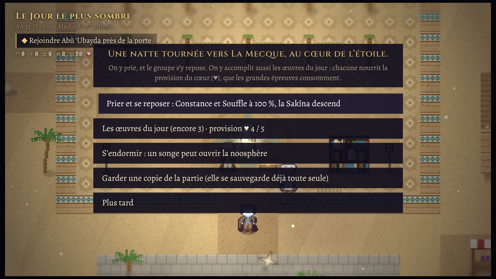<figcaption style="padding:.7em .8em .8em">La natte, au cœur de l’étoile. On y prie, le groupe s’y repose, on y accomplit les œuvres du jour.</figcaption></figure>
      <div>
        <p><b>La partie se garde toute seule</b> : à chaque objectif atteint, toutes les quelques secondes en promenade, et sur l’écran de la Chaîne. Tu peux fermer la page. « Continuer », sur l’écran-titre, te ramène là où tu étais.</p>
        <p><b>La mosquée est le lieu du repos.</b> Sur la natte tournée vers La Mecque, on prie, et le groupe retrouve toute sa Constance et tout son Souffle. Deux carrés de lumière y tournent en sens contraires et dessinent une étoile à huit branches : c’est le repère.</p>
        <ul>
          <li>Sur la natte, ou depuis l’écran de la Chaîne, on peut en plus garder une copie de la partie : trois emplacements.</li>
          <li>Une mosquée que tu as bâtie devient à son tour un lieu de prière et de repos.</li>
          <li>La partie est gardée dans ce navigateur, sur cet appareil.</li>
        </ul>
        <p class="note"><b>À retenir.</b> Si le jeu se bloquait, recharge la page et choisis « Continuer » : rien n’est perdu.</p>
      </div>
    </div>
  </section>

  <p class="partie">Le monde</p>

  <section class="feuillet" id="epoques">
    <h2>Trois époques, une chaîne</h2>
    <p>Le récit remonte la Chaîne, du présent vers la source.</p>
    <div class="tri">
      <figure><div class="ecran"></div><figcaption><b style="color:var(--neon);font-weight:400">2084 · LA CITÉ-MIROIR.</b> Idris est un râwî, un transmetteur, dans une ville où une machine, l’AGRÉGOR, donne corps à ce que des millions de regards désirent ensemble. Entre deux maillons, il y rencontre ceux qu’elle a enfermés dans une idole.</figcaption></figure>
      <figure><div class="ecran"></div><figcaption><b style="color:var(--or);font-weight:400">LA CITADELLE.</b> Le Caïd, seigneur berbère, est un maillon de la Chaîne. Ses veillées sont une fiction.</figcaption></figure>
      <figure><div class="ecran">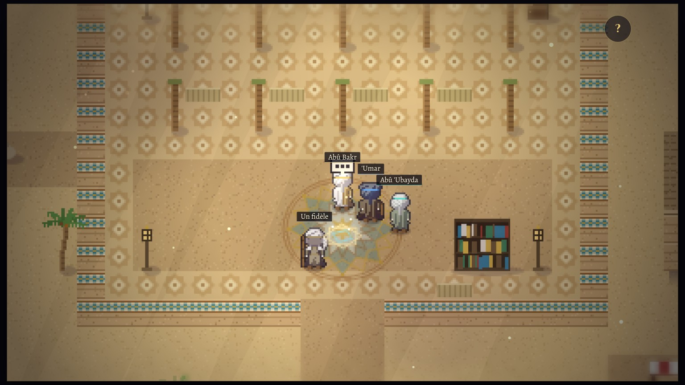</div><figcaption><b style="color:#ffe08a;font-weight:400">632 – 661 · LES COMPAGNONS.</b> Médine, le désert, le Shâm, la mer, Koufa. Les événements sont ceux que les sources rapportent.</figcaption></figure>
    </div>
    <p style="margin-top:1.4em">Entre ces époques s’ouvre la <span class="terme">noosphère</span> : le lieu, tout en lignes de lumière, où les valeurs partagées et les idoles prennent forme. C’est là que se livrent les combats.</p>
  </section>

  <section class="feuillet" id="sagas">
    <h2>Les cinq sagas</h2>
    <p>Chaque saga se suffit à elle-même. Chacune porte une Lumière, la vertu de son Compagnon, qui rejoint ensuite la Chaîne.</p>
    <div class="sagas">
      <article class="saga" style="--c:#ffe08a">
        
        <div><span class="ord">Maillon I · 11–13 H · 632–634</span><h3>Abû Bakr as-Siddîq</h3><span class="lum">As-Siddîq · Lumière : Véracité (Sidq)</span></div>
        <div><p class="dit">Le jour où tout pouvait se défaire, un homme doux a dit le vrai.</p>
          <ol><li><b>Le Jour le plus sombre</b><span>An 11 H · 632 · Médine</span></li><li><b>L'Armée d'Usâma</b><span>An 11 H · 632 · Médine</span></li><li><b>Yamâma — le Menteur</b><span>An 11–12 H · 632–633 · Dhû l-Qassa</span></li></ol>
          <div class="groupe"><span>Abû Bakr</span><span>'Umar</span><span>Abû 'Ubayda</span></div>
        </div>
      </article>
      <article class="saga" style="--c:#6fb6ff">
        
        <div><span class="ord">Maillon II · 13–23 H · 634–644</span><h3>'Umar ibn al-Khattâb</h3><span class="lum">Al-Fârûq · Lumière : Justice ('Adl)</span></div>
        <div><p class="dit">Deux empires tombèrent sous son califat. Lui dormait sur une natte.</p>
          <ol><li><b>Les Rondes de nuit</b><span>An 18 H · 639 · Médine</span></li><li><b>Les Clés de Jérusalem</b><span>An 16 H · 637 · De Médine à Îliyâ'</span></li><li><b>Le Trône et la Natte</b><span>An 17–23 H · 638–644 · Médine</span></li></ol>
          <div class="groupe"><span>'Umar</span><span>Aslam</span><span>Abû 'Ubayda</span><span>'Abd ar-Rahmân</span></div>
        </div>
      </article>
      <article class="saga" style="--c:#ff7a5c">
        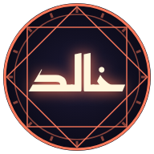
        <div><span class="ord">Maillon III · 13–21 H · 634–642</span><h3>Khâlid ibn al-Walîd</h3><span class="lum">Le Sabre dégainé · Lumière : Courage (Shajâ'a)</span></div>
        <div><p class="dit">Il n'a jamais perdu une bataille. Il lui reste à vaincre sa propre statue.</p>
          <ol><li><b>La Traversée</b><span>An 13 H · 634 · Désert de la Samâwa</span></li><li><b>Yarmoûk</b><span>An 13 ou 15 H · 634–636 · Vallée du Yarmoûk</span></li><li><b>L'Épée au fourreau</b><span>An 17 H · 638 · Qinnasrîn, puis Homs</span></li></ol>
          <div class="groupe"><span>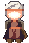Khâlid</span><span>Al-Qa'qâ'</span><span>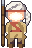Dirâr</span></div>
        </div>
      </article>
      <article class="saga" style="--c:#5fe0d0">
        
        <div><span class="ord">Maillon IV · 23–35 H · 644–656</span><h3>'Uthmân ibn 'Affân</h3><span class="lum">Le Généreux · Lumière : Miséricorde (Rahma)</span></div>
        <div><p class="dit">Il donna sans compter — et, assiégé, refusa qu'une seule goutte de sang fût versée pour lui.</p>
          <ol><li><b>Les Feuillets</b><span>Vers l'an 30 H · 650 · Médine</span></li><li><b>La Bataille des Mâts</b><span>An 28–34 H · 649–655 · Médine, puis la mer</span></li><li><b>La Maison assiégée</b><span>An 35 H · 656 · Médine</span></li></ol>
          <div class="groupe"><span>'Uthmân</span><span>Zayd ibn Thâbit</span><span>Hudhayfa</span></div>
        </div>
      </article>
      <article class="saga" style="--c:#c49bff">
        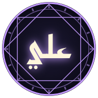
        <div><span class="ord">Maillon V · 35–40 H · 656–661</span><h3>'Alî ibn Abî Tâlib</h3><span class="lum">La Porte du Savoir · Lumière : Savoir ('Ilm)</span></div>
        <div><p class="dit">Face à ceux qui l'ont condamné au nom du Livre, il refuse de condamner à son tour.</p>
          <ol><li><b>Le Bouclier et le Juge</b><span>An 36 H · 657 · Koufa</span></li><li><b>La Parole détournée</b><span>An 37 H · 658 · Koufa et Harûrâ'</span></li><li><b>Nahrawân, puis l’aube</b><span>An 38–40 H · 658–661 · Nahrawân, Koufa</span></li></ol>
          <div class="groupe"><span>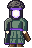'Alî</span><span>Ibn 'Abbâs</span><span>'Ammâr</span><span>Qays</span></div>
        </div>
      </article></div>
  </section>

  <section class="feuillet" id="personnages">
    <h2>Les personnages</h2>
    <p>Chaque saga se joue en groupe. Voici ceux que l’on y mène, avec leur rôle, leur Lumière, leurs vertus et l’acte que leur ouvre la Sakîna.</p>
    <p>Personne n’a de visage. On reconnaît chacun à sa silhouette : un turban haut, large ou dont un pan retombe sur l’épaule, une calotte, un casque ; un manteau long, ample, jeté sur une seule épaule, ou pas de manteau du tout ; une robe rayée, une écharpe, un bouclier. Un Compagnon se reconnaît en outre à son voile de lumière. Ce qu’ils éprouvent se lit dans leur attitude : la tête qui s’incline, le bras qui se lève, le genou qui plie.</p>
    <p>En jeu, dès qu’on s’arrête, le nom de ceux qui entourent le héros s’affiche au-dessus d’eux, et la boîte de dialogue montre la silhouette de celui qui parle. Ces tenues sont une convention de dessin : elles ne prétendent pas restituer un costume attesté.</p>
    <figure class="ecran" style="max-width:720px;margin-top:1.4em"><div style="overflow:hidden;aspect-ratio:16/9"></div><figcaption style="padding:.7em .8em .8em">« Mes jambes ne me portèrent plus, et je tombai à terre. » ’Umar ibn al-Khattâb, d’après al-Bukhârî. Dans le jeu, c’est son corps qui le dit.</figcaption></figure>
    <div class="troupe"><h3>Maillon I · Véracité</h3><article class="fiche-p meneur" style="--c:#ffe08a">
        <div class="scene"></div>
        <div class="texte">
          <header><div><h4>Abû Bakr <span class="ar" lang="ar" dir="rtl">أبو بكر</span></h4><p class="titre">As-Siddîq</p></div></header>
          <dl><div><dt>Rôle</dt><dd>Sage</dd></div><div><dt>Lumière</dt><dd style="color:#ffe08a">Véracité <i>(Sidq)</i></dd></div><div><dt>Acte de Sakîna</dt><dd>As-Siddîq</dd></div></dl>
          <p class="bio">'Abdallâh ibn Abî Quhâfa, des Banû Taym de Quraysh, né à La Mecque vers 573. Marchand d'étoffes et généalogiste réputé des Arabes, il fut parmi les tout premiers à croire et dépensa sa fortune pour affranchir des croyants persécutés, dont Bilâl. Compagnon de l'Hégire et de la Grotte, il dirigea la prière durant la dernière maladie du Messager d'Allah ﷺ.</p><p class="src">D’après Ibn Sa'd, at-Tabaqât ; Ibn Hishâm, as-Sîra ; al-Bukhârî</p>
          <p class="ultime"><b>As-Siddîq.</b> La véracité à nu : frappe tous les égrégores, déchire leurs voiles et révèle leurs failles.</p><ul class="vertus"><li><b>Parole véridique</b><span>niv. 1</span><br><small>Dit le vrai sans détour. Dégâts de Véracité.</small></li><li><b>Apaisement</b><span>niv. 1</span><br><small>Une parole douce relève un cœur : rend de la Constance à un compagnon.</small></li><li><b>Science des lignées</b><span>niv. 2</span><br><small>Nul ne connaissait mieux les généalogies des Arabes : révèle les failles d'un égrégore.</small></li><li><b>Fermeté</b><span>niv. 3</span><br><small>« Je ne dénouerai pas un étendard qu'il a noué. » Renforce la garde du groupe.</small></li><li><b>Affranchir</b><span>niv. 5</span><br><small>Il rachetait les opprimés : retire les altérations d'un compagnon et lui rend un peu de Constance.</small></li><li><b>Certitude</b><span>niv. 7</span><br><small>« S'il l'a dit, il a dit vrai. » Lourds dégâts de Véracité, déchire un voile.</small></li></ul>
          <div class="attitudes"><figure><figcaption>Recueillement</figcaption></figure><figure><figcaption>Résolution</figcaption></figure><figure><figcaption>Accablement</figcaption></figure><figure><figcaption>Salut</figcaption></figure><figure><figcaption>Surprise</figcaption></figure><figure><figcaption>Garde</figcaption></figure></div>
        </div>
      </article><div class="suite"><article class="fiche-p" style="--c:#6fb6ff">
        <div class="scene"></div>
        <div class="texte">
          <header><div><h4>'Umar <span class="ar" lang="ar" dir="rtl">عمر</span></h4><p class="titre">Al-Fârûq</p></div></header>
          <dl><div><dt>Rôle</dt><dd>Gardien</dd></div><div><dt>Lumière</dt><dd style="color:#6fb6ff">Justice <i>('Adl)</i></dd></div><div><dt>Acte de Sakîna</dt><dd>Al-Fârûq</dd></div></dl>
          <p class="bio">'Umar ibn al-Khattâb, des Banû 'Adî de Quraysh. Sa conversion donna de l'assurance aux croyants de La Mecque.</p><p class="src">D’après Ibn Sa'd, at-Tabaqât ; al-Bukhârî</p>
          <p class="vertus-l">La Durra · Firâsa · Rempart · Équité · Hardiesse · Rendre le droit</p>
        </div>
      </article><article class="fiche-p" style="--c:#5fe0d0">
        <div class="scene"></div>
        <div class="texte">
          <header><div><h4>Abû 'Ubayda <span class="ar" lang="ar" dir="rtl">أبو عبيدة</span></h4><p class="titre">Amîn al-Umma</p></div></header>
          <dl><div><dt>Rôle</dt><dd>Soigneur</dd></div><div><dt>Lumière</dt><dd style="color:#5fe0d0">Miséricorde <i>(Rahma)</i></dd></div><div><dt>Acte de Sakîna</dt><dd>Amîn al-Umma</dd></div></dl>
          <p class="bio">'Âmir ibn 'Abdallâh ibn al-Jarrâh, de Quraysh, l'un des dix à qui le Paradis fut annoncé. Le Messager d'Allah ﷺ dit de lui : « Chaque communauté a son homme de confiance, et l'homme de confiance de cette communauté est Abû 'Ubayda ibn al-Jarrâh. »</p><p class="src">D’après al-Bukhârî ; Muslim ; Ibn Sa'd, at-Tabaqât</p>
          <p class="vertus-l">Baume · Dépôt gardé · Partage du pain · Douceur · Relever · Pas du marcheur</p>
        </div>
      </article></div></div><div class="troupe"><h3>Maillon II · Justice</h3><article class="fiche-p meneur" style="--c:#6fb6ff">
        <div class="scene">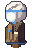</div>
        <div class="texte">
          <header><div><h4>'Umar <span class="ar" lang="ar" dir="rtl">عمر</span></h4><p class="titre">Al-Fârûq</p></div></header>
          <dl><div><dt>Rôle</dt><dd>Gardien</dd></div><div><dt>Lumière</dt><dd style="color:#6fb6ff">Justice <i>('Adl)</i></dd></div><div><dt>Acte de Sakîna</dt><dd>Al-Fârûq</dd></div></dl>
          <p class="bio">'Umar ibn al-Khattâb (qu'Allah l'agrée), des Banû 'Adî de Quraysh, embrasse l'islam à La Mecque et devient l'un des plus proches Compagnons du Prophète ﷺ. On rapporte qu'il reçut le surnom d'al-Fârûq : celui qui distingue le vrai du faux. Deuxième calife (13–23 H), premier à porter le titre de Commandeur des croyants, il institue le calendrier de l'Hégire, le dîwân et les rondes de nuit.</p><p class="src">D’après Ibn Sa'd, Tabaqât ; at-Tabarî, Târîkh ; adh-Dhahabî, Siyar</p>
          <p class="ultime"><b>Al-Fârûq.</b> Sépare le vrai du faux : Justice sur tous, bonus dissipés, deux voiles déchirés.</p><ul class="vertus"><li><b>La Durra</b><span>niv. 1</span><br><small>Coup de férule. Peut étourdir.</small></li><li><b>Firâsa</b><span>niv. 1</span><br><small>Discerne les failles d'un égrégore et le frappe d'un trait de Justice.</small></li><li><b>Ronde de nuit</b><span>niv. 2</span><br><small>Veille sur le groupe : régénération pendant 3 tours.</small></li><li><b>Équité</b><span>niv. 4</span><br><small>La même mesure pour tous : Justice sur tous les égrégores.</small></li><li><b>Porter le fardeau</b><span>niv. 6</span><br><small>Prend la charge sur son dos : attire les coups, en garde, défense accrue.</small></li><li><b>Sentence</b><span>niv. 8</span><br><small>Jugement sans appel : forte Justice, déchire un voile.</small></li></ul>
          <div class="attitudes"><figure>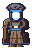<figcaption>Recueillement</figcaption></figure><figure><figcaption>Résolution</figcaption></figure><figure><figcaption>Accablement</figcaption></figure><figure>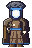<figcaption>Salut</figcaption></figure><figure><figcaption>Surprise</figcaption></figure><figure><figcaption>Garde</figcaption></figure></div>
        </div>
      </article><div class="suite"><article class="fiche-p" style="--c:#5fe0d0">
        <div class="scene"></div>
        <div class="texte">
          <header><div><h4>Aslam <span class="ar" lang="ar" dir="rtl">أسلم</span></h4><p class="titre">L'affranchi de 'Umar</p></div></header>
          <dl><div><dt>Rôle</dt><dd>Soigneur</dd></div><div><dt>Lumière</dt><dd style="color:#5fe0d0">Miséricorde <i>(Rahma)</i></dd></div><div><dt>Acte de Sakîna</dt><dd>Le Repas des humbles</dd></div></dl>
          <p class="bio">Aslam (qu'Allah lui fasse miséricorde) entra au service de 'Umar en l'an 11 H et resta son affranchi (mawlâ). Il l'accompagna dans ses rondes nocturnes et transmit de lui de nombreux récits, dont celui de la famille affamée de la harra.</p><p class="src">D’après Ibn Sa'd, Tabaqât ; adh-Dhahabî, Siyar</p>
          <p class="vertus-l">La Lanterne · Panser · Ranimer le foyer · Veille fidèle · Relever · La Part de chacun</p>
        </div>
      </article><article class="fiche-p" style="--c:#7fd69a">
        <div class="scene"></div>
        <div class="texte">
          <header><div><h4>Abû 'Ubayda <span class="ar" lang="ar" dir="rtl">أبو عبيدة</span></h4><p class="titre">L'homme de confiance de la communauté</p></div></header>
          <dl><div><dt>Rôle</dt><dd>Stratège</dd></div><div><dt>Lumière</dt><dd style="color:#7fd69a">Patience <i>(Sabr)</i></dd></div><div><dt>Acte de Sakîna</dt><dd>Amîn al-Umma</dd></div></dl>
          <p class="bio">Abû 'Ubayda 'Âmir ibn al-Jarrâh (qu'Allah l'agrée) compte parmi les dix à qui le Paradis fut annoncé. Le Prophète ﷺ a dit : « Chaque communauté a son homme de confiance, et l'homme de confiance de cette communauté est Abû 'Ubayda. »</p><p class="src">D’après al-Bukhârî, Sahîh (3744) ; Ibn Sa'd, Tabaqât ; at-Tabarî, Târîkh</p>
          <p class="vertus-l">Garde du dépôt · Parole droite · Rangs serrés · Marche de Shâm · Dépouillement · Demeurer parmi les siens</p>
        </div>
      </article><article class="fiche-p" style="--c:#ffe08a">
        <div class="scene"></div>
        <div class="texte">
          <header><div><h4>'Abd ar-Rahmân <span class="ar" lang="ar" dir="rtl">عبد الرحمن</span></h4><p class="titre">Ibn 'Awf</p></div></header>
          <dl><div><dt>Rôle</dt><dd>Sage</dd></div><div><dt>Lumière</dt><dd style="color:#ffe08a">Véracité <i>(Sidq)</i></dd></div><div><dt>Acte de Sakîna</dt><dd>L'or dans la main</dd></div></dl>
          <p class="bio">'Abd ar-Rahmân ibn 'Awf (qu'Allah l'agrée), l'un des dix à qui le Paradis fut annoncé, compte parmi les tout premiers musulmans. Arrivé à Médine sans rien, il déclina l'aide offerte et demanda seulement : « Indique-moi le marché. »</p><p class="src">D’après al-Bukhârî, Sahîh (2048, 3700) ; Ibn Sa'd, Tabaqât</p>
          <p class="vertus-l">Commerce loyal · Peser juste · Caravane offerte · Aumône discrète · Désistement · Serment tenu</p>
        </div>
      </article></div></div><div class="troupe"><h3>Maillon III · Courage</h3><article class="fiche-p meneur" style="--c:#ff7a5c">
        <div class="scene"></div>
        <div class="texte">
          <header><div><h4>Khâlid <span class="ar" lang="ar" dir="rtl">خالد</span></h4><p class="titre">Le Sabre dégainé</p></div></header>
          <dl><div><dt>Rôle</dt><dd>Guerrier</dd></div><div><dt>Lumière</dt><dd style="color:#ff7a5c">Courage <i>(Shajâ'a)</i></dd></div><div><dt>Acte de Sakîna</dt><dd>Le Sabre dégainé</dd></div></dl>
          <p class="bio">Khâlid ibn al-Walîd ibn al-Mughîra, des Banû Makhzûm de Quraysh (qu'Allah l'agrée). Cavalier redouté de La Mecque, il embrasse l'islam en l'an 8 H. À Mu'ta, il ramène l'armée en bon ordre ; le Messager d'Allah ﷺ le nomme alors « un sabre d'entre les sabres d'Allah ».</p><p class="src">D’après al-Bukhârî ; Ibn Sa'd, Tabaqât ; at-Tabarî, Târîkh</p>
          <p class="ultime"><b>Le Sabre dégainé.</b> Charge irrésistible sur toutes les lignes ; déchire un voile.</p><ul class="vertus"><li><b>Charge</b><span>niv. 1</span><br><small>Charge de cavalerie sur un égrégore.</small></li><li><b>Élan</b><span>niv. 1</span><br><small>Le courage fait reculer l'ombre.</small></li><li><b>Charge tournante</b><span>niv. 2</span><br><small>Contourne la ligne et frappe deux fois.</small></li><li><b>La Manœuvre</b><span>niv. 4</span><br><small>Science de la bataille : frappe toutes les lignes et peut les ralentir.</small></li><li><b>Rengainer</b><span>niv. 6</span><br><small>Remet l'épée au fourreau. La patience fend ce que le fer n'entame pas, et ôte un voile.</small></li><li><b>Neuf sabres</b><span>niv. 8</span><br><small>Frappe quatre fois, jusqu'à ce que la lame se brise.</small></li></ul>
          <div class="attitudes"><figure><figcaption>Recueillement</figcaption></figure><figure>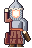<figcaption>Résolution</figcaption></figure><figure>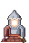<figcaption>Accablement</figcaption></figure><figure>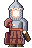<figcaption>Salut</figcaption></figure><figure>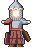<figcaption>Surprise</figcaption></figure><figure><figcaption>Garde</figcaption></figure></div>
        </div>
      </article><div class="suite"><article class="fiche-p" style="--c:#7fd69a">
        <div class="scene"></div>
        <div class="texte">
          <header><div><h4>Al-Qa'qâ' <span class="ar" lang="ar" dir="rtl">القعقاع</span></h4><p class="titre">Ibn 'Amr at-Tamîmî</p></div></header>
          <dl><div><dt>Rôle</dt><dd>Stratège</dd></div><div><dt>Lumière</dt><dd style="color:#7fd69a">Patience <i>(Sabr)</i></dd></div><div><dt>Acte de Sakîna</dt><dd>Vagues de renfort</dd></div></dl>
          <p class="bio">Al-Qa'qâ' ibn 'Amr at-Tamîmî (qu'Allah l'agrée), cavalier des Banû Tamîm. Abû Bakr l'envoie en renfort à Khâlid en Irak ; on rapporte qu'il dit de lui : « La voix d'al-Qa'qâ' dans l'armée vaut mieux que mille hommes. »</p><p class="src">D’après at-Tabarî, Târîkh (d'après Sayf ibn 'Umar) ; Ibn Hajar, al-Isâba</p>
          <p class="vertus-l">Estoc · Œil de l'éclaireur · Tenir la ligne · Dire vrai · Relever un frère · La Voix dans les rangs</p>
        </div>
      </article><article class="fiche-p" style="--c:#ff7a5c">
        <div class="scene"></div>
        <div class="texte">
          <header><div><h4>Dirâr <span class="ar" lang="ar" dir="rtl">ضرار</span></h4><p class="titre">Ibn al-Azwar</p></div></header>
          <dl><div><dt>Rôle</dt><dd>Guerrier</dd></div><div><dt>Lumière</dt><dd style="color:#ff7a5c">Courage <i>(Shajâ'a)</i></dd></div><div><dt>Acte de Sakîna</dt><dd>L'Avant-garde</dd></div></dl>
          <p class="bio">Dirâr ibn al-Azwar al-Asadî (qu'Allah l'agrée), Compagnon, cavalier et poète des Banû Asad. Les récits de la conquête de la Syrie en font l'un des plus hardis cavaliers de Khâlid.</p><p class="src">D’après Ibn 'Abd al-Barr, al-Istî'âb ; Ibn Hajar, al-Isâba ; Futûh ash-Shâm (attribué à al-Wâqidî)</p>
          <p class="vertus-l">Ruée · Partager l'outre · Défi · Panser · Serment tenu · Percée</p>
        </div>
      </article></div></div><div class="troupe"><h3>Maillon IV · Miséricorde</h3><article class="fiche-p meneur" style="--c:#5fe0d0">
        <div class="scene"></div>
        <div class="texte">
          <header><div><h4>'Uthmân <span class="ar" lang="ar" dir="rtl">عثمان</span></h4><p class="titre">Le Généreux</p></div></header>
          <dl><div><dt>Rôle</dt><dd>Soigneur</dd></div><div><dt>Lumière</dt><dd style="color:#5fe0d0">Miséricorde <i>(Rahma)</i></dd></div><div><dt>Acte de Sakîna</dt><dd>Sans effusion de sang</dd></div></dl>
          <p class="bio">'Uthmân ibn 'Affân (qu'Allah l'agrée), du clan des Banû Umayya, compte parmi les premiers à embrasser l'islam, à l'appel d'Abû Bakr. Marchand prospère, il émigra en Abyssinie puis à Médine, et sa fortune servit la communauté sans compter. Désigné par le conseil des six après 'Umar, il fut le troisième calife (23–35 H).</p><p class="src">D’après Ibn Sa'd, Tabaqât ; at-Tabarî, Târîkh ; Ibn Kathîr, al-Bidâya wa-n-Nihâya</p>
          <p class="ultime"><b>Sans effusion de sang.</b> Refuse le sang : relève le groupe, dissipe ses maux et le garde.</p><ul class="vertus"><li><b>Largesse</b><span>niv. 1</span><br><small>Donne sans compter : rend de la Constance à tout le groupe.</small></li><li><b>Retenue</b><span>niv. 1</span><br><small>Répond à la violence par la douceur : blesse l'idole et affaiblit ses coups.</small></li><li><b>Les Feuillets réunis</b><span>niv. 2</span><br><small>Oppose à la discorde un tracé unique. Dégâts de Véracité.</small></li><li><b>Le Puits de Rûma</b><span>niv. 4</span><br><small>L'eau offerte à tous : rend du Souffle au groupe.</small></li><li><b>Affranchir</b><span>niv. 6</span><br><small>Délivre un compagnon de ses altérations et lui rend de la Constance.</small></li><li><b>Patience de l'assiégé</b><span>niv. 8</span><br><small>Tient sans rendre les coups : Patience sur tous les égrégores, et sa garde s'affermit.</small></li></ul>
          <div class="attitudes"><figure><figcaption>Recueillement</figcaption></figure><figure><figcaption>Résolution</figcaption></figure><figure><figcaption>Accablement</figcaption></figure><figure><figcaption>Salut</figcaption></figure><figure><figcaption>Surprise</figcaption></figure><figure><figcaption>Garde</figcaption></figure></div>
        </div>
      </article><div class="suite"><article class="fiche-p" style="--c:#c49bff">
        <div class="scene"></div>
        <div class="texte">
          <header><div><h4>Zayd ibn Thâbit <span class="ar" lang="ar" dir="rtl">زيد</span></h4><p class="titre">Le Scribe</p></div></header>
          <dl><div><dt>Rôle</dt><dd>Sage</dd></div><div><dt>Lumière</dt><dd style="color:#c49bff">Savoir <i>('Ilm)</i></dd></div><div><dt>Acte de Sakîna</dt><dd>La Copie fidèle</dd></div></dl>
          <p class="bio">Zayd ibn Thâbit (qu'Allah l'agrée), Ansârî de Médine, avait une dizaine d'années à l'Hégire. Scribe de la Révélation, il apprit sur l'ordre du Messager d'Allah ﷺ l'écriture d'autres peuples pour sa correspondance.</p><p class="src">D’après al-Bukhârî, Sahîh ; Ibn Sa'd, Tabaqât</p>
          <p class="vertus-l">Le Calame · Collation · Deux témoins · Un seul tracé · Dictée · L'Exemplaire de référence</p>
        </div>
      </article><article class="fiche-p" style="--c:#ffe08a">
        <div class="scene"></div>
        <div class="texte">
          <header><div><h4>Hudhayfa <span class="ar" lang="ar" dir="rtl">حذيفة</span></h4><p class="titre">Le Gardien du secret</p></div></header>
          <dl><div><dt>Rôle</dt><dd>Stratège</dd></div><div><dt>Lumière</dt><dd style="color:#ffe08a">Véracité <i>(Sidq)</i></dd></div><div><dt>Acte de Sakîna</dt><dd>L'Avertisseur</dd></div></dl>
          <p class="bio">Hudhayfa ibn al-Yamân (qu'Allah l'agrée) était appelé le gardien du secret : le Messager d'Allah ﷺ lui avait confié les noms des hypocrites, qu'il ne divulgua jamais. Il disait : « Les gens interrogeaient le Messager d'Allah ﷺ sur le bien ; moi, je l'interrogeais sur le mal, de peur qu'il ne m'atteigne. »</p><p class="src">D’après al-Bukhârî ; Muslim ; Ibn Sa'd, Tabaqât</p>
          <p class="vertus-l">Estoc des frontières · Cri d'alarme · Démasquer · Tenir la ligne · Veille aux frontières · Parole sans détour</p>
        </div>
      </article></div></div><div class="troupe"><h3>Maillon V · Savoir</h3><article class="fiche-p meneur" style="--c:#c49bff">
        <div class="scene">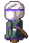</div>
        <div class="texte">
          <header><div><h4>'Alî <span class="ar" lang="ar" dir="rtl">علي</span></h4><p class="titre">La Porte du Savoir</p></div></header>
          <dl><div><dt>Rôle</dt><dd>Guerrier</dd></div><div><dt>Lumière</dt><dd style="color:#c49bff">Savoir <i>('Ilm)</i></dd></div><div><dt>Acte de Sakîna</dt><dd>Haydar</dd></div></dl>
          <p class="bio">'Alî (qu'Allah l'agrée), cousin du Messager d'Allah ﷺ, grandit dans sa maison et fut parmi les tout premiers à embrasser l'islam, encore enfant. La nuit de l'Hégire, il dormit dans le lit du Messager ﷺ pour couvrir son départ. Porte-étendard à Khaybar, il est l'un des dix à qui le Paradis fut annoncé.</p><p class="src">D’après Ibn Hishâm, Sîra ; Ibn Sa'd, Tabaqât ; at-Tabarî, Târîkh ; at-Tirmidhî</p>
          <p class="ultime"><b>Haydar.</b> Le Lion de Khaybar : nul voile ne tient devant lui.</p><ul class="vertus"><li><b>Dhû l-Fiqâr</b><span>niv. 1</span><br><small>Le sabre à deux pointes : deux frappes de fer.</small></li><li><b>Sentence juste</b><span>niv. 1</span><br><small>Un jugement rendu sans égard au rang. Justice.</small></li><li><b>Parole de savoir</b><span>niv. 2</span><br><small>Rend à chaque chose sa place. Savoir.</small></li><li><b>La Porte de Khaybar</b><span>niv. 4</span><br><small>Il se fait rempart : garde du groupe renforcée, les coups viennent à lui.</small></li><li><b>« Interrogez-moi »</b><span>niv. 6</span><br><small>Il répond à toutes les questions à la fois. Savoir sur tous les égrégores.</small></li><li><b>Arrêt sans appel</b><span>niv. 8</span><br><small>Justice forte ; retire les faveurs que l’égrégore s’est données.</small></li></ul>
          <div class="attitudes"><figure><figcaption>Recueillement</figcaption></figure><figure><figcaption>Résolution</figcaption></figure><figure><figcaption>Accablement</figcaption></figure><figure>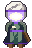<figcaption>Salut</figcaption></figure><figure><figcaption>Surprise</figcaption></figure><figure><figcaption>Garde</figcaption></figure></div>
        </div>
      </article><div class="suite"><article class="fiche-p" style="--c:#c49bff">
        <div class="scene"></div>
        <div class="texte">
          <header><div><h4>Ibn 'Abbâs <span class="ar" lang="ar" dir="rtl">ابن عباس</span></h4><p class="titre">Le Docte de la communauté</p></div></header>
          <dl><div><dt>Rôle</dt><dd>Sage</dd></div><div><dt>Lumière</dt><dd style="color:#c49bff">Savoir <i>('Ilm)</i></dd></div><div><dt>Acte de Sakîna</dt><dd>Le Docte</dd></div></dl>
          <p class="bio">Cousin du Messager d'Allah ﷺ, il avait environ treize ans à sa mort (qu'Allah l'agrée, ainsi que son père). Le Messager ﷺ avait invoqué pour lui l'intelligence de la religion.</p><p class="src">D’après al-Bukhârî ; Ibn Sa'd, Tabaqât</p>
          <p class="vertus-l">Question droite · L'Interprète · Parole apaisante · La Preuve · Trois réponses · Le Retour des égarés</p>
        </div>
      </article><article class="fiche-p" style="--c:#7fd69a">
        <div class="scene"></div>
        <div class="texte">
          <header><div><h4>'Ammâr <span class="ar" lang="ar" dir="rtl">عمّار</span></h4><p class="titre">Le Vétéran</p></div></header>
          <dl><div><dt>Rôle</dt><dd>Soigneur</dd></div><div><dt>Lumière</dt><dd style="color:#7fd69a">Patience <i>(Sabr)</i></dd></div><div><dt>Acte de Sakîna</dt><dd>Patience des premiers jours</dd></div></dl>
          <p class="bio">'Ammâr (qu'Allah l'agrée) fut des tout premiers musulmans de La Mecque. Sa famille, pauvre et sans protecteur, endura la torture pour sa foi, et ses parents comptent parmi les premiers martyrs de l'islam.</p><p class="src">D’après Ibn Hishâm, Sîra ; Ibn Sa'd, Tabaqât ; Ahmad, al-Musnad</p>
          <p class="vertus-l">Main du vétéran · Patience ardente · Baume des anciens · Délier · Tenir</p>
        </div>
      </article><article class="fiche-p" style="--c:#5fe0d0">
        <div class="scene"></div>
        <div class="texte">
          <header><div><h4>Qays <span class="ar" lang="ar" dir="rtl">قيس</span></h4><p class="titre">Fils de Sa'd</p></div></header>
          <dl><div><dt>Rôle</dt><dd>Stratège</dd></div><div><dt>Lumière</dt><dd style="color:#5fe0d0">Miséricorde <i>(Rahma)</i></dd></div><div><dt>Acte de Sakîna</dt><dd>Générosité sans compte</dd></div></dl>
          <p class="bio">Qays ibn Sa'd ibn 'Ubâda (qu'Allah les agrée), des Ansâr de Médine, était le fils du chef des Khazraj. Il se tenait auprès du Messager d'Allah ﷺ, rapporte Anas, « comme le chef de la garde auprès de l'émir ».</p><p class="src">D’après al-Bukhârî ; Ibn Sa'd, Tabaqât ; at-Tabarî, Târîkh</p>
          <p class="vertus-l">Largesse · Coup du garde · Main ouverte · Manœuvre · Bannière de sûreté · Relever</p>
        </div>
      </article></div></div><div class="troupe"><h3>La Citadelle</h3><article class="fiche-p meneur" style="--c:#7fd69a">
        <div class="scene">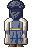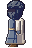</div>
        <div class="texte">
          <header>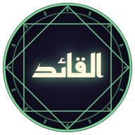<div><h4>Le Caïd <span class="ar" lang="ar" dir="rtl">القائد</span></h4><p class="titre">Seigneur de la Citadelle</p></div></header>
          <dl><div><dt>Rôle</dt><dd>Gardien</dd></div><div><dt>Lumière</dt><dd style="color:#7fd69a">Patience <i>(Sabr)</i></dd></div><div><dt>Acte de Sakîna</dt><dd>Ce qui tient les hommes</dd></div></dl>
          <p class="bio">Seigneur berbère d'une citadelle au bord du désert, héritier d'un père assassiné. Il n'a pas de nom dans la Chaîne : seulement sa charge, et ce qu'il a transmis. Il apprit à gouverner dans les vies des Compagnons, que lui lisait un vieux maître, et consigna pour son fils ce qu'il en avait fait.</p><p class="src">Personnage de fiction</p>
          <p class="ultime"><b>Ce qui tient les hommes.</b> Relève, soigne et fortifie tout le groupe.</p><ul class="vertus"><li><b>Veiller</b><span>niv. 1</span><br><small>Tenir sans haine : frappe de Patience.</small></li><li><b>Peser l'homme</b><span>niv. 1</span><br><small>Regarder avant de juger : révèle les failles d'un égrégore.</small></li><li><b>Faire rempart</b><span>niv. 1</span><br><small>Se place devant les siens : attire les coups, Garde renforcée.</small></li><li><b>« Disait mon père »</b><span>niv. 2</span><br><small>Une parole reçue raffermit le groupe : Force et Esprit accrus.</small></li><li><b>Dire le vrai</b><span>niv. 3</span><br><small>Nommer la chose telle qu'elle est : frappe de Véracité.</small></li><li><b>La même loi</b><span>niv. 3</span><br><small>Une seule balance pour tous : Justice sur tous les égrégores.</small></li></ul>
          <div class="attitudes"><figure><figcaption>Recueillement</figcaption></figure><figure><figcaption>Résolution</figcaption></figure><figure><figcaption>Accablement</figcaption></figure><figure><figcaption>Salut</figcaption></figure><figure>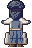<figcaption>Surprise</figcaption></figure><figure><figcaption>Garde</figcaption></figure></div>
        </div>
      </article><div class="suite"><article class="fiche-p" style="--c:#c49bff">
        <div class="scene"></div>
        <div class="texte">
          <header><div><h4>Maître Bahrâm <span class="ar" lang="ar" dir="rtl">بهرام</span></h4><p class="titre">le Géomètre</p></div></header>
          <dl><div><dt>Rôle</dt><dd>Soigneur</dd></div><div><dt>Lumière</dt><dd style="color:#c49bff">Savoir <i>('Ilm)</i></dd></div><div><dt>Acte de Sakîna</dt><dd>Ce qui demeure</dd></div></dl>
          <p class="bio">L’un des savants perses à qui le vieux Caïd donna asile. Il mesure les champs, trace les rigoles et tient l’école.</p><p class="src">Personnage de fiction</p>
          <p class="vertus-l">Mesurer · Démontrer · Baume · Partager l'eau · Leçon du soir · La pente douce</p>
        </div>
      </article><article class="fiche-p" style="--c:#ff7a5c">
        <div class="scene">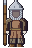</div>
        <div class="texte">
          <header><div><h4>Zîrî <span class="ar" lang="ar" dir="rtl">زيري</span></h4><p class="titre">Capitaine des sentinelles</p></div></header>
          <dl><div><dt>Rôle</dt><dd>Guerrier</dd></div><div><dt>Lumière</dt><dd style="color:#ff7a5c">Courage <i>(Shajâ'a)</i></dd></div><div><dt>Acte de Sakîna</dt><dd>L'aube sur le rempart</dd></div></dl>
          <p class="bio">Il commande les sentinelles du rempart.</p><p class="src">Personnage de fiction</p>
          <p class="vertus-l">Coup de lance · Braver · Tenir le poste · La ronde · Poser la lance · Cri de la relève</p>
        </div>
      </article></div></div><div class="troupe"><h3>2084 · La Cité-Miroir</h3><article class="fiche-p meneur" style="--c:#7fd69a">
        <div class="scene"></div>
        <div class="texte">
          <header><div><h4>Idris <span class="ar" lang="ar" dir="rtl">إدريس</span></h4><p class="titre">le Râwî</p></div></header>
          <dl><div><dt>Rôle</dt><dd>Stratège</dd></div><div><dt>Lumière</dt><dd style="color:#7fd69a">Patience <i>(Sabr)</i></dd></div><div><dt>Acte de Sakîna</dt><dd>La Chaîne entière</dd></div></dl>
          <p class="bio">Archiviste de la Cité-Miroir, en 2084. Il descend aux Archives basses, y trouve la Chaîne et la remonte, maillon après maillon.</p><p class="src">Personnage de fiction</p>
          <p class="ultime"><b>La Chaîne entière.</b> De témoin en témoin : toutes les Lumières à la fois.</p><ul class="vertus"><li><b>Tenir bon</b><span>niv. 1</span><br><small>Résister sans haine : frappe de Patience.</small></li><li><b>Citer la source</b><span>niv. 1</span><br><small>« De qui le tiens-tu ? » Révèle les failles d’un égrégore.</small></li><li><b>Reprendre souffle</b><span>niv. 1</span><br><small>Rend de la Constance à un compagnon.</small></li><li><b>Parole du Véridique</b><span>niv. 9</span><br><small>La Lumière d’Abû Bakr : dire vrai quand tout vacille.</small></li><li><b>Mesure du Fârûq</b><span>niv. 9</span><br><small>La Lumière de ’Umar : la même balance pour tous.</small></li><li><b>Le Sabre rengainé</b><span>niv. 9</span><br><small>La Lumière de Khâlid : le courage de s’effacer.</small></li><li><b>Largesse du Généreux</b><span>niv. 9</span><br><small>La Lumière de ’Uthmân : soigne tout le groupe.</small></li><li><b>Porte du Savoir</b><span>niv. 9</span><br><small>La Lumière de ’Alî : comprendre avant de juger.</small></li></ul>
          <div class="attitudes"><figure><figcaption>Recueillement</figcaption></figure><figure><figcaption>Résolution</figcaption></figure><figure><figcaption>Accablement</figcaption></figure><figure><figcaption>Salut</figcaption></figure><figure><figcaption>Surprise</figcaption></figure><figure><figcaption>Garde</figcaption></figure></div>
        </div>
      </article><div class="suite"><article class="fiche-p" style="--c:#c49bff">
        <div class="scene">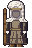</div>
        <div class="texte">
          <header><div><h4>Maître Yûnus <span class="ar" lang="ar" dir="rtl">يونس</span></h4><p class="titre">le Gardien</p></div></header>
          <dl><div><dt>Rôle</dt><dd>Soigneur</dd></div><div><dt>Lumière</dt><dd style="color:#c49bff">Savoir <i>('Ilm)</i></dd></div><div><dt>Acte de Sakîna</dt><dd>Ce qui fut gardé</dd></div></dl>
          <p class="bio">Il veille sur les Archives basses et sur la Chaîne. C’est auprès de lui qu’Idris apprend à citer ses sources.</p><p class="src">Personnage de fiction</p>
          <p class="vertus-l">Leçon · Panser · Veille · Rappel · Mémoire vive</p>
        </div>
      </article><article class="fiche-p" style="--c:#ff7a5c">
        <div class="scene"></div>
        <div class="texte">
          <header><div><h4>Sâlim <span class="ar" lang="ar" dir="rtl">سالم</span></h4><p class="titre">le Repenti</p></div></header>
          <dl><div><dt>Rôle</dt><dd>Guerrier</dd></div><div><dt>Lumière</dt><dd style="color:#ff7a5c">Courage <i>(Shajâ'a)</i></dd></div><div><dt>Acte de Sakîna</dt><dd>Coupure générale</dd></div></dl>
          <p class="bio">Dix ans passés à nourrir l’Agrégor. Il sait où est son cœur, et ne veut plus le servir.</p><p class="src">Personnage de fiction</p>
          <p class="vertus-l">Couper le signal · Débrancher · Brouillage · Faire front · L’Aveu</p>
        </div>
      </article></div></div>
    <div class="troupe"><h3>Gens de rencontre</h3>
      <p>Anciens, savants, marchands, soldats, envoyés : ceux à qui l’on parle en chemin. Aucun groupe n’est un ennemi par nature.</p>
      <div class="gens-l"><figure><figcaption>ancien</figcaption></figure><figure><figcaption>savant</figcaption></figure><figure><figcaption>marchand</figcaption></figure><figure>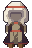<figcaption>homme des tribus</figcaption></figure><figure>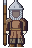<figcaption>soldat</figcaption></figure><figure>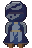<figcaption>Berbère</figcaption></figure><figure><figcaption>Perse</figcaption></figure><figure><figcaption>Romain</figcaption></figure><figure><figcaption>moine</figcaption></figure><figure><figcaption>marin</figcaption></figure><figure>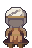<figcaption>enfant</figcaption></figure><figure><figcaption>2084</figcaption></figure></div>
    </div>
  </section>

  <section class="feuillet" id="peuples">
    <h2>Tribus, peuples et alliés</h2>
    <p>Le monde des Compagnons est fait de clans, de tribus, de cités et de deux empires. On leur parle avant tout : délégations, pactes, arbitrages. Aucun groupe n’est un ennemi par nature. Chacun a ses intérêts, et des gens d’honneur.</p>
    <p>Les gens des tribus se reconnaissent à l’étoffe de tête qui retombe sur leurs épaules ; la couleur du cordon dit le clan. Les personnages inventés sont signalés.</p>
    <article class="peuple"><h3>Les Ansâr de Médine</h3><p>Les « Auxiliaires » : les gens de Médine, Aws et Khazraj, qui ont ouvert leurs maisons et leurs palmeraies aux Émigrés venus de La Mecque.</p><div class="gens-l"><figure>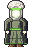<figcaption>Al-Hubâb ibn al-Mundhir</figcaption></figure><figure><figcaption>Bashîr ibn Sa'd</figcaption></figure><figure>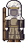<figcaption>Vieil Ansârî</figcaption></figure><figure><figcaption>Abû Ayyûb al-Ansârî</figcaption></figure></div></article><article class="peuple"><h3>Les tribus d’Arabie</h3><p>À la mort du Messager ﷺ, une grande partie des tribus d'Arabie se détache de Médine : certaines renient l'islam, d'autres suivent de faux prophètes, d'autres encore refusent la zakât.</p><p class="src">Recueil : Les guerres de la Ridda · d’après at-Tabarî, Târîkh ; al-Bukhârî ; Muslim</p><div class="gens-l"><figure>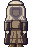<figcaption>Délégué des tribus</figcaption></figure><figure>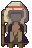<figcaption>Dirghâm, cheikh des Banû Rimth<i>fiction</i></figcaption></figure><figure>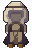<figcaption>Bédouin réfugié</figcaption></figure><figure>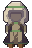<figcaption>Homme des Fazâra</figcaption></figure><figure>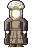<figcaption>Surâqa ibn Mâlik</figcaption></figure><figure>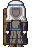<figcaption>Ancien des Kalb</figcaption></figure><figure>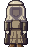<figcaption>Chamelier</figcaption></figure></div></article><article class="peuple"><h3>Les Arabes chrétiens : Ghassân, al-Hîra, Najrân</h3><p>Ghassân, Tanûkh, Lakhm, Judhâm, Bahrâ' : des tribus arabes, chrétiennes pour la plupart, gardaient depuis des générations la frontière de Rome.</p><p class="src">Recueil : Les Arabes chrétiens de Syrie · d’après al-Balâdhurî, Futûh al-Buldân ; at-Tabarî, Târîkh ; Théophane, Chronographie</p><div class="gens-l"><figure>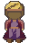<figcaption>Jabala ibn al-Ayham</figcaption></figure><figure><figcaption>Wahb ibn Zurayr<i>fiction</i></figcaption></figure><figure><figcaption>'Amr ibn 'Abd al-Masîh</figcaption></figure><figure><figcaption>Envoyé de Najrân</figcaption></figure><figure><figcaption>Économe du monastère<i>fiction</i></figcaption></figure><figure><figcaption>Ermite du ravin</figcaption></figure></div></article><article class="peuple"><h3>Rome et le Shâm</h3><p>L’empire romain d’Orient tient le Shâm : des garnisons, des marchands, des moines, et à Îliyâ’ (Jérusalem) le patriarche Sophrone, qui ne veut remettre la ville qu’au calife en personne.</p><div class="gens-l"><figure><figcaption>Sophrone</figcaption></figure><figure>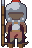<figcaption>Garde de la porte</figcaption></figure><figure>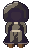<figcaption>Moine</figcaption></figure><figure>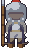<figcaption>Marchand de Homs</figcaption></figure><figure>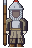<figcaption>Ancien du Fort des Oliviers<i>fiction</i></figcaption></figure><figure><figcaption>Un prêtre du port</figcaption></figure></div></article><article class="peuple"><h3>La Perse</h3><p>Al-Hurmuzân, prince perse d'al-Ahwâz capturé à Tustar, fut conduit à Médine par Anas ibn Mâlik et al-Ahnaf ibn Qays.</p><p class="src">Recueil : « Tu as été juste, alors tu as dormi » · d’après at-Tabarî, Târîkh ; al-Balâdhurî, Futûh al-Buldân ; la formule relève d'une tradition plus tardive</p><div class="gens-l"><figure>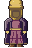<figcaption>Al-Hurmuzân</figcaption></figure><figure>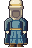<figcaption>Farrokh, géomètre<i>fiction</i></figcaption></figure></div></article><article class="peuple"><h3>Koufa et l’Irak</h3><p>Ville-camp fondée en l'an 17 par Sa'd ibn Abî Waqqâs, sur l'ordre de 'Umar, près de l'Euphrate. 'Alî en fit le siège du califat en l'an 36.</p><p class="src">Recueil : Koufa · d’après al-Balâdhurî, Futûh al-Buldân ; at-Tabarî, Târîkh</p><div class="gens-l"><figure>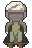<figcaption>Kumayl ibn Ziyâd</figcaption></figure><figure>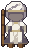<figcaption>Le juge Shurayh</figcaption></figure><figure>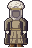<figcaption>Qanbar</figcaption></figure><figure>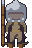<figcaption>Mâlik al-Ashtar</figcaption></figure><figure>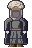<figcaption>Ibn al-Kawwâ'</figcaption></figure></div></article><article class="peuple"><h3>L’Égypte et la mer</h3><p>'Umar avait refusé que l'on prît la mer, par souci de la vie des hommes. 'Uthmân l'accorda à Mu'âwiya, gouverneur du Shâm, à une condition : ne désigner personne, ne tirer personne au sort, et n'embarquer que des volontaires.</p><p class="src">Recueil : La première flotte · d’après at-Tabarî, Târîkh (an 28 H)</p><div class="gens-l"><figure><figcaption>'Abdallâh ibn Sa'd</figcaption></figure><figure>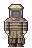<figcaption>Un charpentier d'Alexandrie</figcaption></figure><figure><figcaption>Une vigie</figcaption></figure><figure>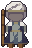<figcaption>Un ancien du port</figcaption></figure></div></article><article class="peuple"><h3>Les gens de la Citadelle</h3><p>Autour du Caïd : les amghars des tribus berbères, un général, un caravanier, un moine-médecin, et des géomètres perses à qui son père donna asile. Tous sont de fiction.</p><div class="gens-l"><figure>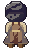<figcaption>Amghar Idir<i>fiction</i></figcaption></figure><figure><figcaption>Amghar Meksa<i>fiction</i></figcaption></figure><figure><figcaption>Amezyan, le puisatier<i>fiction</i></figcaption></figure><figure><figcaption>L'ancien Warsen<i>fiction</i></figcaption></figure><figure><figcaption>Izem, le général<i>fiction</i></figcaption></figure><figure><figcaption>Maître Yishaq, caravanier<i>fiction</i></figcaption></figure><figure><figcaption>Frère Cyprien, moine-médecin<i>fiction</i></figcaption></figure></div></article><article class="peuple"><h3>Les gens de la Cité-Miroir</h3><p>En 2084, sous le grand écran : un enfant qui pose des questions, et ceux que la ville a enfermés chacun dans son idole. Tous sont de fiction.</p><div class="gens-l"><figure><figcaption>Enfant<i>fiction</i></figcaption></figure><figure><figcaption>Celui qui défile<i>fiction</i></figcaption></figure><figure><figcaption>Le Régent<i>fiction</i></figcaption></figure><figure><figcaption>L’Admiré<i>fiction</i></figcaption></figure><figure><figcaption>Le Compteur<i>fiction</i></figcaption></figure><figure><figcaption>Le Cartographe<i>fiction</i></figcaption></figure></div></article><article class="peuple"><h3>Ceux qui parlent des deux côtés</h3><p>Dans chaque saga, un personnage inventé dit à chacun ce qu’il veut entendre et sert son propre compte. Il vient toujours du camp du héros. Ce n’est jamais un Compagnon ni un personnage historique.</p><div class="gens-l"><figure><figcaption>Thâmir le courtier<i>fiction</i></figcaption></figure><figure><figcaption>Hâzim, commis de la Maison de la farine<i>fiction</i></figcaption></figure><figure><figcaption>Ghâlib, l'intendant<i>fiction</i></figcaption></figure><figure><figcaption>Abû l-Akhbâr<i>fiction</i></figcaption></figure><figure><figcaption>Ma'dân, notable des greniers<i>fiction</i></figcaption></figure><figure><figcaption>Maymûn, le chambellan<i>fiction</i></figcaption></figure></div></article>
  </section>

  <p class="partie">Les systèmes</p>

  <section class="feuillet" id="explorer">
    <h2>Explorer, s’orienter aux étoiles</h2>
    <div class="duo">
      <div>
        <p>L’objectif du moment s’affiche en haut à gauche, précédé d’un losange. On parle aux gens qui portent une bulle, on ouvre les coffres, on récolte en s’adressant aux choses.</p>
        <p>La <b>mini-carte</b>, en haut de l’écran, montre le lieu et ta position. Touche-la, ou ouvre <b>Carte</b> dans la halte (touche <kbd>C</kbd>) : le lieu entier tel qu’on le voit, ta position, l’objectif, la natte, le comptoir et les lieux nommés.</p>
        <figure class="ecran"><figcaption style="padding:.7em .8em .8em">La carte de la halte : où l’on est, où l’on va.</figcaption></figure>
        <p>On s’oriente au ciel, comme les pilotes du désert. Le cadran montre huit caps, nommés par l’étoile qui s’y lève ou s’y couche. L’étoile qui brille est celle de ton objectif ; au bord de l’écran, elle te précède.</p>
        <div class="tab"><table>
          <thead><tr><th>Cap</th><th>Étoile</th><th></th><th>C’est-à-dire</th></tr></thead>
          <tbody><tr><td class="n">Nord</td><td>al-Jady</td><td class="ar" lang="ar" dir="rtl">الجدي</td><td>la Polaire, le Chevreau : elle ne bouge pas</td></tr><tr><td class="n">Nord-est</td><td>lever d’al-'Ayyûq</td><td class="ar" lang="ar" dir="rtl">العيّوق</td><td>Capella, la gardienne des Pléiades</td></tr><tr><td class="n">Est</td><td>lever d’an-Nasr at-Tâ'ir</td><td class="ar" lang="ar" dir="rtl">النسر الطائر</td><td>Altaïr, l’Aigle qui vole</td></tr><tr><td class="n">Sud-est</td><td>lever d’al-'Aqrab</td><td class="ar" lang="ar" dir="rtl">العقرب</td><td>le Scorpion, son cœur rouge</td></tr><tr><td class="n">Sud</td><td>Suhayl</td><td class="ar" lang="ar" dir="rtl">سهيل</td><td>Canopus, l’étoile du sud</td></tr><tr><td class="n">Sud-ouest</td><td>coucher d’al-'Aqrab</td><td class="ar" lang="ar" dir="rtl">العقرب</td><td>le Scorpion, son cœur rouge</td></tr><tr><td class="n">Ouest</td><td>coucher d’an-Nasr at-Tâ'ir</td><td class="ar" lang="ar" dir="rtl">النسر الطائر</td><td>Altaïr, l’Aigle qui vole</td></tr><tr><td class="n">Nord-ouest</td><td>coucher d’al-'Ayyûq</td><td class="ar" lang="ar" dir="rtl">العيّوق</td><td>Capella, la gardienne des Pléiades</td></tr></tbody>
        </table></div>
      </div>
      <div class="pile">
        <figure class="ecran"></figure>
        <figure class="ecran"><figcaption style="padding:.7em .8em .8em">La noosphère, où attendent les égrégores.</figcaption></figure>
      </div>
    </div>
  </section>

  <section class="feuillet" id="chaine">
    <h2>La fidélité à la Chaîne</h2>
    <div class="duo inv">
      <div class="pile">
        <figure class="ecran"></figure>
        <figure class="ecran"></figure>
      </div>
      <div>
        <p>Aux moments décisifs, plusieurs actes te sont proposés. Un seul est celui que les transmetteurs ont rapporté.</p>
        <p>Te tromper ne change pas l’Histoire. La Chaîne vacille, le jeu explique pourquoi cette réponse n’est pas celle des sources, puis te ramène à ce qui fut. Le compte de tes réponses justes s’affiche sur l’écran de la Chaîne.</p>
        <p>Les paroles attestées apparaissent en carton, avec leur source. Tout le reste du dialogue est une dramatisation.</p>
        <p class="note"><b>Ce qui varie est fictif ou local.</b> L’issue d’un pourparler, un chantier, une caravane peuvent tourner de plusieurs façons. Un fait historique, jamais.</p>
      </div>
    </div>
  </section>

  <section class="feuillet" id="parole">
    <h2>La parole avant le sabre</h2>
    <div class="duo">
      <div>
        <p>Avant d’en venir au combat, on tente un <b>pourparler</b>. Il se joue en plusieurs manches. À chacune, ton interlocuteur parle et tu choisis un argument.</p>
        <ul>
          <li>Chaque argument fait monter ou baisser la <b>confiance</b>. Il faut atteindre le seuil fixé avant la dernière manche.</li>
          <li>Les meilleurs arguments demandent un <b>savoir</b> : une entrée du Recueil apprise d’un savant, d’un feuillet ou d’un témoin. Sans elle, l’argument reste fermé.</li>
          <li>Avoir <b>prié</b> dans le chapitre donne la sérénité : un point de confiance d’avance.</li>
          <li>Une parole qui porte rapporte de la sagesse, comme une victoire.</li>
        </ul>
        <p>Si la parole échoue, le récit continue. Ce qui n’a pas été noué ainsi devra l’être autrement et coûtera davantage.</p>
      </div>
      <figure class="ecran"><figcaption style="padding:.7em .8em .8em">Pourparler « Les bords de l’auvent », manche 1 sur 4.</figcaption></figure>
    </div>
    <h3>Les idées noires</h3>
    <div class="duo inv">
      <figure class="ecran"><figcaption style="padding:.7em .8em .8em">Au milieu d’un pourparler : ce n’est plus l’homme qui répond, c’est sa honte. Trois manières de lui répondre.</figcaption></figure>
      <div>
        <p>Pour convaincre quelqu’un, il faut parfois dissiper d’abord ce qui parle à sa place. Dans certains pourparlers, à la deuxième manche, une <b>idée noire</b> couvre ta voix : la honte, la peur, le soupçon, la rancune ou le désespoir.</p>
        <p>On ne la combat pas : on lui <b>répond</b>. Elle a deux voiles. À chacun, tu choisis ta manière : <b>dire vrai</b>, <b>expliquer</b> ou <b>rassurer</b>. La bonne manière fait tomber le voile ; une autre t’apprend pourquoi elle ne portait pas. Après quoi il écoute, et la confiance monte d’un point.</p>
        <div class="noires"><figure style="--h:300"><figcaption>La Honte</figcaption></figure><figure style="--h:262"><figcaption>La Peur</figcaption></figure><figure style="--h:96"><figcaption>Le Soupçon</figcaption></figure><figure style="--h:2"><figcaption>La Rancune</figcaption></figure><figure style="--h:238"><figcaption>Le Désespoir</figcaption></figure></div>
        <p class="note">Une idée noire ne s’attache qu’à un personnage de fiction : jamais à un personnage historique.</p>
      </div>
    </div>
  </section>

  <section class="feuillet" id="combat">
    <h2>Le combat</h2>
    <div class="duo inv">
      <figure class="ecran"><figcaption style="padding:.7em .8em .8em">En haut, l’ordre des tours. En bas, Constance, Souffle, Niyya et Sakîna de chacun.</figcaption></figure>
      <div>
        <p>Le combat se joue au tour par tour, et l’ordre des prochains tours est toujours visible. Chaque Compagnon a sa <b>Constance</b> (ce qu’il peut endurer) et son <b>Souffle</b> (ce que coûtent ses vertus). Un compagnon à bout est <span class="terme">éprouvé</span>.</p>
        <h3>Voiles et failles</h3>
        <p>Chaque égrégore est protégé par des <b>voiles</b>. Frappe-le avec la vertu qui est sa <b>faille</b> pour en retirer un. À zéro, il est <span class="terme">dévoilé</span> : il perd son tour et subit bien plus. Ses failles se découvrent en essayant, ou d’emblée si le Savoir du règne est élevé.</p>
      </div>
    </div>
    <h3>Le Fer et les six Lumières</h3>
    <p>Le <b>Fer</b> (Hadîd) est l’élan physique : il frappe, mais certaines idoles y sont insensibles. Les six <b>Lumières</b> sont les vertus des Compagnons. Chaque égrégore craint certaines d’entre elles.</p>
    <div class="lumieres"><div style="--c:#ffe08a"><i>◈︎</i><b>Véracité</b><small>Sidq</small></div><div style="--c:#6fb6ff"><i>⚖︎</i><b>Justice</b><small>'Adl</small></div><div style="--c:#7fd69a"><i>❖︎</i><b>Patience</b><small>Sabr</small></div><div style="--c:#5fe0d0"><i>✦︎</i><b>Miséricorde</b><small>Rahma</small></div><div style="--c:#ff7a5c"><i>▲︎</i><b>Courage</b><small>Shajâ'a</small></div><div style="--c:#c49bff"><i>✧︎</i><b>Savoir</b><small>'Ilm</small></div></div>
    <div class="duo">
      <div>
        <h3>Les commandes</h3>
        <div class="tab"><table><tbody>
          <tr><td class="n">Frapper</td><td>Un coup de Fer. Gratuit.</td></tr>
          <tr><td class="n">Éclairer</td><td>Un coup porté avec la Lumière du Compagnon. Gratuit.</td></tr>
          <tr><td class="n">Vertus</td><td>Les actes propres à chacun : frapper fort, soigner, protéger, révéler une faille. Ils coûtent du Souffle.</td></tr>
          <tr><td class="n">Objets</td><td>Ce que contient la Besace.</td></tr>
          <tr><td class="n">Garde</td><td>Encaisser, et gagner de la Niyya et de la Sakîna.</td></tr>
        </tbody></table></div>
      </div>
      <div>
        <h3>Niyya et Sakîna</h3>
        <p>La <b>Niyya</b>, l’intention, monte d’un point par tour, jusqu’à cinq. Dépenses-en jusqu’à trois d’un coup pour multiplier les coups de Fer ou renforcer une vertu.</p>
        <p>La <b>Sakîna</b> est la jauge dorée. Elle monte quand on endure, quand on touche une faille, quand on dévoile. Pleine, elle ouvre l’acte ultime du Compagnon.</p>
        <p>Si tout le groupe est éprouvé, la chaîne ne rompt pas : le combat reprend, le groupe reposé.</p>
      </div>
    </div>
    <h3>La Besace</h3>
    <div class="tab"><table><tbody><tr><td class="n">Dattes de Médine</td><td>Rend 40 % de Constance à un compagnon.</td></tr><tr><td class="n">Outre d'eau</td><td>Rend 80 % de Constance à un compagnon.</td></tr><tr><td class="n">Pain d'orge</td><td>Rend 25 % de Constance à tout le groupe.</td></tr><tr><td class="n">Miel</td><td>Dissipe les altérations et rend 30 % de Constance.</td></tr><tr><td class="n">Musc</td><td>Rend 50 % de Souffle à un compagnon.</td></tr><tr><td class="n">Lait chaud</td><td>Relève un compagnon éprouvé (50 % de Constance).</td></tr><tr><td class="n">Siwâk</td><td>Accorde 2 points de Niyya.</td></tr></tbody></table></div>
  </section>

  <section class="feuillet" id="mal">
    <h2>L’organigramme du mal</h2>
    <div class="duo">
      <div>
        <p>Une page de la halte range ce que l’on rencontre. Elle a deux étages, séparés par un trait.</p>
        <ul>
          <li><b>En haut, ce qui est enseigné.</b> Iblîs, que le jeu nomme sans jamais le montrer ni le combattre ; ceux qui soufflent, sans nom ni figure ; et le cœur, qui consent ou refuse. C’est là que tout se joue.</li>
          <li><b>En bas, les images du jeu.</b> Les idées noires et les maux du cœur, qui pèsent sur une personne ; les égrégores, quand l’idée est reprise par beaucoup ; les idoles, quand elle a pris racine.</li>
        </ul>
        <h3>À chaque mal sa réponse</h3>
        <ul>
          <li>Une <b>idée noire</b> : par la parole, la pédagogie, la bienveillance.</li>
          <li>Un <b>mal du cœur</b> : par l’œuvre, qui forge sa lame.</li>
          <li>Un <b>égrégore</b> : par le combat.</li>
          <li>Une <b>idole</b> : par une bataille déclarée.</li>
        </ul>
        <p>Chaque idole a une jauge d’<b>enracinement</b>, de un à cinq. La parole qui porte la déracine, et l’idole pèse moins ; la parole manquée la laisse s’enfoncer.</p>
        <p class="note">On ne combat ni Iblîs ni ceux qui soufflent, et le jeu ne s’en prend à aucun djinn. La jauge se dit d’une idole, jamais d’une époque ni de ses gens.</p>
      </div>
      <figure class="ecran"><figcaption style="padding:.7em .8em .8em">La page « Organigramme du mal » de la halte.</figcaption></figure>
    </div>
  </section>

  <section class="feuillet" id="bataille">
    <h2>La bataille déclarée</h2>
    <div class="duo inv">
      <figure class="ecran"><figcaption style="padding:.7em .8em .8em">Avant Yarmoûk : ce que l’on a, et ce qui manque.</figcaption></figure>
      <div>
        <p>Contre une idole, on ne se bat pas sans le dire. La bataille est <b>déclarée</b>, et elle commence par une <b>préparation</b> : les hommes, le groupe, les armes et les boucliers, les vertus, la besace, le cœur. La page signale ce qui manque sans rien bloquer, et l’on peut encore s’y équiper.</p>
        <p>Là où le récit met une troupe aux côtés du héros, des <b>rangs</b> livrent la bataille avec le groupe, sur un champ de cinq colonnes et trois couloirs. En face, les <b>nuées</b> de l’idole : jamais des hommes.</p>
        <ul>
          <li><b>Ordonner.</b> Au tour d’un compagnon : tenir, avancer, charger, tirer, glisser, se replier. Après chaque tour de l’idole, les rangs exécutent leur ordre, puis les nuées avancent.</li>
          <li><b>Le flanc.</b> Un rang qui atteint le pied de l’idole découvre son flanc : un voile tombe, une faille se révèle.</li>
          <li><b>Khâlid ibn al-Walîd</b> ordonne sans perdre son tour, et connaît trois manœuvres : la réserve mobile, l’enveloppement, le repli feint.</li>
          <li><b>Personne ne tombe.</b> Un rang éprouvé se replie et se reforme. Le jeu ne donne aucun effectif.</li>
        </ul>
      </div>
    </div>
    <div class="duo">
      <div>
        <h3>Le secours</h3>
        <p>Quand une bataille déclarée est presque perdue et que le dernier compagnon va tomber, le <b>secours</b> peut venir : le groupe est relevé, une fois. Il ne vient que si la prière a été tenue dans le chapitre, et l’on ne le commande pas.</p>
        <p class="note">Le jeu ne montre pas les anges, ne les nomme pas, ne les compte pas. Il cite ce que le Coran rapporte de Badr (8:9-10, traduction du sens) et ne dit rien d’un autre jour.</p>
      </div>
      <figure class="ecran"><figcaption style="padding:.7em .8em .8em">Yarmoûk : les rangs portent le numéro du menu, leur tenue et leur ordre.</figcaption></figure>
    </div>
  </section>

  <section class="feuillet" id="equipement">
    <h2>L’équipement</h2>
    <div class="duo">
      <figure class="ecran"><figcaption style="padding:.7em .8em .8em">Dans la halte : quatre emplacements par compagnon, et la réserve commune.</figcaption></figure>
      <div>
        <p>Chaque compagnon a quatre emplacements : <b>main droite</b>, <b>main gauche</b>, <b>tête</b> et <b>corps</b>. 53 pièces se partagent entre eux, et chaque rôle a les siennes : un sage ne porte pas de cotte de mailles, un guerrier n’a que faire d’un calame.</p>
        <p>Les pièces viennent des <b>coffres</b>, des <b>victoires</b> (toujours après une idole, parfois après un combat ordinaire) et de la <b>boutique d’équipement</b>, au comptoir. Elles vont dans une <b>réserve</b> commune à toute la Chaîne : à la fin d’un maillon, ce que le groupe portait y retourne, et le groupe suivant s’en sert.</p>
        <p>Quand une pièce arrive, le jeu demande aussitôt qui la porte. Dans la halte, <b>Au mieux</b> habille tout le groupe d’un geste.</p>
      </div>
    </div>
    <div class="duo inv" style="margin-top:2.6em">
      <figure class="ecran"><figcaption style="padding:.7em .8em .8em">Avant de choisir, on voit ce que la pièce change, chiffre par chiffre.</figcaption></figure>
      <div>
        <h3>Chaque famille a son caractère</h3>
        <div class="tab"><table><tbody>
          <tr><td class="n">Épée</td><td>La Force la plus sûre.</td></tr>
          <tr><td class="n">Lance</td><td>Perce une part de la Garde adverse.</td></tr>
          <tr><td class="n">Arc</td><td>Tire le premier : qui le porte agit plus tôt au début du combat.</td></tr>
          <tr><td class="n">Dague</td><td>Vive : elle frappe parfois deux fois.</td></tr>
          <tr><td class="n">Masse</td><td>Lourde : elle peut étourdir.</td></tr>
          <tr><td class="n">Bâton, calame</td><td>Le bâton soutient le Souffle ; le calame nourrit l’Esprit.</td></tr>
          <tr><td class="n">Bouclier</td><td>Pare parfois un coup de fer, qui ne fait alors que la moitié de son mal.</td></tr>
          <tr><td class="n">Casque</td><td>Aide à tenir bon face à l’étourdissement.</td></tr>
          <tr><td class="n">Armure</td><td>Le fer protège, et il ralentit.</td></tr>
        </tbody></table></div>
      </div>
    </div>
    <h3>On voit ce que l’on porte</h3>
    <div class="duo">
      <figure class="ecran"><figcaption style="padding:.7em .8em .8em">En combat, chacun porte ce qu’on lui a donné.</figcaption></figure>
      <div>
        <p>En combat et dans la halte, la silhouette montre l’arme, le bouclier, le casque et l’armure. Les étoffes ne changent pas le dessin : chacun garde la coiffe et le manteau qui le font reconnaître. Dans le récit, personne ne change de silhouette.</p>
        <div class="tenues"><figure><span></span><figcaption><b>Au départ</b>Épée de fer, Turban de coton, Tunique de laine</figcaption></figure><figure><span></span><figcaption><b>Lancier</b>Lance d’al-Khatt, Rondache de bois, Casque de fer, Cotte de mailles</figcaption></figure><figure><span></span><figcaption><b>Archer</b>Arc de nab', Casque de cuir, Gilet de cuir</figcaption></figure><figure><span></span><figcaption><b>Homme de ligne</b>Masse de fer, Grand bouclier, Casque à bandes, Cuirasse à lamelles</figcaption></figure><figure><span></span><figcaption><b>Éclaireur</b>Dague, Bouclier de cuir, Coiffe de mailles, Tunique matelassée</figcaption></figure><figure><span></span><figcaption><b>Scribe</b>Écritoire de scribe, Tablette de bois, Turban de voyage, Tunique de lin</figcaption></figure><figure><span></span><figcaption><b>Marcheur</b>Bâton d’acacia, Gourde de cuir, Calotte de feutre, Manteau de laine</figcaption></figure></div>
      </div>
    </div>
    <div class="duo" style="margin-top:2.6em">
      <figure class="ecran"><figcaption style="padding:.7em .8em .8em">Une pièce arrive : le jeu demande aussitôt qui la porte.</figcaption></figure>
      <figure class="ecran"><figcaption style="padding:.7em .8em .8em">À la boutique : le prix, l’effet, et à qui la pièce irait mieux.</figcaption></figure>
    </div>
    <h3>La boutique d’équipement, lieu par lieu</h3>
    <p>Au comptoir, la boutique vend ce que l’on fabrique sur place ou ce qui passe par là : de 8 à 85 dirhams, et la revente rend la moitié. Chaque victoire rapporte quelques dirhams. La bourse est la même que pour l’aumône : il faut choisir.</p>
    <div class="tab"><table class="etals"><tbody><tr><td class="n">Médine</td><td><span class="etal">Épée de fer</span> <span class="etal">Épée du Yémen</span> <span class="etal">Javelot</span> <span class="etal">Couteau de ceinture</span> <span class="etal">Bâton de marche</span> <span class="etal">Bâton d’acacia</span> <span class="etal">Calame de roseau</span> <span class="etal">Calame et encrier</span> <span class="etal">Bouclier de cuir</span> <span class="etal">Gourde de cuir</span> <span class="etal">Turban de coton</span> <span class="etal">Turban de voyage</span> <span class="etal">Calotte de feutre</span> <span class="etal">Tunique de laine</span> <span class="etal">Tunique de lin</span> <span class="etal">Manteau de laine</span> <span class="etal">Gilet de cuir</span></td></tr><tr><td class="n">Désert</td><td><span class="etal">Arc de chasse</span> <span class="etal">Arc de nab'</span> <span class="etal">Lance d’al-Khatt</span> <span class="etal">Massue de tamaris</span> <span class="etal">Houlette de berger</span> <span class="etal">Bâton d’acacia</span> <span class="etal">Bouclier de cuir</span> <span class="etal">Gourde de cuir</span> <span class="etal">Chèche des sables</span> <span class="etal">Turban de voyage</span> <span class="etal">Manteau rayé du Yémen</span> <span class="etal">Manteau de laine</span></td></tr><tr><td class="n">Camp</td><td><span class="etal">Épée du Yémen</span> <span class="etal">Épée d’acier de l’Inde</span> <span class="etal">Lance d’al-Khatt</span> <span class="etal">Lance samharie</span> <span class="etal">Arc de nab'</span> <span class="etal">Dague</span> <span class="etal">Rondache de bois</span> <span class="etal">Bouclier ferré</span> <span class="etal">Casque de cuir</span> <span class="etal">Coiffe de mailles</span> <span class="etal">Casque de fer</span> <span class="etal">Gilet de cuir</span> <span class="etal">Tunique matelassée</span> <span class="etal">Cotte de mailles</span></td></tr><tr><td class="n">Cité romaine</td><td><span class="etal">Épée d’acier de l’Inde</span> <span class="etal">Masse de fer</span> <span class="etal">Dague</span> <span class="etal">Écritoire de scribe</span> <span class="etal">Grand bouclier</span> <span class="etal">Bouclier ferré</span> <span class="etal">Tablette de bois</span> <span class="etal">Lampe de veille</span> <span class="etal">Casque à bandes</span> <span class="etal">Casque de fer</span> <span class="etal">Tunique de lin</span> <span class="etal">Cuirasse à lamelles</span> <span class="etal">Tunique matelassée</span></td></tr><tr><td class="n">Koufa</td><td><span class="etal">Épée d’acier de l’Inde</span> <span class="etal">Épée de Mashârif</span> <span class="etal">Arc à double courbure</span> <span class="etal">Dague effilée</span> <span class="etal">Bâton ferré</span> <span class="etal">Écritoire de scribe</span> <span class="etal">Calame taillé fin</span> <span class="etal">Rondache de bois</span> <span class="etal">Tablette de bois</span> <span class="etal">Lampe de veille</span> <span class="etal">Calotte doublée</span> <span class="etal">Casque enturbanné</span> <span class="etal">Manteau rayé du Yémen</span> <span class="etal">Cotte de mailles</span> <span class="etal">Cotte salûqie</span></td></tr><tr><td class="n">La Citadelle</td><td><span class="etal">Épée du Yémen</span> <span class="etal">Lance samharie</span> <span class="etal">Massue de tamaris</span> <span class="etal">Bâton ferré</span> <span class="etal">Houlette de berger</span> <span class="etal">Calame et encrier</span> <span class="etal">Rondache de bois</span> <span class="etal">Bouclier de lamt</span> <span class="etal">Lampe de veille</span> <span class="etal">Chèche des sables</span> <span class="etal">Casque de fer</span> <span class="etal">Burnous</span> <span class="etal">Tunique matelassée</span> <span class="etal">Cotte de mailles</span></td></tr></tbody></table></div>
    <h3>Main droite</h3><div class="pieces-g"><article class="piece"><div><h4>Épée de fer <span>épée</span></h4><p class="fx">Force +3 %</p><p>Lame droite à deux tranchants, sans ornement.</p></div></article><article class="piece"><div><h4>Épée du Yémen <span>épée</span></h4><p class="fx">Force +7 %</p><p>Le Yémen forge depuis longtemps ; ses lames sont recherchées.</p></div></article><article class="piece"><div><h4>Épée d’acier de l’Inde <span>épée</span></h4><p class="fx">Force +11 %</p><p>Un acier venu par mer. Les poètes anciens nomment cette lame muhannad.</p></div></article><article class="piece"><div><h4>Épée de Mashârif <span>épée</span></h4><p class="fx">Force +15 % · Élan +2 %</p><p>Les poètes anciens la nomment mashrafî, du nom des bourgs où on la forgeait.</p></div></article><article class="piece"><div><h4>Épée de maître forgeron <span>épée</span></h4><p class="fx">Force +19 % · Élan +2 %</p><p>Un fil égal d’un bout à l’autre : l’ouvrage d’une vie d’atelier.</p></div></article><article class="piece"><div><h4>Javelot <span>lance</span></h4><p class="fx">Force +5 % · Élan +2 % · perce la garde (15 %)</p><p>Court et léger. On le tient ou on le lance.</p></div></article><article class="piece"><div><h4>Lance d’al-Khatt <span>lance</span></h4><p class="fx">Force +9 % · perce la garde (20 %)</p><p>Hampe de roseau dur débarquée à al-Khatt, sur la côte du Bahreïn : on la dit khattî.</p></div></article><article class="piece"><div><h4>Lance samharie <span>lance</span></h4><p class="fx">Force +13 % · perce la garde (25 %)</p><p>Droite et ferme : les poètes anciens la nomment samharî.</p></div></article><article class="piece"><div><h4>Arc de chasse <span>arc</span></h4><p class="fx">Force +4 % · Élan +4 % · agit plus tôt au début du combat</p><p>Un arc simple, d’une seule pièce de bois.</p></div></article><article class="piece"><div><h4>Arc de nab' <span>arc</span></h4><p class="fx">Force +8 % · Élan +6 % · agit plus tôt au début du combat</p><p>Taillé dans le nab', le bois que préféraient les archers d’Arabie.</p></div></article><article class="piece"><div><h4>Arc à double courbure <span>arc</span></h4><p class="fx">Force +12 % · Élan +7 % · agit plus tôt au début du combat</p><p>Bois, corne et tendon collés, à la manière des archers de Perse.</p></div></article><article class="piece"><div><h4>Couteau de ceinture <span>dague</span></h4><p class="fx">Force +2 % · Élan +3 %</p><p>Celui de tous les jours, qui coupe le pain et la corde.</p></div></article><article class="piece"><div><h4>Dague <span>dague</span></h4><p class="fx">Force +6 % · Élan +6 % · frappe parfois deux fois (20 %)</p><p>Lame courte, vite sortie.</p></div></article><article class="piece"><div><h4>Dague effilée <span>dague</span></h4><p class="fx">Force +9 % · Élan +8 % · frappe parfois deux fois (30 %)</p><p>Si mince qu’elle trouve le défaut d’une garde.</p></div></article><article class="piece"><div><h4>Massue de tamaris <span>masse</span></h4><p class="fx">Force +8 % · Élan −4 % · peut étourdir (12 %)</p><p>Un bois dense, coupé au bord des oueds.</p></div></article><article class="piece"><div><h4>Masse de fer <span>masse</span></h4><p class="fx">Force +16 % · Élan −5 % · peut étourdir (20 %)</p><p>Une tête de fer sur un manche court : l’arme des cavaliers lourds.</p></div></article><article class="piece"><div><h4>Bâton de marche <span>bâton</span></h4><p class="fx">Garde +2 % · Souffle +4 %</p><p>On s’y appuie ; le souffle dure plus longtemps.</p></div></article><article class="piece"><div><h4>Bâton d’acacia <span>bâton</span></h4><p class="fx">Garde +4 % · Souffle +8 %</p><p>Bois dur des vallées sèches, poli par la main.</p></div></article><article class="piece"><div><h4>Bâton ferré <span>bâton</span></h4><p class="fx">Force +5 % · Garde +6 % · Souffle +8 %</p><p>Deux viroles de fer : il soutient, et il pare.</p></div></article><article class="piece"><div><h4>Houlette de berger <span>bâton</span></h4><p class="fx">Constance +6 % · Souffle +10 %</p><p>Le bâton recourbé de ceux qui gardent les bêtes.</p></div></article><article class="piece"><div><h4>Calame de roseau <span>calame</span></h4><p class="fx">Esprit +3 %</p><p>Un roseau taillé en biseau. Qui note retient.</p></div></article><article class="piece"><div><h4>Calame et encrier <span>calame</span></h4><p class="fx">Esprit +7 % · Souffle +3 %</p><p>L’encre de noir de fumée à la ceinture : on écrit où l’on se trouve.</p></div></article><article class="piece"><div><h4>Écritoire de scribe <span>calame</span></h4><p class="fx">Esprit +11 % · Souffle +6 %</p><p>Calames, canif et encre dans un même étui.</p></div></article><article class="piece"><div><h4>Calame taillé fin <span>calame</span></h4><p class="fx">Esprit +15 % · Souffle +6 %</p><p>Le bec le plus fin : celui des copistes exercés.</p></div></article></div><h3>Main gauche</h3><div class="pieces-g"><article class="piece"><div><h4>Bouclier de cuir <span>bouclier</span></h4><p class="fx">Garde +5 % · pare un coup de fer (8 %)</p><p>Peaux cousues, sans bois : léger, il suit le bras.</p></div></article><article class="piece"><div><h4>Rondache de bois <span>bouclier</span></h4><p class="fx">Garde +8 % · pare un coup de fer (10 %)</p><p>Planches jointes sous une peau tendue.</p></div></article><article class="piece"><div><h4>Bouclier de lamt <span>bouclier</span></h4><p class="fx">Garde +9 % · Élan +1 % · pare un coup de fer (16 %)</p><p>Cuir d’antilope du Sahara, renommé dans tout le Maghreb.</p></div></article><article class="piece"><div><h4>Bouclier ferré <span>bouclier</span></h4><p class="fx">Garde +12 % · Élan −3 % · pare un coup de fer (12 %)</p><p>Bordure et bosse de fer : il arrête, mais il pèse.</p></div></article><article class="piece"><div><h4>Grand bouclier <span>grand bouclier</span></h4><p class="fx">Garde +15 % · Élan −6 % · pare un coup de fer (18 %)</p><p>Haut comme le torse, à la manière des lignes de Rûm.</p></div></article><article class="piece"><div><h4>Gourde de cuir <span>outil</span></h4><p class="fx">Souffle +8 %</p><p>De l’eau à portée de main : on parle et on marche plus longtemps.</p></div></article><article class="piece"><div><h4>Tablette de bois <span>outil</span></h4><p class="fx">Esprit +5 % · Souffle +4 %</p><p>On y écrit, on la lave, on recommence.</p></div></article><article class="piece"><div><h4>Lampe de veille <span>outil</span></h4><p class="fx">Esprit +8 % · Souffle +2 %</p><p>Pour étudier quand les autres dorment.</p></div></article></div><h3>Tête</h3><div class="pieces-g"><article class="piece"><div><h4>Turban de coton <span>turban</span></h4><p class="fx">Constance +2 %</p><p>Une étoffe enroulée : l’ombre et la tenue.</p></div></article><article class="piece"><div><h4>Turban de voyage <span>turban</span></h4><p class="fx">Élan +2 % · Constance +5 %</p><p>Serré, un pan rabattu contre le vent.</p></div></article><article class="piece"><div><h4>Chèche des sables <span>turban</span></h4><p class="fx">Constance +5 % · Souffle +6 %</p><p>Le long voile des gens du désert : il garde le souffle du sable.</p></div></article><article class="piece"><div><h4>Calotte de feutre <span>calotte</span></h4><p class="fx">Esprit +2 % · Souffle +5 %</p><p>Légère, elle laisse la tête au frais.</p></div></article><article class="piece"><div><h4>Calotte doublée <span>calotte</span></h4><p class="fx">Esprit +4 % · Souffle +8 %</p><p>Deux épaisseurs piquées : on l’oublie.</p></div></article><article class="piece"><div><h4>Casque de cuir <span>casque</span></h4><p class="fx">Garde +4 % · tient bon face à l’étourdissement (25 %)</p><p>Cuir durci : peu de poids, un peu de garde.</p></div></article><article class="piece"><div><h4>Coiffe de mailles <span>casque</span></h4><p class="fx">Garde +6 % · Élan −1 % · tient bon face à l’étourdissement (35 %)</p><p>Un capuchon d’anneaux qui couvre la nuque.</p></div></article><article class="piece"><div><h4>Casque de fer <span>casque</span></h4><p class="fx">Garde +8 % · Élan −2 % · tient bon face à l’étourdissement (50 %)</p><p>Une calotte de fer d’une seule pièce.</p></div></article><article class="piece"><div><h4>Casque enturbanné <span>casque</span></h4><p class="fx">Garde +8 % · Élan −2 % · Constance +5 % · tient bon face à l’étourdissement (50 %)</p><p>Un turban autour du fer : il amortit, et il tient chaud.</p></div></article><article class="piece"><div><h4>Casque à bandes <span>casque</span></h4><p class="fx">Garde +11 % · Élan −3 % · tient bon face à l’étourdissement (60 %)</p><p>Quatre plaques rivées sous des bandes de fer, à la manière de Rûm et de Perse.</p></div></article></div><h3>Corps</h3><div class="pieces-g"><article class="piece"><div><h4>Tunique de laine <span>étoffe</span></h4><p class="fx">Constance +2 %</p><p>Le vêtement de tous les jours.</p></div></article><article class="piece"><div><h4>Tunique de lin <span>étoffe</span></h4><p class="fx">Élan +2 % · Souffle +5 %</p><p>Lin d’Égypte, léger sous le soleil.</p></div></article><article class="piece"><div><h4>Manteau de laine <span>étoffe</span></h4><p class="fx">Garde +2 % · Constance +6 %</p><p>Épais : il tient chaud la nuit et amortit le jour.</p></div></article><article class="piece"><div><h4>Manteau rayé du Yémen <span>étoffe</span></h4><p class="fx">Constance +8 % · Souffle +6 %</p><p>Étoffe rayée des tisserands du Yémen, portée dans toute l’Arabie.</p></div></article><article class="piece"><div><h4>Burnous <span>étoffe</span></h4><p class="fx">Garde +3 % · Élan +1 % · Constance +8 %</p><p>Le manteau à capuchon des gens du Maghreb, d’une seule pièce.</p></div></article><article class="piece"><div><h4>Gilet de cuir <span>cuir</span></h4><p class="fx">Garde +6 %</p><p>Cuir épais, lacé sur les côtés.</p></div></article><article class="piece"><div><h4>Tunique matelassée <span>cuir</span></h4><p class="fx">Garde +8 % · Constance +5 %</p><p>De la bourre piquée entre deux toiles : elle boit les coups.</p></div></article><article class="piece"><div><h4>Cotte de mailles <span>armure</span></h4><p class="fx">Garde +12 % · Élan −3 %</p><p>Des milliers d’anneaux rivés. Elle protège, et elle pèse.</p></div></article><article class="piece"><div><h4>Cotte salûqie <span>armure</span></h4><p class="fx">Garde +16 % · Élan −3 %</p><p>Du nom de Salûq, au Yémen, que citent les poètes anciens.</p></div></article><article class="piece"><div><h4>Cuirasse à lamelles <span>armure</span></h4><p class="fx">Garde +18 % · Élan −5 % · Constance +4 %</p><p>De petites plaques lacées, à la manière des cavaliers lourds de Perse et de Rûm.</p></div></article><article class="piece"><div><h4>Cotte à mailles serrées <span>armure</span></h4><p class="fx">Garde +20 % · Élan −3 %</p><p>Anneaux plus petits, rangs plus denses : peu de lames passent.</p></div></article></div>
    <p class="note">Ce sont des objets ordinaires de l’époque : une <b>convention de jeu</b>, sans relique ni inscription. Leurs noms viennent du vocabulaire des poètes anciens ; le jeu ne dit pas qui portait quoi, et le fer ne remplace jamais la provision du cœur.</p>
  </section>

  <section class="feuillet" id="piliers">
    <h2>Prière, savoir, piliers</h2>
    <div class="duo">
      <div>
        <p>La <b>prière</b> n’est pas un sortilège. Elle se place aux moments que les sources attestent et aux haltes naturelles du récit, à l’un de ses cinq moments : Fajr, Dhuhr, ’Asr, Maghrib, ’Ishâ. Sur une natte, le groupe se repose et la Sakîna descend.</p>
        <p>Le <b>savoir</b> se recueille en chemin, auprès des savants, dans les feuillets, de la bouche des témoins. Tout va au <b>Recueil</b> : biographies, événements, lieux, paroles avec leur source, idoles de la noosphère. Ce qu’on y a appris ouvre des arguments dans les pourparlers.</p>
        <h3>Ce que le règne a bâti</h3>
        <p>Quatre piliers, de zéro à cinq, mesurent chaque saga. Ils montent par la prière tenue, le savoir appris, la justice rendue et les pactes noués. Ils descendent quand la parole échoue.</p>
      </div>
      <div class="pile">
        <figure class="ecran"></figure>
        <figure class="ecran"></figure>
      </div>
    </div>
    <div class="tab"><table>
      <thead><tr><th>Pilier</th><th>Il monte quand</th><th>Effet, par niveau</th></tr></thead>
      <tbody>
        <tr><td class="n"><span class="gl">◠</span>Prière</td><td>On prie aux haltes du récit</td><td>+6 de Sakîna au début de chaque combat</td></tr>
        <tr><td class="n"><span class="gl">✧</span>Savoir</td><td>On apprend : un niveau toutes les six entrées du Recueil</td><td>Une faille révélée d’emblée chez chaque égrégore, tous les deux niveaux</td></tr>
        <tr><td class="n"><span class="gl">⚖</span>Justice</td><td>On rend à chacun son dû</td><td>3 % de dégâts reçus en moins. Routes plus sûres</td></tr>
        <tr><td class="n"><span class="gl">∞</span>Lien</td><td>On noue des pactes, on gagne des alliés</td><td>3 % de dégâts infligés en plus. Renforts sur les routes</td></tr>
      </tbody>
    </table></div>
  </section>

  <section class="feuillet" id="coeur">
    <h2>Les œuvres et la provision du cœur</h2>
    <div class="duo">
      <div>
        <p>Plus une épreuve est lourde, plus il faut s’y préparer. Sur la natte d’une mosquée, après la prière, on accomplit les <b>œuvres du jour</b> : le dhikr, l’étude du Coran, le jeûne, l’aumône, la visite. Trois par chapitre au plus, la prière en sus.</p>
        <p>Chacune ajoute un point à la <b>provision du cœur</b> (♥, cinq au plus). Une idole en consomme deux, un mal du cœur trois. Qui s’y présente sans provision combat <b>le cœur lourd</b> : chaque point qui manque retire 8 % aux coups portés et ajoute 8 % aux coups reçus. Rien ne bloque pour autant : le poids s’allège à chaque reprise.</p>
        <p>Chaque œuvre a son prix. Un jour de <b>jeûne</b>, les vivres de la besace attendent le soir. L’<b>aumône</b> coûte douze dirhams. Le <b>pèlerinage</b> n’est proposé que dans les veillées, quand la caravane passe, et s’accomplit à la fin de la veillée.</p>
        <p class="note"><b>Ce ne sont pas des sortilèges.</b> Le jeu ne promet aucun pouvoir : il traduit à sa façon ce que ces œuvres font au cœur. Les textes les décrivent sobrement, sans formule ni parole inventée.</p>
      </div>
      <div class="pile">
        <figure class="ecran"><figcaption style="padding:.7em .8em .8em">Les œuvres du jour. À droite de chacune, la lame qu’elle forge.</figcaption></figure>
        <figure class="ecran"></figure>
      </div>
    </div>
    <div class="tab"><table>
      <thead><tr><th>Œuvre</th><th>Ce qu’elle est dans le jeu</th><th>La lame qu’elle forge</th></tr></thead>
      <tbody><tr><td class="n"><span class="gl">◠︎</span>La prière</td><td>Sur la natte d’une mosquée. Le groupe se repose, la Sakîna descend. La première prière d’un chapitre nourrit la provision.</td><td style="color:#ffe08a">La Sincérité <small>· 3 fois</small></td></tr><tr><td class="n"><span class="gl">∴︎</span>Le dhikr</td><td>Le rappel, à voix basse, après la prière. Apaise : la Sakîna monte.</td><td style="color:#ff9a7a">La Longanimité <small>· 3 fois</small></td></tr><tr><td class="n"><span class="gl">✧︎</span>L’étude du Coran</td><td>Reprendre ce que l’on sait, apprendre ce qui suit, devant quelqu’un qui écoute.</td><td style="color:#c49bff">L’Ardeur <small>· 3 fois</small></td></tr><tr><td class="n"><span class="gl">☾︎</span>Le jeûne</td><td>De l’aube au couchant. Jusqu’à la fin du chapitre, les vivres de la besace restent fermés pendant les combats. Le jeûne s’accomplit au coucher du soleil.</td><td style="color:#7fd69a">Le Contentement <small>· 3 fois</small></td></tr><tr><td class="n"><span class="gl">◎︎</span>L’aumône</td><td>Douze dirhams, donnés sans témoin à ceux qui ne demandent rien.</td><td style="color:#5fe0d0">La Largesse <small>· 3 fois</small></td></tr><tr><td class="n"><span class="gl">∞︎</span>La visite</td><td>Frapper à une porte où l’on n’était pas attendu. Les liens se tiennent en les visitant.</td><td style="color:#6fb6ff">La Bienveillance <small>· 3 fois</small></td></tr><tr><td class="n"><span class="gl">⟁︎</span>Le pèlerinage</td><td>Une fois, quand la caravane passe. Il s’accomplit à la fin de la veillée.</td><td style="color:#e6dcc4">L’Humilité <small>· une fois</small></td></tr></tbody>
    </table></div>
  </section>

  <section class="feuillet" id="lames">
    <h2>Sept lames, sept maux du cœur</h2>
    <div class="duo inv">
      <div class="pile">
        <figure class="ecran"><figcaption style="padding:.7em .8em .8em">La troisième aumône forge la Largesse.</figcaption></figure>
        <figure class="ecran"><figcaption style="padding:.7em .8em .8em">Devant sa lame, le mal n’a plus qu’un voile et toutes ses failles sont connues.</figcaption></figure>
      </div>
      <div>
        <p>Derrière les idoles se tiennent <b>sept maux du cœur</b> : l’avidité, l’orgueil, l’ostentation, l’avarice, l’insouciance, l’envie, la colère. Ce sont les derniers adversaires du jeu. Cinq se dressent à la fin des rencontres de la Cité-Miroir ; tous ceux qui restent attendent devant le cœur de l’Agrégor.</p>
        <p>Dans la noosphère, une vertu longuement pratiquée prend le fil d’une <b>lame</b>. Trois fois la même œuvre forgent la lame du mal contraire ; un seul pèlerinage forge l’Humilité.</p>
        <ul>
          <li><b>Avec sa lame</b>, le mal perd ses voiles et il est <b>tranché</b> : il ne revient pas.</li>
          <li><b>Sans elle</b>, il est seulement <b>repoussé</b>, au prix d’un vrai combat, et revient au dernier chapitre.</li>
        </ul>
        <p>La Chaîne rappelle, sous chaque maillon, le mal qui attend au bout et où en est sa lame. La page « Œuvres et lames » de la halte tient le compte.</p>
        <p class="note">Ces lames sont une image : ni reliques, ni épées d’un personnage historique. La liste de sept est un choix du jeu ; les traités de morale décrivent davantage de maux, et les rangent autrement.</p>
      </div>
    </div>
    <div class="lames-g"><article class="lame-f" style="--c:#7fd69a;--h:28"><div><h4>Le Contentement <span>al-Qanâ’a</span></h4><p class="forge">Jeûne × 3</p><p>Al-hirs : vouloir encore, alors qu’on a. Elle ne manque de rien et ne se rassasie de rien.</p></div><figure><figcaption>L’Avidité</figcaption></figure></article><article class="lame-f" style="--c:#e6dcc4;--h:276"><div><h4>L’Humilité <span>at-Tawâdu’</span></h4><p class="forge">Pèlerinage × 1</p><p>Al-kibr : se voir au-dessus, et tenir le vrai pour une offense. Il grandit de chaque regard levé vers lui.</p></div><figure><figcaption>L’Orgueil</figcaption></figure></article><article class="lame-f" style="--c:#ffe08a;--h:318"><div><h4>La Sincérité <span>al-Ikhlâs</span></h4><p class="forge">Prière × 3</p><p>Ar-riyâ’ : faire le bien pour être vu le faisant. Elle ne déteste pas la vertu : elle la porte comme un vêtement.</p></div><figure><figcaption>L’Ostentation</figcaption></figure></article><article class="lame-f" style="--c:#5fe0d0;--h:46"><div><h4>La Largesse <span>al-Karam</span></h4><p class="forge">Aumône × 3</p><p>Al-bukhl : retenir ce qui devait circuler. Elle compte ce qu’elle garde, jamais ce qu’elle doit.</p></div><figure><figcaption>L’Avarice</figcaption></figure></article><article class="lame-f" style="--c:#c49bff;--h:212"><div><h4>L’Ardeur <span>al-Himma</span></h4><p class="forge">Étude × 3</p><p>Al-ghafla : vivre à côté de sa vie. Ce n’est pas un refus, c’est un sommeil.</p></div><figure><figcaption>L’Insouciance</figcaption></figure></article><article class="lame-f" style="--c:#6fb6ff;--h:128"><div><h4>La Bienveillance <span>an-Nasîha</span></h4><p class="forge">Visite × 3</p><p>Al-hasad : ne pas supporter le bien d’un autre. Elle ne veut pas ce qu’il a ; elle veut qu’il ne l’ait plus.</p></div><figure><figcaption>L’Envie</figcaption></figure></article><article class="lame-f" style="--c:#ff9a7a;--h:4"><div><h4>La Longanimité <span>al-Hilm</span></h4><p class="forge">Dhikr × 3</p><p>Al-ghadab : un feu qui se croit juste. Elle a toujours une bonne raison, et c’est toujours la même.</p></div><figure><figcaption>La Colère</figcaption></figure></article></div>
  </section>

  <section class="feuillet" id="lumiere">
    <h2>Énigmes du cœur, compagnons de lumière</h2>
    <div class="duo">
      <div>
        <h3 style="margin-top:0">Les énigmes du cœur</h3>
        <p>Dans les veillées de la Citadelle, il arrive qu’un compagnon languisse sans fièvre ni blessure. Il tient moins bien au combat, et aucun remède n’y fait. Les anciens demandaient : « Qu’a-t-il cessé de faire ? »</p>
        <p>À toi de trouver. Les gens de la Citadelle donnent des indices ; l’œuvre juste, accomplie sur la natte, le remet debout. Trois énigmes attendent, dans trois veillées.</p>
        <p class="note">Ce n’est pas une punition : c’est un poids, et il se pose en reprenant ce qu’on avait laissé. Une énigme ne touche jamais qu’un personnage de fiction.</p>
      </div>
      <figure class="ecran"><figcaption style="padding:.7em .8em .8em">L’énigme en cours se lit sous l’objectif.</figcaption></figure>
    </div>
    <h3>Les compagnons de lumière</h3>
    <p>Les Arabes donnaient aux étoiles des noms de bêtes. Dans la noosphère, ces noms ont pris corps : cinq figures du ciel rejoignent celui qui les a méritées. Une seule accompagne le groupe au combat ; on la choisit dans la halte.</p>
    <div class="betes-g"><article class="bete-f" style="--c:#f2c27a"><div><h4>Le Renard des sables <span>ath-Tha’lab</span></h4><p class="don"><b>Flair.</b> Au début du combat, il flaire une faille de chaque égrégore.</p><p>Les chameliers disent qu’il naît d’une étoile tombée dans les dunes. Il ne suit personne ; il marche devant, et se retourne pour voir si l’on vient.</p><p class="src">Il rejoint celui qui a résolu une énigme.</p></div></article><article class="bete-f" style="--c:#bfd6ff"><div><h4>L’Aigle <span>an-Nasr</span></h4><p class="don"><b>Regard.</b> Le groupe agit plus tôt et gagne un point de Niyya.</p><p>An-Nasr at-Tâ’ir, « l’Aigle qui vole » : l’étoile qui se lève plein est. Dans la noosphère, le nom a pris des ailes.</p><p class="src">Il rejoint celui qui a forgé une première lame.</p></div></article><article class="bete-f" style="--c:#ff9a5c"><div><h4>Le Phénix <span>al-’Anqâ’</span></h4><p class="don"><b>Renaissance.</b> Une fois par combat, il relève le premier compagnon éprouvé.</p><p>Al-’Anqâ’, l’oiseau des vieux contes arabes : personne ne l’a vu, tout le monde en parle. Il n’apparaît qu’où quelque chose a fini de brûler.</p><p class="src">Il rejoint celui qui a tranché un premier mal.</p></div></article><article class="bete-f" style="--c:#ffd76a"><div><h4>Le Lion <span>al-Asad</span></h4><p class="don"><b>Présence.</b> Pendant trois tours, les égrégores frappent moins fort.</p><p>Al-Asad : les anciens Arabes voyaient au ciel un lion immense, étendu sur plusieurs de nos constellations. Il ne rugit pas. Il est là, et cela suffit.</p><p class="src">Il rejoint celui qui a remporté trois grandes épreuves le cœur prêt.</p></div></article><article class="bete-f" style="--c:#9fe8d0"><div><h4>La Gazelle <span>az-Zaby</span></h4><p class="don"><b>Apaisement.</b> Le groupe se régénère pendant trois tours et reçoit un peu de Sakîna.</p><p>Trois couples d’étoiles, au nord, portent le nom de « bonds de la gazelle ». Elle ne s’approche que de ceux qui parlent avant de frapper.</p><p class="src">Elle rejoint celui qui a gagné cinq pourparlers.</p></div></article></div>
    <p class="note">Ce sont des figures de fiction, dessinées en silhouettes de lumière. Aucune n’accompagne un Compagnon dans le récit historique.</p>
  </section>

  <section class="feuillet" id="valeurs">
    <h2>Valeurs et attributs</h2>
    <div class="duo">
      <div>
        <p>Du côté du bien, on ne dit ni djinn, ni égrégore, ni idole : on dit des <b>Valeurs</b> et des <b>attributs</b>, et on les collectionne comme des badges.</p>
        <ul>
          <li><b>Sept Valeurs</b>, une en face de chaque mal du cœur : le Contentement, l’Humilité, la Sincérité, la Largesse, l’Ardeur, la Bienveillance, la Longanimité. Une Valeur est gardée quand son mal est tranché.</li>
          <li><b>Sept attributs divins</b>, nommés d’après le Coran, chacun avec son verset. On reconnaît un attribut quand l’œuvre a forgé la lame.</li>
        </ul>
        <h3>Descendre dans la noosphère</h3>
        <p>Au sortir de la <b>prière</b>, dans le <b>dhikr</b>, ou en <b>songe</b> : à ces moments-là, sur la natte, on peut descendre dans la noosphère pour faire face à l’un de ses maux du cœur. Avec sa lame il est tranché ; sans elle il n’est que repoussé. Si le mal l’emporte, on remonte : rien n’est perdu.</p>
        <p class="note">C’est le combat du râwî, seul. Ce n’est jamais celui d’un Compagnon : le jeu ne prête à aucun d’eux un mal du cœur. Un attribut divin ne se possède pas : on le reconnaît ; le jeu ne le dessine pas et n’en fait ni une arme ni un pouvoir. Il n’y a pas d’organigramme du bien.</p>
      </div>
      <div class="pile">
        <figure class="ecran"><figcaption style="padding:.7em .8em .8em">La page « Valeurs et attributs » de la halte.</figcaption></figure>
        <figure class="ecran"><figcaption style="padding:.7em .8em .8em">La troisième aumône a forgé la Largesse : l’œuvre rappelle un attribut.</figcaption></figure>
        <figure class="ecran"><figcaption style="padding:.7em .8em .8em">En songe : le râwî, seul, face à l’Avidité.</figcaption></figure>
      </div>
    </div>
    <div class="tab"><table>
      <thead><tr><th>Valeur</th><th>Ce qu’elle est</th><th>Attribut</th><th>Le verset</th></tr></thead>
      <tbody><tr><td class="n" style="color:#7fd69a">Le Contentement<br><small>al-Qanâ’a</small></td><td>Savoir ce qui suffit, et s’y tenir sans regret.<br><small>En face : L’Avidité</small></td><td class="n">ar-Razzâq<br><small>« le Grand Pourvoyeur »</small></td><td>« En vérité, c’est Allah qui est le Grand Pourvoyeur, Le Détenteur de la force, l’Inébranlable. »<br><small>Coran 51:58, traduction du sens</small></td></tr><tr><td class="n" style="color:#e6dcc4">L’Humilité<br><small>at-Tawâdu’</small></td><td>Se tenir à sa place, sans se croire au-dessus de personne.<br><small>En face : L’Orgueil</small></td><td class="n">al-Kabîr, al-Muta’âl<br><small>« Le Grand, Le Sublime »</small></td><td>« Le Connaisseur de ce qui est caché et de ce qui est apparent, Le Grand, Le Sublime. »<br><small>Coran 13:9, traduction du sens</small></td></tr><tr><td class="n" style="color:#ffe08a">La Sincérité<br><small>al-Ikhlâs</small></td><td>Faire le bien sans chercher qui regarde.<br><small>En face : L’Ostentation</small></td><td class="n">al-Khabîr<br><small>« le Parfaitement Connaisseur »</small></td><td>« Ne connaît-Il pas ce qu’Il a créé alors que c’est Lui le Compatissant, le Parfaitement Connaisseur. »<br><small>Coran 67:14, traduction du sens</small></td></tr><tr><td class="n" style="color:#5fe0d0">La Largesse<br><small>al-Karam</small></td><td>Laisser circuler ce que l’on a reçu.<br><small>En face : L’Avarice</small></td><td class="n">al-Wahhâb<br><small>« le Grand Donateur »</small></td><td>« C’est Toi, certes, le Grand Donateur ! »<br><small>Coran 3:8 (fin du verset), traduction du sens</small></td></tr><tr><td class="n" style="color:#c49bff">L’Ardeur<br><small>al-Himma</small></td><td>Ne pas remettre à demain ce qui compte.<br><small>En face : L’Insouciance</small></td><td class="n">al-Hayy, al-Qayyûm<br><small>« le Vivant, Celui qui subsiste par Lui-même »</small></td><td>« Allah! Point de divinité à part Lui, le Vivant, Celui qui subsiste par Lui-même (Al Qayyum). Ni somnolence ni sommeil ne Le saisissent. »<br><small>Coran 2:255 (début du verset), traduction du sens</small></td></tr><tr><td class="n" style="color:#6fb6ff">La Bienveillance<br><small>an-Nasîha</small></td><td>Se réjouir du bien d’autrui comme du sien.<br><small>En face : L’Envie</small></td><td class="n">al-Latîf<br><small>« doux envers Ses serviteurs »</small></td><td>« Allah est doux envers Ses serviteurs. Il attribue [Ses biens] à qui Il veut. Et c’est Lui le Fort, le Puissant. »<br><small>Coran 42:19, traduction du sens</small></td></tr><tr><td class="n" style="color:#ff9a7a">La Longanimité<br><small>al-Hilm</small></td><td>Garder son calme quand on pourrait frapper.<br><small>En face : La Colère</small></td><td class="n">al-Halîm<br><small>« indulgent »</small></td><td>« Une parole agréable et un pardon valent mieux qu’une aumône suivie d’un tort. Allah n’a besoin de rien, et Il est indulgent. »<br><small>Coran 2:263, traduction du sens</small></td></tr></tbody>
    </table></div>
    <p class="note">Les versets sont cités d’après la traduction de Muhammad Hamidullah. Le rapprochement entre une Valeur et un attribut est une proposition du jeu, à relire.</p>
  </section>

  <section class="feuillet" id="batir">
    <h2>Bâtir</h2>
    <div class="duo">
      <div>
        <p>À ciel ouvert, la touche <kbd>B</kbd> ou le bouton ▦ ouvre le mode bâtir. On pose devant soi, case par case. Ce qui est bâti reste et rapporte à chaque chapitre.</p>
        <h3>Récolter</h3>
        <p>On récolte en s’adressant aux choses. Un palmier donne de la <b>palme</b>, un rocher de la <b>pierre</b>, un puits ou une rive de l’<b>eau</b>, et l’eau pétrie donne du <b>pisé</b>. Le <b>grain</b> vient des champs, la <b>laine</b> des moutons. Le comptoir des caravanes vend le reste.</p>
        <h3>Quelques règles</h3>
        <ul>
          <li>Palmiers, champs et troupeaux veulent de l’eau à moins de six pas.</li>
          <li>Un puits et trois palmiers font une oasis.</li>
          <li>Six segments de tranchée gardent un lieu : les égrégores qui rôdent ne la franchissent pas.</li>
          <li>On ne peut pas s’emmurer ni barrer un passage.</li>
        </ul>
      </div>
      <figure class="ecran"><figcaption style="padding:.7em .8em .8em">La barre du bâtisseur : matériaux en haut, pièces au milieu, coût en bas.</figcaption></figure>
    </div>
    <div class="tab"><table>
      <thead><tr><th>Pièce</th><th>Coût</th><th>À quoi elle sert</th></tr></thead>
      <tbody><tr><th colspan="3" style="padding-top:1.3em;color:var(--zellige)">Défendre</th></tr><tr><td class="n">Tranchée</td><td style="white-space:nowrap">La peine de creuser</td><td>Les égrégores qui rôdent ne la franchissent pas. Six segments gardent un lieu.</td></tr><tr><th colspan="3" style="padding-top:1.3em;color:var(--zellige)">Eau et vivres</th></tr><tr><td class="n">Puits</td><td style="white-space:nowrap">Pierre × 4</td><td>Donne de l’eau. Palmiers, champs et troupeaux en ont besoin à moins de six pas.</td></tr><tr><td class="n">Palmier</td><td style="white-space:nowrap">Eau × 1</td><td>Un puits et trois palmiers font une oasis. Donne des dattes à chaque chapitre.</td></tr><tr><td class="n">Champ d’orge</td><td style="white-space:nowrap">Eau × 1, Grain × 1</td><td>Donne du grain et du pain à chaque chapitre.</td></tr><tr><th colspan="3" style="padding-top:1.3em;color:var(--zellige)">Troupeaux</th></tr><tr><td class="n">Enclos de chèvres</td><td style="white-space:nowrap">Palme × 3</td><td>Du lait à chaque chapitre.</td></tr><tr><td class="n">Enclos de moutons</td><td style="white-space:nowrap">Palme × 3</td><td>De la laine pour les tapis.</td></tr><tr><td class="n">Enclos de chameaux</td><td style="white-space:nowrap">Palme × 4, Grain × 1</td><td>La caravane rapporte de la pierre à chaque chapitre.</td></tr><tr><th colspan="3" style="padding-top:1.3em;color:var(--zellige)">Mosquée</th></tr><tr><td class="n">Mur de pisé</td><td style="white-space:nowrap">Pisé × 1</td><td>Un bloc de terre crue. L’enceinte se monte bloc par bloc.</td></tr><tr><td class="n">Sol à étoiles</td><td style="white-space:nowrap">Pisé × 1</td><td>Dallage géométrique.</td></tr><tr><td class="n">Pilier de palmier</td><td style="white-space:nowrap">Palme × 1</td><td>Un tronc dressé, comme à Médine.</td></tr><tr><td class="n">Niche de qibla</td><td style="white-space:nowrap">Pisé × 2, Pierre × 1</td><td>Indique la direction de La Mecque.</td></tr><tr><td class="n">Natte de prière</td><td style="white-space:nowrap">Palme × 1</td><td>Dans une mosquée achevée, on y prie et le groupe s’y repose.</td></tr><tr><td class="n">Tapis</td><td style="white-space:nowrap">Laine × 1</td><td>Laine tissée, à losanges.</td></tr><tr><td class="n">Lanterne</td><td style="white-space:nowrap">Pierre × 1</td><td>Éclaire la nuit.</td></tr><tr><td class="n">Rosace</td><td style="white-space:nowrap">Pierre × 2</td><td>Étoile à huit branches tracée au sol.</td></tr></tbody>
    </table></div>
    <div class="duo inv">
      <figure class="ecran"></figure>
      <div>
        <h3>Fonder une mosquée</h3>
        <p>Sur une terre gagnée, un chantier s’ouvre, tracé au sol. Les matériaux sont livrés. Il faut monter l’enceinte en pisé, daller le sol, dresser les piliers de palmier, placer la niche de qibla et poser la natte.</p>
        <p>La mosquée achevée devient un lieu de prière et de repos. Dans la saga d’Abû Bakr, c’est celle de Dhû l-Qassa.</p>
      </div>
    </div>
  </section>

  <section class="feuillet" id="caravanes">
    <h2>Routes et caravanes</h2>
    <div class="duo">
      <div>
        <p>Aux ballots du souk ou du camp se tient le <b>comptoir des caravanes</b>. On y vend ce que rapportent les troupeaux et les champs, on y achète des matériaux et des vivres, et l’on peut confier une cargaison à une caravane. On commence avec vingt dirhams.</p>
        <div class="tab"><table>
          <thead><tr><th>Route</th><th>Mise</th><th>Retour espéré</th><th>Péril</th></tr></thead>
          <tbody>
            <tr><td class="n">Le Yémen, par la route d’hiver</td><td>12</td><td>19</td><td>18 %</td></tr>
            <tr><td class="n">Le Shâm, par la route d’été, jusqu’à Bosra</td><td>20</td><td>35</td><td>30 %</td></tr>
            <tr><td class="n">Le Bahreïn et les confins de l’Irak</td><td>30</td><td>58</td><td>45 %</td></tr>
          </tbody>
        </table></div>
        <p>La caravane revient au chapitre suivant avec son gain, ou bien des hommes rentrent à pied. Une route est plus sûre quand la justice est rendue (3 % de péril en moins par niveau), que des pactes sont noués (2 % par niveau de Lien) et que des méharistes la gardent (6 % par enclos de chameaux).</p>
        <h3>Quand une route est pillée</h3>
        <ol>
          <li>On lève des renforts : alliés liés par un pacte, méharistes.</li>
          <li>On parle d’abord au chef des pillards.</li>
          <li>On ne se bat qu’en dernier recours, et contre les égrégores de la razzia.</li>
          <li>On rend à chacun ce qui lui revient, et les pillards sont remis au juge.</li>
        </ol>
      </div>
      <div class="pile">
        <figure class="ecran"></figure>
        <figure class="ecran"></figure>
      </div>
    </div>
  </section>

  <section class="feuillet" id="veillees">
    <h2>Les veillées du Caïd</h2>
    <div class="duo inv">
      <figure class="ecran"></figure>
      <div>
        <p>Après chaque saga, on passe une veillée à la Citadelle. Le Caïd y affronte, à l’échelle de ses murs, la question que le Compagnon vient de trancher. Il est accompagné de Maître Bahrâm, le géomètre, et de Zîrî, capitaine des sentinelles.</p>
        <div class="tab"><table><tbody><tr><td class="n">La Nuit du père</td><td>Veillée de la Véracité · après Abû Bakr</td></tr><tr><td class="n">La Sentinelle</td><td>Veillée de la Justice · après 'Umar</td></tr><tr><td class="n">Le Général et la Tour</td><td>Veillée du Courage · après Khâlid</td></tr><tr><td class="n">La Rumeur du puits</td><td>Veillée de la Miséricorde · après 'Uthmân</td></tr><tr><td class="n">Les Purs</td><td>Veillée du Savoir · après 'Alî</td></tr></tbody></table></div>
        <p>Ces veillées sont une fiction : le Caïd, sa citadelle et ses gens n’ont jamais existé.</p>
      </div>
    </div>
  </section>

  <section class="feuillet" id="rencontres">
    <h2>Les rencontres de la Cité-Miroir</h2>
    <div class="duo">
      <div>
        <p>Après chaque saga et sa veillée, Idris remonte dans la rue. Un enfant l’y attend chaque soir, sous le grand écran, avec une question. Il le mène vers quelqu’un que la ville a enfermé dans une idole.</p>
        <p>On le dénoue par la parole. Les meilleurs arguments sont ceux qu’Idris vient d’apprendre : un savoir du Compagnon, un savoir de la Citadelle. Sans eux, on peut encore convaincre, mais de justesse.</p>
        <p>Au milieu de l’échange, un égrégore de la Cité-Miroir parle à sa place : il faut le dissiper pour qu’il entende. Chaque ami gagné revient prêter main-forte au dernier maillon.</p>
        <p>Puis ce qui se tenait derrière l’idole se dresse : un <b>mal du cœur</b>. On le tranche si l’on a forgé sa lame ; sinon on le repousse, et il reviendra.</p>
        <p>Puis on retourne auprès de l’enfant, et on lui dit de qui on tient ce qu’on a appris. C’est le métier d’Idris.</p>
      </div>
      <div class="pile">
        <figure class="ecran"><div style="overflow:hidden;aspect-ratio:16/9"></div><figcaption style="padding:.7em .8em .8em">L’enfant du parvis, chaque soir sous le grand écran.</figcaption></figure>
        <figure class="ecran"><figcaption style="padding:.7em .8em .8em">La mention « ✧ savoir » signale un argument ouvert par un savoir du Recueil.</figcaption></figure>
      </div>
    </div>
    <div class="tab"><table>
      <thead><tr><th>Rencontre</th><th>Après</th><th>Ce qui le retient</th><th>Savoirs qui ouvrent un argument</th><th>Le mal derrière, et sa lame</th></tr></thead>
      <tbody><tr><td class="n">Celui qui défile</td><td style="color:#ffe08a">Abû Bakr · Véracité</td><td>Il a honte du temps qu’il y passe, et il y retourne pour ne plus y penser. Le mépris l’y renfoncerait. Il faut lui dire ce qui est.</td><td>Le Déni <small>(Abû Bakr)</small><br>L'aube de vérité <small>(la Citadelle)</small><br>Le discours d'investiture <small>(Abû Bakr)</small></td><td>L’Avidité<br><small style="color:#7fd69a">Le Contentement · jeûne × 3</small></td></tr><tr><td class="n">Le Régent</td><td style="color:#6fb6ff">'Umar · Justice</td><td>Il confond le siège et la charge. Il ne fait de mal à personne : il n’a personne. Il lui manque quelqu’un dont répondre.</td><td>Le Trône vide <small>('Umar)</small><br>« Tu as été juste, alors tu as dormi » <small>('Umar)</small><br>La sentinelle <small>(la Citadelle)</small></td><td>L’Orgueil<br><small style="color:#e6dcc4">L’Humilité · pèlerinage × 1</small></td></tr><tr><td class="n">L’Admiré</td><td style="color:#ff7a5c">Khâlid · Courage</td><td>Il n’entend que les applaudissements, et il ne sait plus qui il serait sans eux.</td><td>L'Idole du Héros <small>(Khâlid)</small><br>« C'est Allah qui agit » <small>(Khâlid)</small><br>La foggara <small>(la Citadelle)</small></td><td>L’Ostentation<br><small style="color:#ffe08a">La Sincérité · prière × 3</small></td></tr><tr><td class="n">Le Compteur</td><td style="color:#5fe0d0">'Uthmân · Miséricorde</td><td>Il amasse des regards comme d’autres de l’or. Il n’en a jamais posé un seul sur quelqu’un.</td><td>Le puits de Rûma <small>('Uthmân)</small><br>L'Or <small>('Uthmân)</small><br>La Citadelle <small>(la Citadelle)</small></td><td>L’Avarice<br><small style="color:#5fe0d0">La Largesse · aumône × 3</small></td></tr><tr><td class="n">Le Cartographe</td><td style="color:#c49bff">'Alî · Savoir</td><td>Il sait tout de la Cité sans y avoir marché. Il tient pour vrai ce que beaucoup ont vu, et n’a jamais demandé à personne de qui il le tenait.</td><td>La phrase et son verset <small>('Alî)</small><br>Le débat de Harûrâ' <small>('Alî)</small><br>Parole vraie, visée fausse <small>(la Citadelle)</small></td><td>L’Insouciance<br><small style="color:#c49bff">L’Ardeur · étude × 3</small></td></tr><tr><td class="n">L’opérateur de garde</td><td style="color:#7fd69a">Idris · Patience</td><td>Il a peur de perdre son score, et il n’a jamais vu personne dire non à l’Agrégor.</td><td>L’isnâd <small>(les Archives)</small></td><td>Tous ceux qui n’ont pas été tranchés</td></tr></tbody>
    </table></div>
    <p>Ces rencontres sont une fiction.</p>
  </section>

  <p class="partie">Repères</p>

  <section class="feuillet" id="respect">
    <h2>Ce que le jeu s’interdit</h2>
    <p>Le sujet est religieux et historique. L’exactitude et le respect passent avant le jeu.</p>
    <ul class="engage">
      <li><b>Le Prophète <span class="pbuh">ﷺ</span> n’apparaît jamais.</b> Ni image, ni silhouette, ni réplique. On l’évoque seulement.</li>
      <li><b>Personne n’a de visage.</b> Ni yeux, ni bouche, ni trait. Les Compagnons portent un voile de lumière ; l’émotion se lit dans le corps.</li>
      <li><b>Seulement des événements attestés.</b> Une parole citée porte sa source. En cas de doute, on écrit « On rapporte ».</li>
      <li><b>Aucun ennemi n’est une personne.</b> Ni un peuple, ni une religion. On n’affronte que des égrégores abstraits.</li>
      <li><b>Aucun groupe n’est ennemi par nature.</b> Perses, juifs, chrétiens, tribus : des acteurs aux intérêts légitimes, avec des gens d’honneur chez chacun.</li>
      <li><b>Aucune polémique confessionnelle.</b> Les dissensions entre Compagnons sont évoquées avec retenue, sans désigner de coupable.</li>
      <li><b>Les versets</b> ne sont donnés qu’en traduction du sens, avec leur référence.</li>
      <li><b>Aucune voix.</b> Ni récitation, ni appel à la prière synthétisé. Le nom divin ne figure sur rien que l’on frappe.</li>
      <li><b>La prière n’est pas un pouvoir.</b> Elle s’écrit sobrement, aux moments attestés et aux haltes du récit.</li>
      <li><b>Les œuvres ne sont pas des sortilèges.</b> Dhikr, étude, jeûne, aumône, visite, pèlerinage : décrits sobrement. Le jeu n’en tire qu’une provision du cœur.</li>
      <li><b>Lames, maux et figures du ciel sont des images.</b> Ni relique, ni épée d’un personnage historique. Une idée noire, une énigme ne touchent que des personnages de fiction.</li>
      <li><b>L’équipement est fait d’objets ordinaires.</b> Ni relique, ni inscription, ni or ni soie, ni vertu prêtée à un objet. Le jeu ne dit pas qui portait quoi ; dans le récit, personne ne change de silhouette.</li>
    </ul>
  </section>

  <section class="feuillet" id="sources">
    <h2>Sources et avertissement</h2>
    <p>Cette œuvre est une fiction interactive inspirée de sources historiques. Les dialogues sont une dramatisation ; seules les paroles présentées en carton, avec leur source, sont des citations rapportées.</p>
    <p><b>Sources principales.</b> Ibn Hishâm, <i>as-Sîra an-Nabawiyya</i> · at-Tabarî, <i>Târîkh ar-Rusul wa-l-Mulûk</i> · Ibn Sa’d, <i>at-Tabaqât al-Kubrâ</i> · Ibn Kathîr, <i>al-Bidâya wa-n-Nihâya</i> · al-Bukhârî et Muslim, <i>as-Sahîh</i> · Ibn ’Asâkir, <i>Târîkh Dimashq</i>.</p>
    <p><b>Noosphère et égrégore.</b> « Noosphère » vient de Vernadsky et de Teilhard de Chardin ; « égrégore » désigne une forme-pensée collective. Le jeu s’en sert comme d’une image pour parler des valeurs partagées et des idoles que les hommes se fabriquent.</p>
    <p>Qu’Allah agrée les Compagnons. Toute erreur est celle des auteurs ; vérifiez auprès des savants et des sources.</p>
    <p class="note"><b>État du projet.</b> Version de travail. La relecture historique et religieuse par un spécialiste reste à faire.</p>
  </section>

</div></main>

<section class="table" id="planches"><div class="gout"><div class="col">
  <h2>Planches de présentation</h2>
  <p class="chapo">Dix planches pour présenter le jeu. Tout ce qu’elles montrent vient du jeu lui-même : écrans capturés en jouant, personnages et idoles dessinés par le moteur. Chacune existe aussi en image, prête à publier.</p>

  <div class="cartel"><b>Planche 1 · Affiche</b><span>16:9 · 1920 × 1080</span></div>
  <div class="defile"><div class="pw"><article class="pl p-affiche" data-nom="01-affiche">
    
    <div class="ombre"></div>
    <div class="in">
      <div class="ar nom" lang="ar" dir="rtl" style="text-align:left">إسناد</div>
      <div class="logo">ISNAD</div>
      <div class="sous">Chroniques des Compagnons</div>
      <p class="dit">Savoir de qui l’on tient ce que l’on sait.</p>
      <p class="quoi">JEU DE RÔLE AU TOUR PAR TOUR · CINQ SAGAS · DANS LE NAVIGATEUR</p>
    </div>
    <div class="sceaux"><figure><figcaption>Abû Bakr</figcaption></figure><figure><figcaption>'Umar</figcaption></figure><figure><figcaption>Khâlid</figcaption></figure><figure><figcaption>'Uthmân</figcaption></figure><figure><figcaption>'Alî</figcaption></figure></div>
  </article></div></div>

  <div class="cartel"><b>Planche 2 · Trois époques, une chaîne</b><span>16:9 · 1920 × 1080</span></div>
  <div class="defile"><div class="pw"><article class="pl" data-nom="02-epoques">
    <div class="in">
      <p class="sur">Le récit</p>
      <h3>Trois époques, une seule chaîne</h3>
      <div class="epoques">
        <div class="epoque" style="--c:var(--neon)"><div><span class="quand">2084</span><b>La Cité-Miroir</b><p>Idris, transmetteur. Entre deux maillons, il rencontre ceux que la ville a enfermés dans une idole.</p></div></div>
        <div class="epoque"><div><span class="quand">UN MAILLON</span><b>La Citadelle</b><p>Les veillées du Caïd, seigneur berbère : les mêmes questions, à l’échelle d’une cité.</p></div></div>
        <div class="epoque" style="--c:#ffe08a"><div><span class="quand">632 – 661</span><b>Les Compagnons</b><p>Médine, le désert, le Shâm, la mer, Koufa. Ce que les sources rapportent.</p></div></div>
      </div>
      <div class="sig"><span>ISNAD · Chroniques des Compagnons</span><span class="ar" lang="ar">إسناد</span></div>
    </div>
  </article></div></div>

  <div class="cartel"><b>Planche 3 · Cinq sagas, cinq Lumières</b><span>16:9 · 1920 × 1080</span></div>
  <div class="defile"><div class="pw"><article class="pl" data-nom="03-sagas">
    <div class="in">
      <p class="sur">Les Compagnons</p>
      <h3>Cinq sagas, cinq Lumières</h3>
      <div class="cinq"><article style="--c:#ffe08a"><span class="ord">Maillon I · 632–634</span><b>Abû Bakr as-Siddîq</b><span class="lum">As-Siddîq · Véracité</span><p>Le jour où tout pouvait se défaire, un homme doux a dit le vrai.</p><ol><li><span>I</span>Le Jour le plus sombre</li><li><span>II</span>L'Armée d'Usâma</li><li><span>III</span>Yamâma — le Menteur</li></ol><div class="groupe"></div></article><article style="--c:#6fb6ff"><span class="ord">Maillon II · 634–644</span><b>'Umar ibn al-Khattâb</b><span class="lum">Al-Fârûq · Justice</span><p>Deux empires tombèrent sous son califat. Lui dormait sur une natte.</p><ol><li><span>I</span>Les Rondes de nuit</li><li><span>II</span>Les Clés de Jérusalem</li><li><span>III</span>Le Trône et la Natte</li></ol><div class="groupe"></div></article><article style="--c:#ff7a5c"><span class="ord">Maillon III · 634–642</span><b>Khâlid ibn al-Walîd</b><span class="lum">Le Sabre dégainé · Courage</span><p>Il n'a jamais perdu une bataille. Il lui reste à vaincre sa propre statue.</p><ol><li><span>I</span>La Traversée</li><li><span>II</span>Yarmoûk</li><li><span>III</span>L'Épée au fourreau</li></ol><div class="groupe"></div></article><article style="--c:#5fe0d0"><span class="ord">Maillon IV · 644–656</span><b>'Uthmân ibn 'Affân</b><span class="lum">Le Généreux · Miséricorde</span><p>Il donna sans compter — et, assiégé, refusa qu'une seule goutte de sang fût versée pour lui.</p><ol><li><span>I</span>Les Feuillets</li><li><span>II</span>La Bataille des Mâts</li><li><span>III</span>La Maison assiégée</li></ol><div class="groupe"></div></article><article style="--c:#c49bff"><span class="ord">Maillon V · 656–661</span><b>'Alî ibn Abî Tâlib</b><span class="lum">La Porte du Savoir · Savoir</span><p>Face à ceux qui l'ont condamné au nom du Livre, il refuse de condamner à son tour.</p><ol><li><span>I</span>Le Bouclier et le Juge</li><li><span>II</span>La Parole détournée</li><li><span>III</span>Nahrawân, puis l’aube</li></ol><div class="groupe"></div></article></div>
      <div class="sig"><span>ISNAD · Chroniques des Compagnons</span><span class="ar" lang="ar">إسناد</span></div>
    </div>
  </article></div></div>

  <div class="cartel"><b>Planche 4 · Personne n’a de visage, le corps parle</b><span>16:9 · 1920 × 1080</span></div>
  <div class="defile"><div class="pw"><article class="pl" data-nom="04-personnages">
    <div class="in">
      <div class="visage">
        <div class="texte">
          <p class="sur">Les personnages</p>
          <h3>Personne n’a de visage</h3>
          <p>Ni yeux, ni bouche, ni trait. On reconnaît un Compagnon à son voile de lumière, à la couleur de son bandeau, à ce qu’il porte.</p>
          <p>L’émotion passe par le corps : la tête qui s’incline, le bras qui se lève, le genou qui plie.</p>
          <p>Le Prophète <span class="pbuh">ﷺ</span> n’apparaît jamais.</p>
        </div>
        <div class="scene"><span></span><span>Debout</span><span>Recueillement</span><span>Résolution</span><span>Accablement</span><span>Salut</span><span>Surprise</span><span>Garde</span><b style="color:#ffe08a">Abû Bakr</b><b style="color:#6fb6ff">'Umar</b><b style="color:#ff7a5c">Khâlid</b><b style="color:#5fe0d0">'Uthmân</b><b style="color:#c49bff">'Alî</b></div>
      </div>
      <div class="sig"><span>ISNAD · Chroniques des Compagnons</span><span class="ar" lang="ar">إسناد</span></div>
    </div>
  </article></div></div>

  <div class="cartel"><b>Planche 5 · Les idoles sont des choses</b><span>16:9 · 1920 × 1080</span></div>
  <div class="defile"><div class="pw"><article class="pl" data-nom="05-idoles">
    <div class="in">
      <p class="sur">Les adversaires</p>
      <h3>On n’affronte jamais des personnes</h3>
      <p class="dit">Seulement des égrégores : les idoles que les cœurs fabriquent ensemble.</p>
      <div class="idoles"><figure style="--h:220"><b>Le Déni</b><span>le deuil qui refuse</span></figure><figure style="--h:15"><b>Al-'Asabiyya, le Clan</b><span>l’esprit de corps tribal</span></figure><figure style="--h:305"><b>Al-Kadhdhâb, le Menteur</b><span>la contrefaçon</span></figure><figure style="--h:35"><b>L'Aigle d'Airain</b><span>l’orgueil d’empire</span></figure><figure style="--h:48"><b>Le Trône vide</b><span>la tyrannie</span></figure><figure style="--h:270"><b>La Peur du Nombre</b><span>l’issue réduite à un décompte</span></figure><figure style="--h:46"><b>L'Idole du Héros</b><span>la gloire du vainqueur</span></figure><figure style="--h:215"><b>L'Abîme</b><span>la peur de la mer</span></figure><figure style="--h:320"><b>La Rumeur</b><span>ce qu’on répète sans l’avoir vu</span></figure><figure style="--h:280"><b>Le Slogan</b><span>la formule vidée de son sens</span></figure><figure style="--h:215"><b>Le Juge sans miséricorde</b><span>se faire juge des cœurs</span></figure><figure style="--h:285"><b>L'AGRÉGOR</b><span>la fabrique des idoles</span></figure></div>
      <div class="sig"><span>ISNAD · Chroniques des Compagnons</span><span class="ar" lang="ar">إسناد</span></div>
    </div>
  </article></div></div>

  <div class="cartel"><b>Planche 6 · La parole avant le sabre</b><span>16:9 · 1920 × 1080</span></div>
  <div class="defile"><div class="pw"><article class="pl" data-nom="06-parole-et-combat">
    <div class="in">
      <p class="sur">Le système de jeu</p>
      <h3>La parole avant le sabre</h3>
      <div class="parole">
        <div class="vue"></div>
        <div class="vue"></div>
        <div class="trois">
          <div><b>Pourparler</b><p>Manche après manche, gagner la confiance. Les meilleurs arguments demandent un savoir. Avoir prié donne la sérénité.</p></div>
          <div><b>Voiles et failles</b><p>Chaque idole a ses voiles. La vertu qui est sa faille les retire. Dévoilée, elle perd son tour.</p></div>
          <div><b>Niyya et Sakîna</b><p>L’intention se dose, jusqu’à trois points par acte. La quiétude, pleine, ouvre l’acte ultime du Compagnon.</p></div>
        </div>
      </div>
      <div class="sig"><span>ISNAD · Chroniques des Compagnons</span><span class="ar" lang="ar">إسناد</span></div>
    </div>
  </article></div></div>

  <div class="cartel"><b>Planche 7 · Bâtir, s’orienter, commercer</b><span>16:9 · 1920 × 1080</span></div>
  <div class="defile"><div class="pw"><article class="pl" data-nom="07-batir-et-routes">
    <div class="in">
      <p class="sur">Le monde</p>
      <h3>Bâtir, s’orienter, commercer</h3>
      <div class="monde">
        <figure><div class="vue"></div><b>Bâtir</b><p>Puits, palmiers, champs, enclos, tranchées. Et, bloc après bloc, des mosquées où l’on prie et où l’on se repose.</p></figure>
        <figure><div class="vue"></div><b>Les étoiles</b><p>On s’oriente au ciel. Huit caps, nommés en arabe par l’étoile qui s’y lève ou s’y couche.</p></figure>
        <figure><div class="vue"></div><b>Les caravanes</b><p>Yémen, Shâm, Bahreïn. Une route pillée se règle par la parole, puis par la justice.</p></figure>
      </div>
      <div class="palette"><span class="cap">QUINZE PIÈCES À POSER, CASE PAR CASE</span><div><figure><figcaption>Tranchée</figcaption></figure><figure><figcaption>Puits</figcaption></figure><figure><figcaption>Palmier</figcaption></figure><figure><figcaption>Champ d’orge</figcaption></figure><figure><figcaption>Enclos de chèvres</figcaption></figure><figure><figcaption>Enclos de moutons</figcaption></figure><figure><figcaption>Enclos de chameaux</figcaption></figure><figure><figcaption>Mur de pisé</figcaption></figure><figure><figcaption>Sol à étoiles</figcaption></figure><figure><figcaption>Pilier de palmier</figcaption></figure><figure><figcaption>Niche de qibla</figcaption></figure><figure><figcaption>Natte de prière</figcaption></figure><figure><figcaption>Tapis</figcaption></figure><figure><figcaption>Lanterne</figcaption></figure><figure><figcaption>Rosace</figcaption></figure></div></div>
      <div class="sig"><span>ISNAD · Chroniques des Compagnons</span><span class="ar" lang="ar">إسناد</span></div>
    </div>
  </article></div></div>

  <div class="cartel"><b>Planche 8 · Géométrie et lumière</b><span>16:9 · 1920 × 1080</span></div>
  <div class="defile"><div class="pw"><article class="pl" data-nom="08-direction-artistique">
    <div class="in">
      <p class="sur">Direction artistique</p>
      <h3>Géométrie et lumière</h3>
      <div class="da">
        <div>
          <h4>Couleurs</h4>
          <div class="nuancier">
            <div style="--c:#07060d"><i></i><span>Nuit<br>#07060D</span></div>
            <div style="--c:#e9c877"><i></i><span>Or<br>#E9C877</span></div>
            <div style="--c:#f3e7cc"><i></i><span>Sable<br>#F3E7CC</span></div>
            <div style="--c:#39e6ff"><i></i><span>Néon<br>#39E6FF</span></div>
            <div style="--c:#ff4fd8"><i></i><span>Rose<br>#FF4FD8</span></div>
          </div>
          <div class="nuancier sept"><div style="--c:#c9ced6"><i></i><span>Fer</span></div><div style="--c:#ffe08a"><i></i><span>Véracité</span></div><div style="--c:#6fb6ff"><i></i><span>Justice</span></div><div style="--c:#7fd69a"><i></i><span>Patience</span></div><div style="--c:#5fe0d0"><i></i><span>Miséricorde</span></div><div style="--c:#ff7a5c"><i></i><span>Courage</span></div><div style="--c:#c49bff"><i></i><span>Savoir</span></div></div>
          <p class="cap" style="margin:1.6em 0 0">Tout est dessiné par le code : aucune image importée, aucune voix. 21 pistes originales synthétisées, une par lieu.</p>
          
        </div>
        <div>
          <h4>Caractères</h4>
          <div class="specimen">
            <div><span style="font-family:var(--f-titre);font-weight:700;font-size:1.7em;letter-spacing:.12em;color:#fff6dc">Cinzel</span><small>TITRES, CAPITALES GRAVÉES</small></div>
            <div><span style="font-size:1.5em">Alegreya, <i>le récit</i></span><small>TEXTE COURANT</small></div>
            <div><span class="ar" lang="ar" style="font-size:1.7em;color:var(--or)">أبو بكر · عمر · علي</span><small>REEM KUFI · SCEAUX ET ÉTOILES</small></div>
            <div><span style="font-family:var(--f-mono);font-size:1.15em;color:var(--neon)">An 1508 H · 2084</span><small>SHARE TECH MONO · DATES, MONDE DE 2084</small></div>
          </div>
          <div class="vue"></div>
        </div>
        <div>
          <h4>Zellige, frises, rosace</h4>
          <div class="zel">
            
          </div>
          <div class="vue"></div>
          <p class="cap" style="margin:.9em 0 0">Zellige « étoile et croix », frises, rosaces. Dans chaque mosquée, deux carrés de lumière dessinent l’étoile à huit branches.</p>
        </div>
      </div>
      <div class="sig"><span>ISNAD · Chroniques des Compagnons</span><span class="ar" lang="ar">إسناد</span></div>
    </div>
  </article></div></div>

  <div class="cartel"><b>Planche 10 · Tribus, peuples et alliés</b><span>16:9 · 1920 × 1080</span></div>
  <div class="defile"><div class="pw"><article class="pl" data-nom="10-tribus-et-peuples">
    <div class="in">
      <p class="sur">Le monde</p>
      <h3>Des tribus, des cités, deux empires</h3>
      <p class="dit" style="max-width:none">Aucun groupe n’est un ennemi par nature. On leur parle avant tout.<span class="leg"><i>◆</i> PERSONNAGE DE FICTION</span></p>
      <div class="peuples"><article><b>Les Ansâr de Médine</b><div><figure><figcaption>Al-Hubâb ibn al-Mundhir</figcaption></figure><figure><figcaption>Bashîr ibn Sa'd</figcaption></figure><figure><figcaption>Vieil Ansârî</figcaption></figure><figure><figcaption>Abû Ayyûb al-Ansârî</figcaption></figure></div></article><article><b>Les tribus d’Arabie</b><div><figure><figcaption>Délégué des tribus</figcaption></figure><figure><figcaption><i>◆</i> Dirghâm, cheikh des Banû Rimth</figcaption></figure><figure><figcaption>Bédouin réfugié</figcaption></figure><figure><figcaption>Homme des Fazâra</figcaption></figure><figure><figcaption>Surâqa ibn Mâlik</figcaption></figure><figure><figcaption>Ancien des Kalb</figcaption></figure><figure><figcaption>Chamelier</figcaption></figure></div></article><article><b>Les Arabes chrétiens : Ghassân, al-Hîra, Najrân</b><div><figure><figcaption>Jabala ibn al-Ayham</figcaption></figure><figure><figcaption><i>◆</i> Wahb ibn Zurayr</figcaption></figure><figure><figcaption>'Amr ibn 'Abd al-Masîh</figcaption></figure><figure><figcaption>Envoyé de Najrân</figcaption></figure><figure><figcaption><i>◆</i> Économe du monastère</figcaption></figure><figure><figcaption>Ermite du ravin</figcaption></figure></div></article><article><b>Rome et le Shâm</b><div><figure><figcaption>Sophrone</figcaption></figure><figure><figcaption>Garde de la porte</figcaption></figure><figure><figcaption>Moine</figcaption></figure><figure><figcaption>Marchand de Homs</figcaption></figure><figure><figcaption><i>◆</i> Ancien du Fort des Oliviers</figcaption></figure><figure><figcaption>Un prêtre du port</figcaption></figure></div></article><article><b>La Perse</b><div><figure><figcaption>Al-Hurmuzân</figcaption></figure><figure><figcaption><i>◆</i> Farrokh, géomètre</figcaption></figure></div></article><article><b>Koufa et l’Irak</b><div><figure><figcaption>Kumayl ibn Ziyâd</figcaption></figure><figure><figcaption>Le juge Shurayh</figcaption></figure><figure><figcaption>Qanbar</figcaption></figure><figure><figcaption>Mâlik al-Ashtar</figcaption></figure><figure><figcaption>Ibn al-Kawwâ'</figcaption></figure></div></article><article><b>L’Égypte et la mer</b><div><figure><figcaption>'Abdallâh ibn Sa'd</figcaption></figure><figure><figcaption>Un charpentier d'Alexandrie</figcaption></figure><figure><figcaption>Une vigie</figcaption></figure><figure><figcaption>Un ancien du port</figcaption></figure></div></article><article><b>Les gens de la Citadelle</b><div><figure><figcaption><i>◆</i> Amghar Idir</figcaption></figure><figure><figcaption><i>◆</i> Amghar Meksa</figcaption></figure><figure><figcaption><i>◆</i> Amezyan, le puisatier</figcaption></figure><figure><figcaption><i>◆</i> L'ancien Warsen</figcaption></figure><figure><figcaption><i>◆</i> Izem, le général</figcaption></figure><figure><figcaption><i>◆</i> Maître Yishaq, caravanier</figcaption></figure><figure><figcaption><i>◆</i> Frère Cyprien, moine-médecin</figcaption></figure></div></article><article><b>Les gens de la Cité-Miroir</b><div><figure><figcaption><i>◆</i> Enfant</figcaption></figure><figure><figcaption><i>◆</i> Celui qui défile</figcaption></figure><figure><figcaption><i>◆</i> Le Régent</figcaption></figure><figure><figcaption><i>◆</i> L’Admiré</figcaption></figure><figure><figcaption><i>◆</i> Le Compteur</figcaption></figure><figure><figcaption><i>◆</i> Le Cartographe</figcaption></figure></div></article><article><b>Ceux qui parlent des deux côtés</b><div><figure><figcaption><i>◆</i> Thâmir le courtier</figcaption></figure><figure><figcaption><i>◆</i> Hâzim, commis de la Maison de la farine</figcaption></figure><figure><figcaption><i>◆</i> Ghâlib, l'intendant</figcaption></figure><figure><figcaption><i>◆</i> Abû l-Akhbâr</figcaption></figure><figure><figcaption><i>◆</i> Ma'dân, notable des greniers</figcaption></figure><figure><figcaption><i>◆</i> Maymûn, le chambellan</figcaption></figure></div></article></div>
      <div class="sig"><span>ISNAD · Chroniques des Compagnons</span><span class="ar" lang="ar">إسناد</span></div>
    </div>
  </article></div></div>

  <div class="cartel"><b>Planche 11 · Le cœur</b><span>16:9 · 1920 × 1080</span></div>
  <div class="defile"><div class="pw"><article class="pl" data-nom="11-le-coeur">
    <div class="in">
      <p class="sur">Les œuvres, les lames, les maux</p>
      <h3>Sept œuvres, sept lames, sept maux du cœur</h3>
      <p class="dit" style="max-width:none">Une vertu pratiquée prend le fil d’une lame. Sans elle, le mal n’est que repoussé : il revient.</p>
      <div class="sept"><article style="--c:#7fd69a;--h:28"><span class="oe">Jeûne × 3</span><b>Le Contentement</b><i>al-Qanâ’a</i><span class="tr">tranche</span><em>L’Avidité</em></article><article style="--c:#e6dcc4;--h:276"><span class="oe">Pèlerinage × 1</span><b>L’Humilité</b><i>at-Tawâdu’</i><span class="tr">tranche</span><em>L’Orgueil</em></article><article style="--c:#ffe08a;--h:318"><span class="oe">Prière × 3</span><b>La Sincérité</b><i>al-Ikhlâs</i><span class="tr">tranche</span><em>L’Ostentation</em></article><article style="--c:#5fe0d0;--h:46"><span class="oe">Aumône × 3</span><b>La Largesse</b><i>al-Karam</i><span class="tr">tranche</span><em>L’Avarice</em></article><article style="--c:#c49bff;--h:212"><span class="oe">Étude × 3</span><b>L’Ardeur</b><i>al-Himma</i><span class="tr">tranche</span><em>L’Insouciance</em></article><article style="--c:#6fb6ff;--h:128"><span class="oe">Visite × 3</span><b>La Bienveillance</b><i>an-Nasîha</i><span class="tr">tranche</span><em>L’Envie</em></article><article style="--c:#ff9a7a;--h:4"><span class="oe">Dhikr × 3</span><b>La Longanimité</b><i>al-Hilm</i><span class="tr">tranche</span><em>La Colère</em></article></div>
      <div class="ciel"><span class="cap">CINQ COMPAGNONS DE LUMIÈRE, FIGURES DU CIEL</span><div><figure style="--c:#f2c27a"><figcaption><b>Le Renard des sables</b><span>Flair</span></figcaption></figure><figure style="--c:#bfd6ff"><figcaption><b>L’Aigle</b><span>Regard</span></figcaption></figure><figure style="--c:#ff9a5c"><figcaption><b>Le Phénix</b><span>Renaissance</span></figcaption></figure><figure style="--c:#ffd76a"><figcaption><b>Le Lion</b><span>Présence</span></figcaption></figure><figure style="--c:#9fe8d0"><figcaption><b>La Gazelle</b><span>Apaisement</span></figcaption></figure></div></div>
      <div class="sig"><span>ISNAD · Chroniques des Compagnons</span><span class="ar" lang="ar">إسناد</span></div>
    </div>
  </article></div></div>

  <div class="cartel"><b>Planche 12 · L’équipement</b><span>16:9 · 1920 × 1080</span></div>
  <div class="defile"><div class="pw"><article class="pl" data-nom="12-equipement">
    <div class="in">
      <p class="sur">Armes, boucliers, coiffes, tenues</p>
      <h3>53 pièces, quatre emplacements</h3>
      <p class="dit" style="max-width:none">Des objets ordinaires de l’époque, sans relique ni inscription. Le fer aide à tenir ; il ne remplace pas le cœur.</p>
      <div class="arsenal"><div class="ars"><span class="cap">Main droite · 24</span><div style="--n:5"><figure><figcaption>Épée de fer</figcaption></figure><figure><figcaption>Épée du Yémen</figcaption></figure><figure><figcaption>Épée d’acier de l’Inde</figcaption></figure><figure><figcaption>Épée de Mashârif</figcaption></figure><figure><figcaption>Épée de maître forgeron</figcaption></figure><figure><figcaption>Javelot</figcaption></figure><figure><figcaption>Lance d’al-Khatt</figcaption></figure><figure><figcaption>Lance samharie</figcaption></figure><figure><figcaption>Arc de chasse</figcaption></figure><figure><figcaption>Arc de nab'</figcaption></figure><figure><figcaption>Arc à double courbure</figcaption></figure><figure><figcaption>Couteau de ceinture</figcaption></figure><figure><figcaption>Dague</figcaption></figure><figure><figcaption>Dague effilée</figcaption></figure><figure><figcaption>Massue de tamaris</figcaption></figure><figure><figcaption>Masse de fer</figcaption></figure><figure><figcaption>Bâton de marche</figcaption></figure><figure><figcaption>Bâton d’acacia</figcaption></figure><figure><figcaption>Bâton ferré</figcaption></figure><figure><figcaption>Houlette de berger</figcaption></figure><figure><figcaption>Calame de roseau</figcaption></figure><figure><figcaption>Calame et encrier</figcaption></figure><figure><figcaption>Écritoire de scribe</figcaption></figure><figure><figcaption>Calame taillé fin</figcaption></figure></div></div><div class="ars"><span class="cap">Main gauche · 8</span><div style="--n:2"><figure><figcaption>Bouclier de cuir</figcaption></figure><figure><figcaption>Rondache de bois</figcaption></figure><figure><figcaption>Bouclier de lamt</figcaption></figure><figure><figcaption>Bouclier ferré</figcaption></figure><figure><figcaption>Grand bouclier</figcaption></figure><figure><figcaption>Gourde de cuir</figcaption></figure><figure><figcaption>Tablette de bois</figcaption></figure><figure><figcaption>Lampe de veille</figcaption></figure></div></div><div class="ars"><span class="cap">Tête · 10</span><div style="--n:3"><figure><figcaption>Turban de coton</figcaption></figure><figure><figcaption>Turban de voyage</figcaption></figure><figure><figcaption>Chèche des sables</figcaption></figure><figure><figcaption>Calotte de feutre</figcaption></figure><figure><figcaption>Calotte doublée</figcaption></figure><figure><figcaption>Casque de cuir</figcaption></figure><figure><figcaption>Coiffe de mailles</figcaption></figure><figure><figcaption>Casque de fer</figcaption></figure><figure><figcaption>Casque enturbanné</figcaption></figure><figure><figcaption>Casque à bandes</figcaption></figure></div></div><div class="ars"><span class="cap">Corps · 11</span><div style="--n:3"><figure><figcaption>Tunique de laine</figcaption></figure><figure><figcaption>Tunique de lin</figcaption></figure><figure><figcaption>Manteau de laine</figcaption></figure><figure><figcaption>Manteau rayé du Yémen</figcaption></figure><figure><figcaption>Burnous</figcaption></figure><figure><figcaption>Gilet de cuir</figcaption></figure><figure><figcaption>Tunique matelassée</figcaption></figure><figure><figcaption>Cotte de mailles</figcaption></figure><figure><figcaption>Cotte salûqie</figcaption></figure><figure><figcaption>Cuirasse à lamelles</figcaption></figure><figure><figcaption>Cotte à mailles serrées</figcaption></figure></div></div></div>
      <div class="portes"><span class="cap">EN COMBAT, ON VOIT CE QUE L’ON PORTE</span><div><figure><figcaption>Lancier</figcaption></figure><figure><figcaption>Archer</figcaption></figure><figure><figcaption>Homme de ligne</figcaption></figure><figure><figcaption>Éclaireur</figcaption></figure><figure><figcaption>Scribe</figcaption></figure><figure><figcaption>Marcheur</figcaption></figure></div><span class="cap">LES GENS D’ARMES NE SE RESSEMBLENT PLUS</span><div class="tr"></div></div>
      <div class="sig"><span>ISNAD · Chroniques des Compagnons</span><span class="ar" lang="ar">إسناد</span></div>
    </div>
  </article></div></div>

  <div class="cartel"><b>Planche 9 · Affiche verticale</b><span>4:5 · 1080 × 1350</span></div>
  <div class="pw haut"><article class="pl haut p-affiche" data-nom="09-affiche-verticale">
    
    <div class="ombre"></div>
    <div class="in">
      <div class="ar nom" lang="ar" dir="rtl" style="text-align:left">إسناد</div>
      <div class="logo">ISNAD</div>
      <div class="sous">Chroniques des Compagnons</div>
      <p class="dit">Savoir de qui l’on tient ce que l’on sait.</p>
      <p class="quoi">JEU DE RÔLE AU TOUR PAR TOUR · CINQ SAGAS · DANS LE NAVIGATEUR</p>
    </div>
    <div class="sceaux"><figure><figcaption>Abû Bakr</figcaption></figure><figure><figcaption>'Umar</figcaption></figure><figure><figcaption>Khâlid</figcaption></figure><figure><figcaption>'Uthmân</figcaption></figure><figure><figcaption>'Alî</figcaption></figure></div>
  </article></div>

</div></div></section>

<footer class="pied gout"><div class="col">
  <p>ISNAD · Chroniques des Compagnons. Livret du joueur et planches de présentation.</p>
  <p>Les écrans sont des captures du jeu. Les veillées de la Citadelle et les rencontres de la Cité-Miroir sont une fiction. La musique est originale.</p>
</div></footer>
